DRAFT — UE26CY151A · Unit_02 — Electrochemistry and corrosion · Complete Unit Master
·How to use this pack
Search this single unit master by lesson, timestamp, slide text or source page. Read the transcript in timestamp order, then compare extracted slide text with its page-faithful source figure. Formula candidates and archive question mappings are explicitly flagged for review. Topics include the applicable parts: overview, key terms, formulas, figures, flowcharts, important points, worked examples, past-paper questions and a recap. IDs are shared with the separate documents: E = formula, G = graph, F = flowchart, W = worked example. Each ID is numbered by topic, so E4.2 is the second formula of topic 4.
1UE26CY151A · Unit_02: Electrochemistry and corrosion
This unit master organizes source material for Engineering Chemistry, Unit_02, officially titled Electrochemistry and corrosion. It includes 14 video transcripts and 12 source slide decks, with page-level text and rendered images where available. This draft preserves source wording and page order; it does not claim a complete human subject review or full audiovisual review. EV0000001
2Origin of electrode potential, cell potential
This lesson is indexed from the source video titled Origin of electrode potential, cell potential. Its complete timestamped transcript is preserved below in segment order. The original video path and content hash are recorded in datasets/lecture-corpus.json. Transcript text is source wording; it has not been silently corrected or rewritten. A candidate slide deck is grouped here according to the current matching score; the exact path and page locators are listed in the source evidence. EV0000002 · EV0000003
Graphs and diagrams

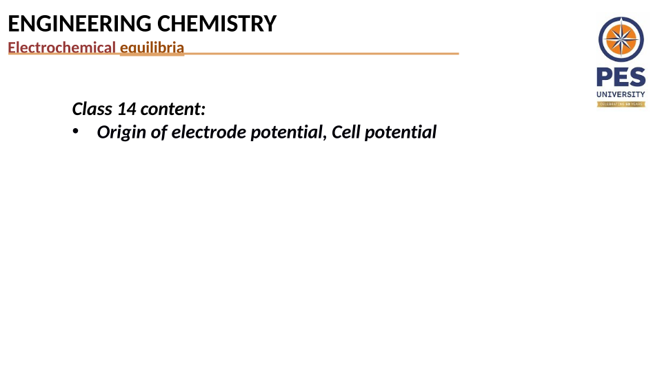
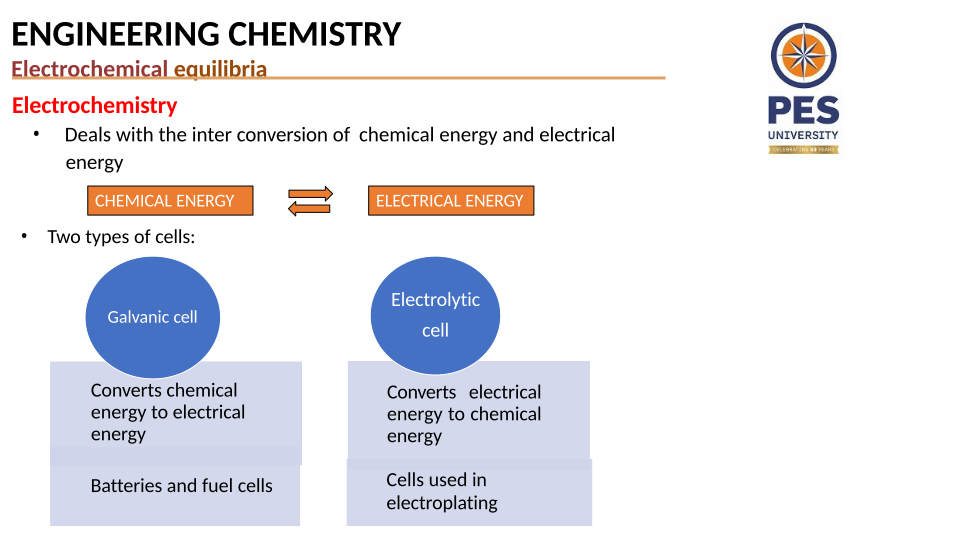
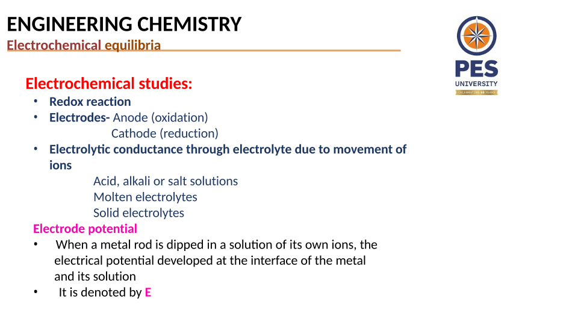
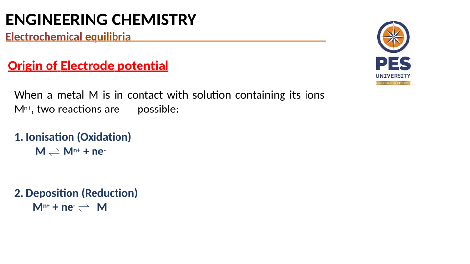
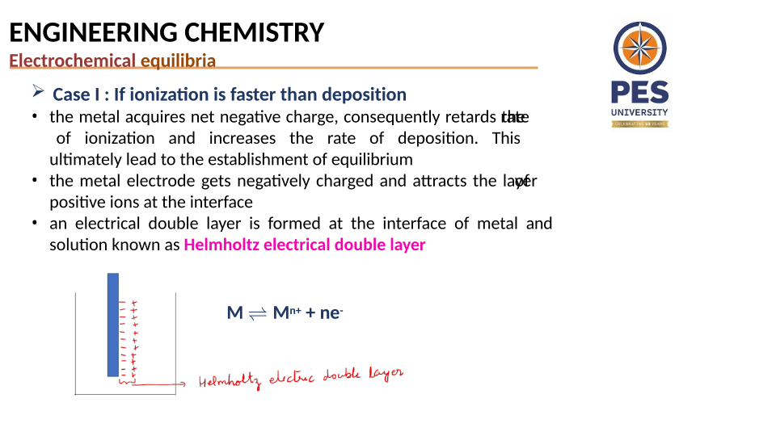
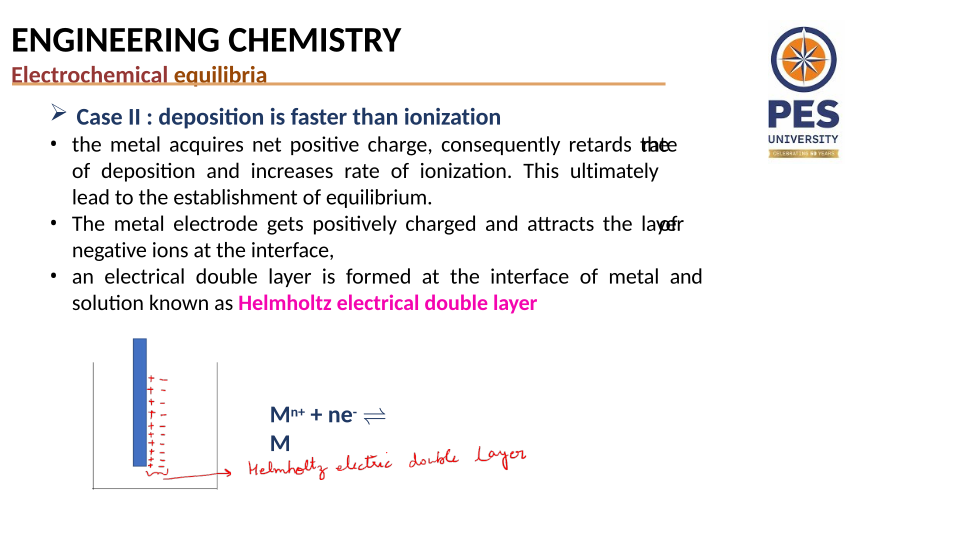
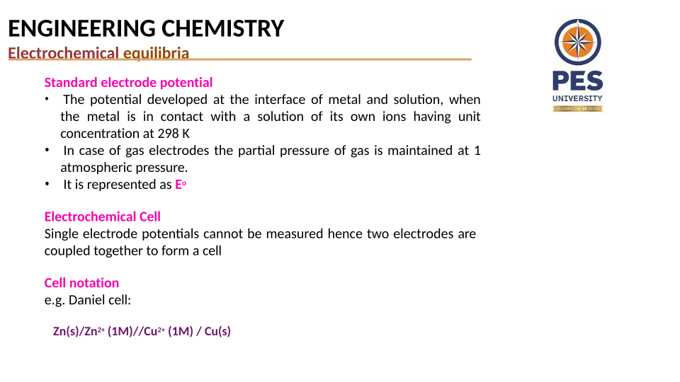
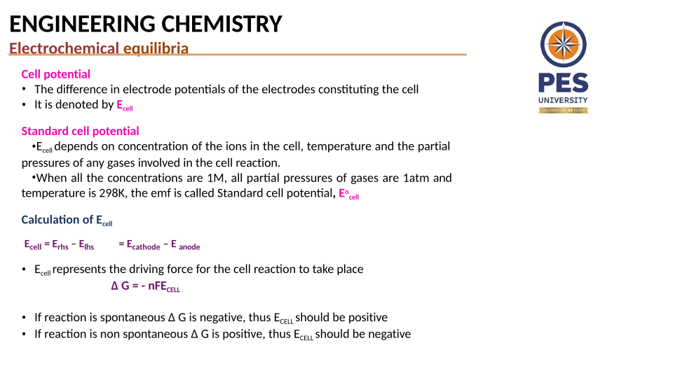

Important points and why
- Source slide page 1 (extracted text): ENGINEERING CHEMISTRY (UE26CY151 A,B) Department of Science and Humanities EV0000266 · EV0000267 · EV0000268
- Source slide page 2 (extracted text): ENGINEERING CHEMISTRY Electrochemical equilibria Class 14 content: Origin of electrode potential, Cell potential EV0000269 · EV0000270 · EV0000271
- Source slide page 3 (extracted text): ENGINEERING CHEMISTRY Electrochemical equilibria Electrochemistry Deals with the inter conversion of chemical energy and electrical energy CHEMICAL ENERGY ELECTRICAL ENERGY Two types of cells: Electrolytic cell Galvanic cell Converts chemical energy to electrical energy Converts electrical energy to chemical energy Cells used in electroplating Batteries and fuel cells EV0000272 · EV0000273 · EV0000274
- Source slide page 4 (extracted text): ENGINEERING CHEMISTRY Electrochemical equilibria Electrochemical studies: Redox reaction Electrodes- Anode (oxidation) Cathode (reduction) Electrolytic conductance through electrolyte due to movement of ions Acid, alkali or salt solutions Molten electrolytes Solid electrolytes Electrode potential When a metal rod is dipped in a solution of its own ions, the electrical potential developed at the interface of the metal and its solution It is denoted by E EV0000275 · EV0000276 · EV0000277
- Source slide page 5 (extracted text): ENGINEERING CHEMISTRY Electrochemical equilibria Origin of Electrode potential When a metal M is in contact with solution containing its ions Mn+, two reactions are possible: Ionisation (Oxidation) M ⇌ Mn+ + ne- Deposition (Reduction) Mn+ + ne- ⇌ M EV0000278 · EV0000279 · EV0000280
- Source slide page 6 (extracted text): ENGINEERING CHEMISTRY Electrochemical equilibria Case I : If ionization is faster than deposition the metal acquires net negative charge, consequently retards the rate of ionization and increases the rate of deposition. This ultimately lead to the establishment of equilibrium the metal electrode gets negatively charged and attracts the layer of positive ions at the interface an electrical double layer is formed at the interface of metal and solution known as Helmholtz electrical double layer M ⇌ Mn+ + ne- EV0000281 · EV0000282 · EV0000283
- Source slide page 7 (extracted text): ENGINEERING CHEMISTRY Electrochemical equilibria Case II : deposition is faster than ionization the metal acquires net positive charge, consequently retards the rate of deposition and increases rate of ionization. This ultimately lead to the establishment of equilibrium. The metal electrode gets positively charged and attracts the layer of negative ions at the interface, an electrical double layer is formed at the interface of metal and solution known as Helmholtz electrical double layer Mn+ + ne- ⇌ M EV0000284 · EV0000285 · EV0000286
- Source slide page 8 (extracted text): ENGINEERING CHEMISTRY Electrochemical equilibria Standard electrode potential The potential developed at the interface of metal and solution, when the metal is in contact with a solution of its own ions having unit concentration at 298 K In case of gas electrodes the partial pressure of gas is maintained at 1 atmospheric pressure. It is represented as Eo Electrochemical Cell Single electrode potentials cannot be measured hence two electrodes are coupled together to form a cell Cell notation e.g. Daniel cell: Zn(s)/Zn2+ (1M)//Cu2+ (1M) / Cu(s) EV0000287 · EV0000288 · EV0000289
- Source slide page 9 (extracted text): ENGINEERING CHEMISTRY Electrochemical equilibria Cell potential The difference in electrode potentials of the electrodes constituting the cell It is denoted by Ecell Standard cell potential Ecell depends on concentration of the ions in the cell, temperature and the partial pressures of any gases involved in the cell reaction. When all the concentrations are 1M, all partial pressures of gases are 1atm and temperature is 298K, the emf is called Standard cell potential, Eocell Calculation of Ecell Ecell = Erhs – Elhs = Ecathode – E anode Ecell represents the driving force for the cell reaction to take place ∆ G = - nFECELL If reaction is spontaneous ∆ G is negative, thus ECELL should be positive If reaction is non spontaneous ∆ G is positive, thus ECELL should be negative EV0000290 · EV0000291 · EV0000292
- Source slide page 10 (extracted text): ENGINEERING CHEMISTRY Electrochemical equilibria Electrochemical Series: In order to predict the electrochemical behavior of an electrode – electrolyte system, elements are arranged in the order of their standard reduction potentials. This arrangement is known as electrochemical series. A negative value indicates oxidation tendency while a positive value indicates a reduction tendency. [Image text, OCR] Electrochemical series Equilibrium E(volts) (Oxidants(>Reductants) Lithium:Li(aq)+e<> Li(s) -3.03 Potassium:K+(aq)+e> K(s) -2.92 Calcium:Ca²+(aq）+2e> Ca(s) -2.87 Metal Sodium:Na（aq)+e<> Na(s) -2.71 Oxidizing Magnesium:Mg²（aq）+2e<> Mg(s) -2.37 Aluminum:Al²（aq）+3e<> Al(s) -1.66 Activity Zinc:Zn²+（aq）+2e→ Zn(s) -0.76 lron:Fe²（aq）+2e<> Fe(s) -0.44 Lead:Pb²（aq）+2e> Increasing Pb(s) -0.13 Hydrogen:2H*（aq）+2e> H2(g) 0.00 Copper:Cu²(aq）+2e> Cu(s) +0.34 Silver:A（aq）+e> Ag(s) +0.80 Gold:Au²+（aq）+3e> Au(s) +1.50 Source:https://www.syedgilanis.co m/2019/04/electrochemicalseries. html EV0000293 · EV0000294 · EV0000295
- Source slide page 11 (extracted text): THANK YOU Department of Science and Humanities EV0000296 · EV0000297 · EV0000298
3Types of electrodes
This lesson is indexed from the source video titled Types of electrodes. Its complete timestamped transcript is preserved below in segment order. The original video path and content hash are recorded in datasets/lecture-corpus.json. Transcript text is source wording; it has not been silently corrected or rewritten. A candidate slide deck is grouped here according to the current matching score; the exact path and page locators are listed in the source evidence. EV0000026 · EV0000027
Graphs and diagrams
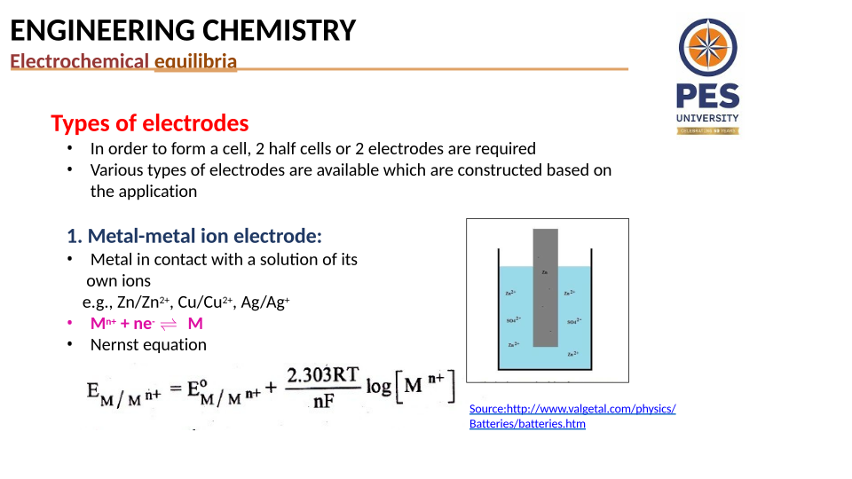
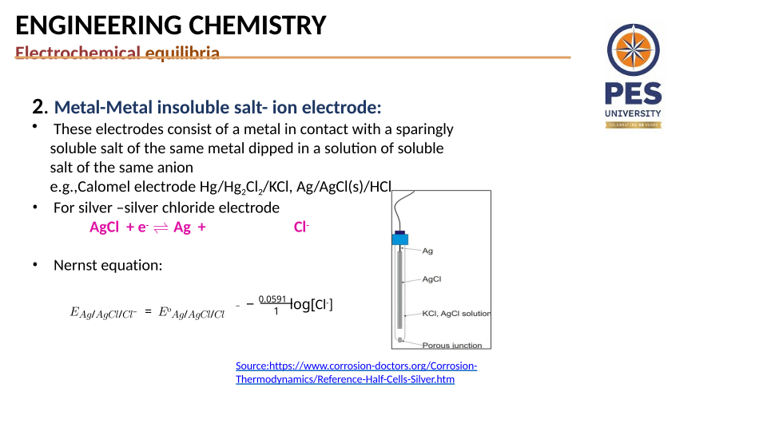
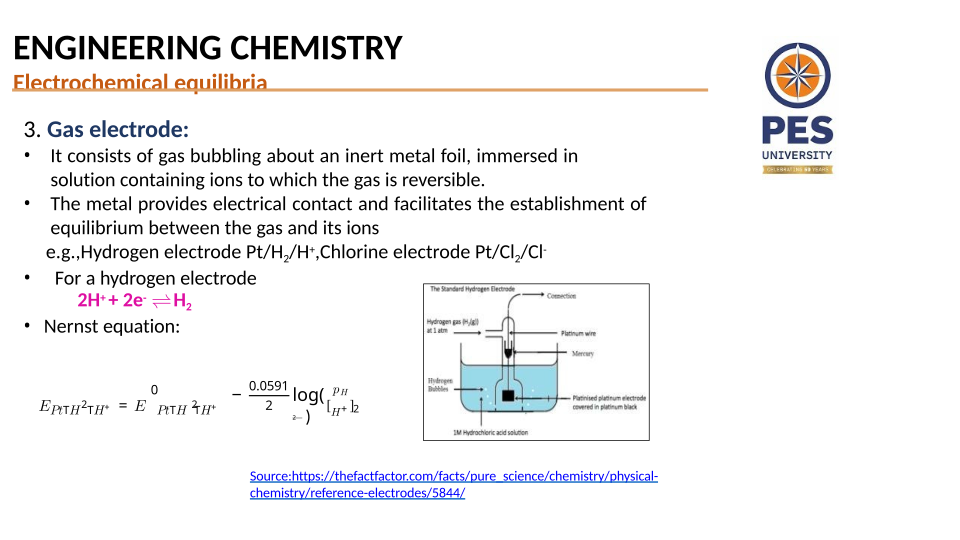
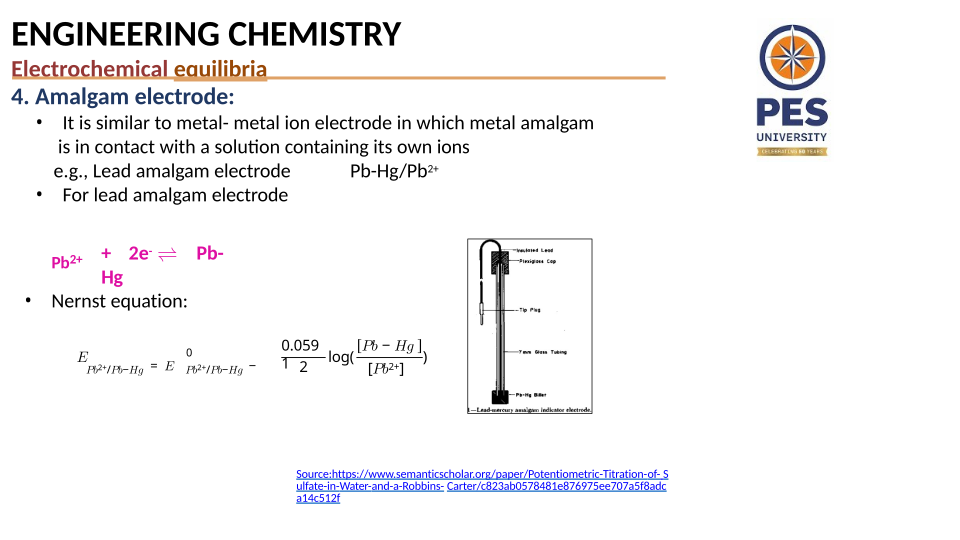
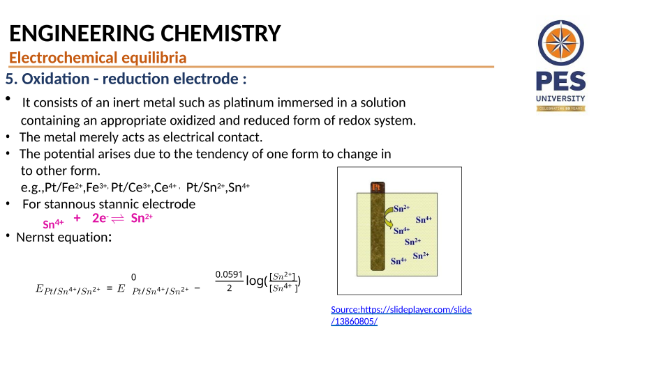
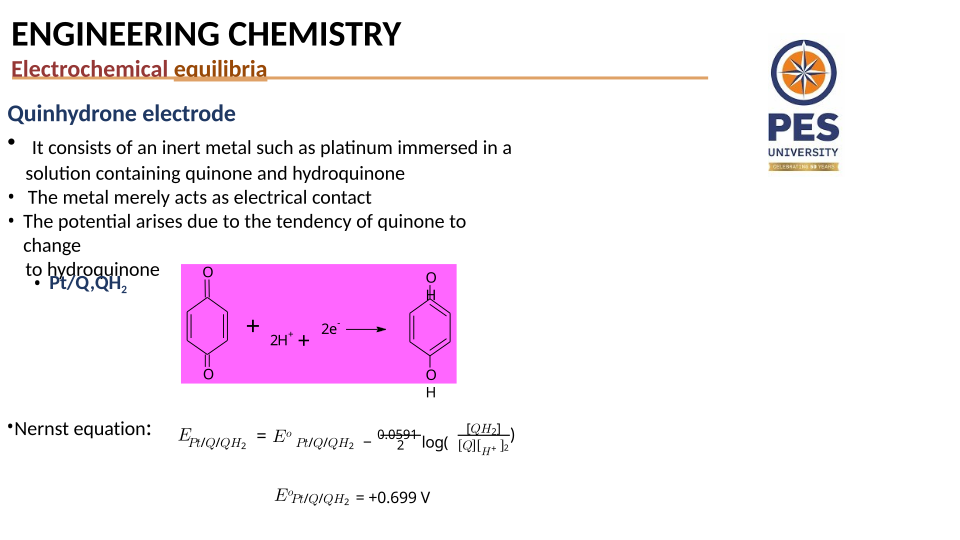
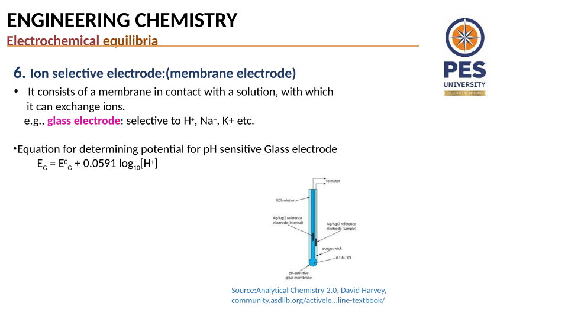

Important points and why
- Source slide page 1 (extracted text): ENGINEERING CHEMISTRY (UE26CY151 A,B) Department of Science and Humanities EV0000317 · EV0000318 · EV0000319
- Source slide page 2 (extracted text): ENGINEERING CHEMISTRY Electrochemical equilibria Class 16 content: Types of electrodes EV0000320 · EV0000321 · EV0000322
- Source slide page 3 (extracted text): ENGINEERING CHEMISTRY Electrochemical equilibria Types of electrodes In order to form a cell, 2 half cells or 2 electrodes are required Various types of electrodes are available which are constructed based on the application Metal-metal ion electrode: Metal in contact with a solution of its own ions e.g., Zn/Zn2+, Cu/Cu2+, Ag/Ag+ Mn+ + ne- ⇌ M Nernst equation Source:http://www.valgetal.com/physics/ Batteries/batteries.htm EV0000323 · EV0000324 · EV0000325
- Source slide page 4 (extracted text): ENGINEERING CHEMISTRY Electrochemical equilibria 2. Metal-Metal insoluble salt- ion electrode: These electrodes consist of a metal in contact with a sparingly soluble salt of the same metal dipped in a solution of soluble salt of the same anion e.g.,Calomel electrode Hg/Hg2Cl2/KCl, Ag/AgCl(s)/HCl For silver –silver chloride electrode AgCl + e- ⇌ Ag + Cl- Nernst equation: − − 0.0591 log[Cl-] 𝐸𝐴𝑔/𝐴𝑔𝐶𝑙/𝐶𝑙− = 𝐸𝑜𝐴𝑔/𝐴𝑔𝐶𝑙/𝐶𝑙 1 Source:https://www.corrosion-doctors.org/Corrosion- Thermodynamics/Reference-Half-Cells-Silver.htm EV0000326 · EV0000327 · EV0000328
- Source slide page 5 (extracted text): ENGINEERING CHEMISTRY Electrochemical equilibria 3. Gas electrode: It consists of gas bubbling about an inert metal foil, immersed in solution containing ions to which the gas is reversible. The metal provides electrical contact and facilitates the establishment of equilibrium between the gas and its ions e.g.,Hydrogen electrode Pt/H2/H+,Chlorine electrode Pt/Cl2/Cl- For a hydrogen electrode 2H+ + 2e- ⇌ H2 Nernst equation: [Image text, OCR] The Standard Hydrogen Electrode Cormeetion Hydrogen gas (H,(g]) at1atm Platinum wire Mercury Hydrogen Bubbles Piatinisedplatinum electrode covered in platinum black IM Hydrochloric acid solution 0.0591 𝑝𝐻 0 − log( 2 ) 𝐸𝑃𝑡Τ𝐻 Τ𝐻+ = 𝐸 𝑃𝑡Τ𝐻 Τ𝐻+ 𝐻+ 2 2 2 2 Source:https://thefactfactor.com/facts/pure_science/chemistry/physical- chemistry/reference-electrodes/5844/ EV0000329 · EV0000330 · EV0000331
- Source slide page 6 (extracted text): ENGINEERING CHEMISTRY Electrochemical equilibria 4. Amalgam electrode: It is similar to metal- metal ion electrode in which metal amalgam is in contact with a solution containing its own ions e.g., Lead amalgam electrode Pb-Hg/Pb2+ For lead amalgam electrode Pb2+ + 2e- ⇌ Pb-Hg Nernst equation: 0.0591 𝑃𝑏 − 𝐻𝑔 0 𝐸 log( ) 𝑃𝑏2+/𝑃𝑏−𝐻𝑔 = 𝐸 𝑃𝑏2+/𝑃𝑏−𝐻𝑔 − 2 [𝑃𝑏2+] Source:https://www.semanticscholar.org/paper/Potentiometric-Titration-of- Sulfate-in-Water-and-a-Robbins- Carter/c823ab0578481e876975ee707a5f8adca14c512f EV0000332 · EV0000333 · EV0000334
- Source slide page 7 (extracted text): ENGINEERING CHEMISTRY Electrochemical equilibria 5. Oxidation - reduction electrode : It consists of an inert metal such as platinum immersed in a solution containing an appropriate oxidized and reduced form of redox system. The metal merely acts as electrical contact. The potential arises due to the tendency of one form to change in to other form. e.g.,Pt/Fe2+,Fe3+, Pt/Ce3+,Ce4+ , Pt/Sn2+,Sn4+ For stannous stannic electrode Sn4+ + 2e- ⇌ Sn2+ Nernst equation: 0.0591 [𝑆𝑛2+] 0 log( ) 𝐸𝑃𝑡/𝑆𝑛4+/𝑆𝑛2+ = 𝐸 𝑃𝑡/𝑆𝑛4+/𝑆𝑛2+ − 4+ 2 [𝑆𝑛 ] Source:https://slideplayer.com/slide /13860805/ EV0000335 · EV0000336 · EV0000337
- Source slide page 8 (extracted text): ENGINEERING CHEMISTRY Electrochemical equilibria Quinhydrone electrode It consists of an inert metal such as platinum immersed in a solution containing quinone and hydroquinone The metal merely acts as electrical contact The potential arises due to the tendency of quinone to change to hydroquinone O OH Pt/Q,QH2 2H+ + + 2e- O OH Nernst equation: − 0.0591 log( [𝑄𝐻2] 𝐸 = 𝐸𝑜 ) 𝐻+ 2 𝑃𝑡/𝑄/𝑄𝐻2 𝑃𝑡/𝑄/𝑄𝐻2 2 𝑄 𝐸𝑜 𝑃𝑡/𝑄/𝑄𝐻2 = +0.699 V EV0000338 · EV0000339 · EV0000340
- Source slide page 9 (extracted text): ENGINEERING CHEMISTRY Electrochemical equilibria 6. Ion selective electrode:(membrane electrode) It consists of a membrane in contact with a solution, with which it can exchange ions. e.g., glass electrode: selective to H+, Na+, K+ etc. Equation for determining potential for pH sensitive Glass electrode EG = E0G + 0.0591 log10[H+] Source:Analytical Chemistry 2.0, David Harvey, community.asdlib.org/activele...line-textbook/ EV0000341 · EV0000342 · EV0000343
- Source slide page 10 (extracted text): THANK YOU Department of Science and Humanities EV0000344 · EV0000345 · EV0000346
4Reference electrodes, calomel electrode
This lesson is indexed from the source video titled Reference electrodes, calomel electrode. Its complete timestamped transcript is preserved below in segment order. The original video path and content hash are recorded in datasets/lecture-corpus.json. Transcript text is source wording; it has not been silently corrected or rewritten. A candidate slide deck is grouped here according to the current matching score; the exact path and page locators are listed in the source evidence. EV0000042 · EV0000043
Graphs and diagrams
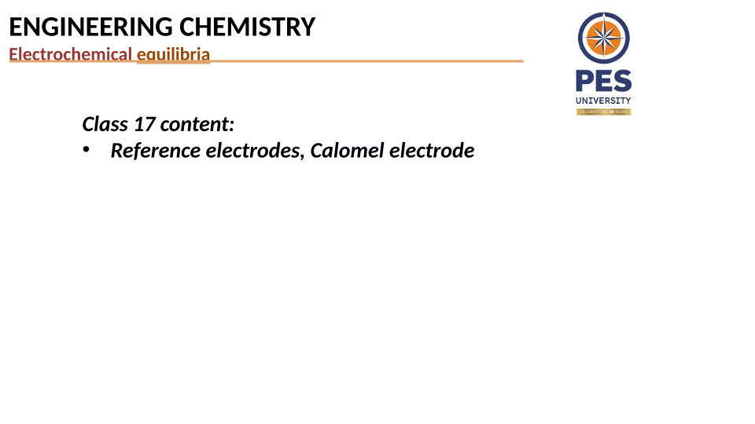
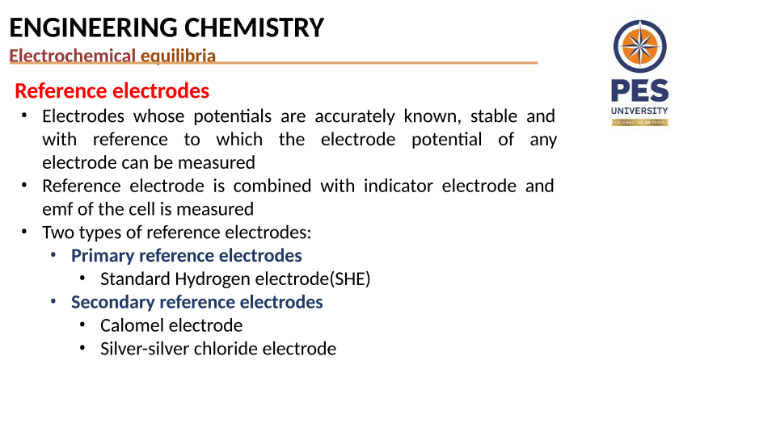
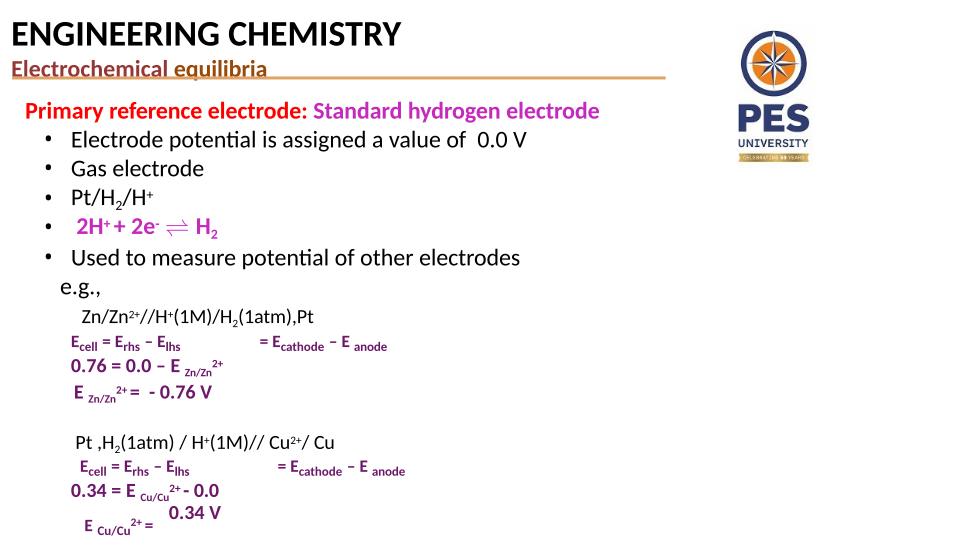
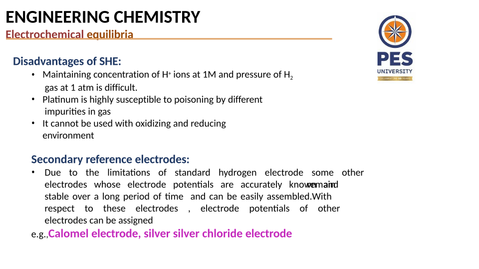
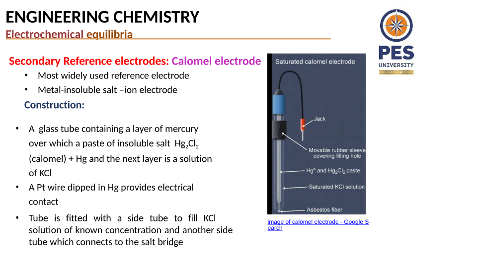
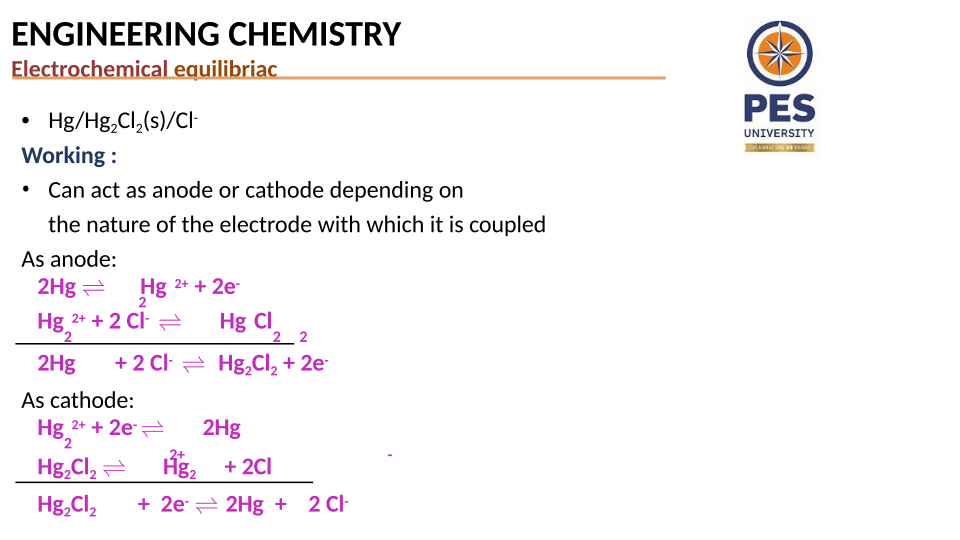
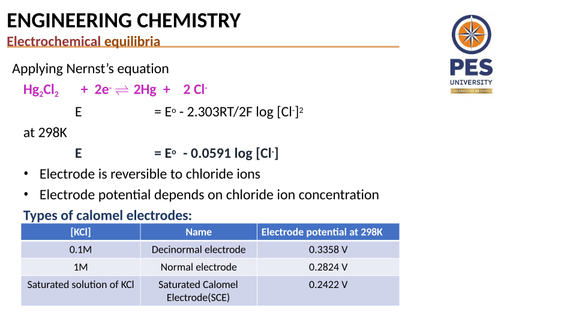
Important points and why
- Source slide page 1 (extracted text): ENGINEERING CHEMISTRY (UE26CY151 A,B) Department of Science and Humanities EV0000347 · EV0000348 · EV0000349
- Source slide page 2 (extracted text): ENGINEERING CHEMISTRY Electrochemical equilibria Class 17 content: Reference electrodes, Calomel electrode EV0000350 · EV0000351 · EV0000352
- Source slide page 3 (extracted text): ENGINEERING CHEMISTRY Electrochemical equilibria Reference electrodes Electrodes whose potentials are accurately known, stable and with reference to which the electrode potential of any electrode can be measured Reference electrode is combined with indicator electrode and emf of the cell is measured Two types of reference electrodes: Primary reference electrodes Standard Hydrogen electrode(SHE) Secondary reference electrodes Calomel electrode Silver-silver chloride electrode EV0000353 · EV0000354 · EV0000355
- Source slide page 4 (extracted text): ENGINEERING CHEMISTRY Electrochemical equilibria Primary reference electrode: Standard hydrogen electrode Electrode potential is assigned a value of 0.0 V Gas electrode Pt/H2/H+ 2H+ + 2e- ⇌ H2 Used to measure potential of other electrodes e.g., Zn/Zn2+//H+(1M)/H2(1atm),Pt Ecell = Erhs – Elhs = Ecathode – E anode 0.76 = 0.0 – E Zn/Zn2+ E Zn/Zn2+ = - 0.76 V Pt ,H2(1atm) / H+(1M)// Cu2+/ Cu Ecell = Erhs – Elhs = Ecathode – E anode 0.34 = E Cu/Cu2+ - 0.0 0.34 V E Cu/Cu2+ = EV0000356 · EV0000357 · EV0000358
- Source slide page 5 (extracted text): ENGINEERING CHEMISTRY Electrochemical equilibria Disadvantages of SHE: Maintaining concentration of H+ ions at 1M and pressure of H2 gas at 1 atm is difficult. Platinum is highly susceptible to poisoning by different impurities in gas It cannot be used with oxidizing and reducing environment Secondary reference electrodes: Due to the limitations of standard hydrogen electrode some other electrodes whose electrode potentials are accurately known and remain stable over a long period of time and can be easily assembled. With respect to these electrodes , electrode potentials of other electrodes can be assigned e.g.,Calomel electrode, silver silver chloride electrode EV0000359 · EV0000360 · EV0000361
- Source slide page 6 (extracted text): ENGINEERING CHEMISTRY Electrochemical equilibria Secondary Reference electrodes: Calomel electrode Most widely used reference electrode Metal-insoluble salt –ion electrode Construction: [Image text, OCR] Saturatedcalomelelectrode Jack Movablerubbersleeve coveringfillinghole Hg°andHg2Cl2paste Saturated KClsolution Asbestos fiber A glass tube containing a layer of mercury over which a paste of insoluble salt Hg2Cl2 (calomel) + Hg and the next layer is a solution of KCl A Pt wire dipped in Hg provides electrical contact Tube is fitted with a side tube to fill KCl solution of known concentration and another side tube which connects to the salt bridge image of calomel electrode - Google Search EV0000362 · EV0000363 · EV0000364
- Source slide page 7 (extracted text): ENGINEERING CHEMISTRY Electrochemical equilibriac Hg/Hg2Cl2(s)/Cl- Working : Can act as anode or cathode depending on the nature of the electrode with which it is coupled As anode: 2Hg ⇌ Hg 2+ + 2e- 2 Hg 2+ + 2 Cl- ⇌ Hg Cl 2 2 2 2Hg + 2 Cl- ⇌ Hg2Cl2 + 2e- As cathode: Hg 2+ + 2e- ⇌ 2Hg 2 2+ - Hg2Cl2 ⇌ Hg2 + 2Cl Hg2Cl2 + 2e- ⇌ 2Hg + 2 Cl- EV0000365 · EV0000366 · EV0000367
- Source slide page 8 (extracted text): ENGINEERING CHEMISTRY Electrochemical equilibria Applying Nernst’s equation Hg2Cl2 + 2e- ⇌ 2Hg + 2 Cl- E = Eo - 2.303RT/2F log [Cl-]2 at 298K E = Eo - 0.0591 log [Cl-] Electrode is reversible to chloride ions Electrode potential depends on chloride ion concentration Types of calomel electrodes: [KCl] | Name | Electrode potential at 298K 0.1M | Decinormal electrode | 0.3358 V 1M | Normal electrode | 0.2824 V Saturated solution of KCl | Saturated Calomel Electrode(SCE) | 0.2422 V EV0000368 · EV0000369 · EV0000370
- Source slide page 9 (extracted text): THANK YOU Department of Science and Humanities EV0000371 · EV0000372 · EV0000373
5Concentration cells, types of concentration cells
This lesson is indexed from the source video titled Concentration cells, types of concentration cells. Its complete timestamped transcript is preserved below in segment order. The original video path and content hash are recorded in datasets/lecture-corpus.json. Transcript text is source wording; it has not been silently corrected or rewritten. A candidate slide deck is grouped here according to the current matching score; the exact path and page locators are listed in the source evidence. EV0000062 · EV0000063
Graphs and diagrams
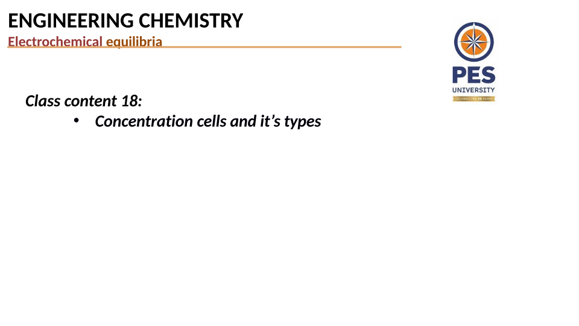
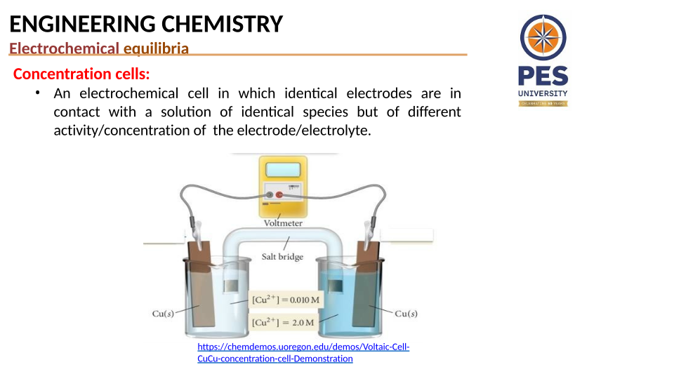
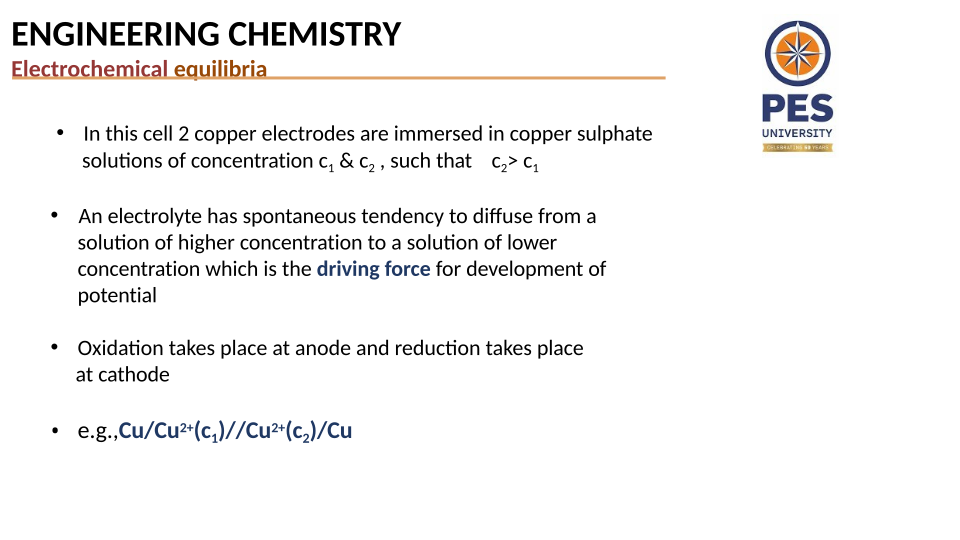
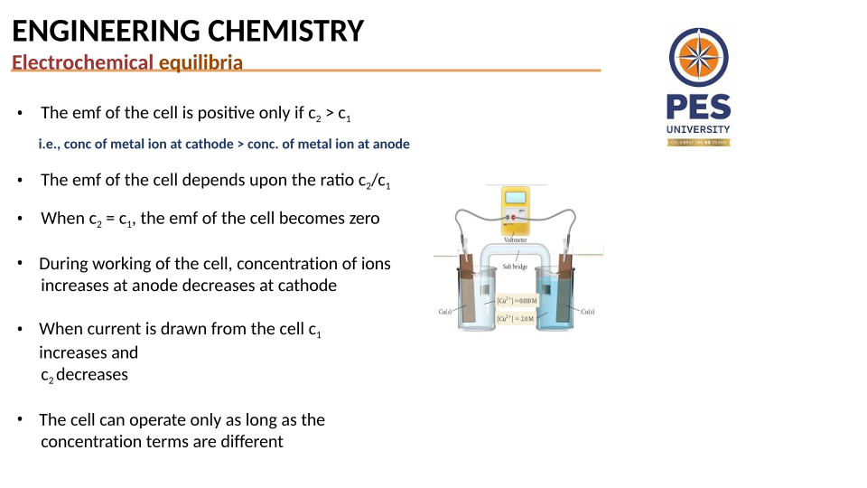
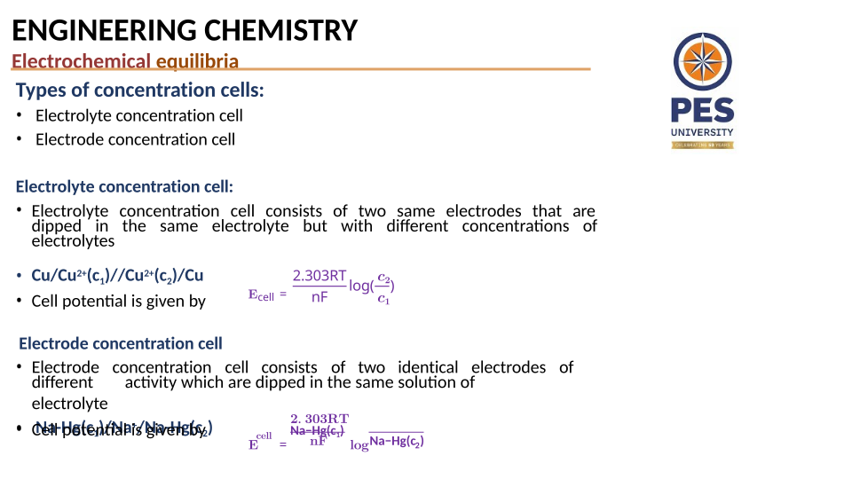
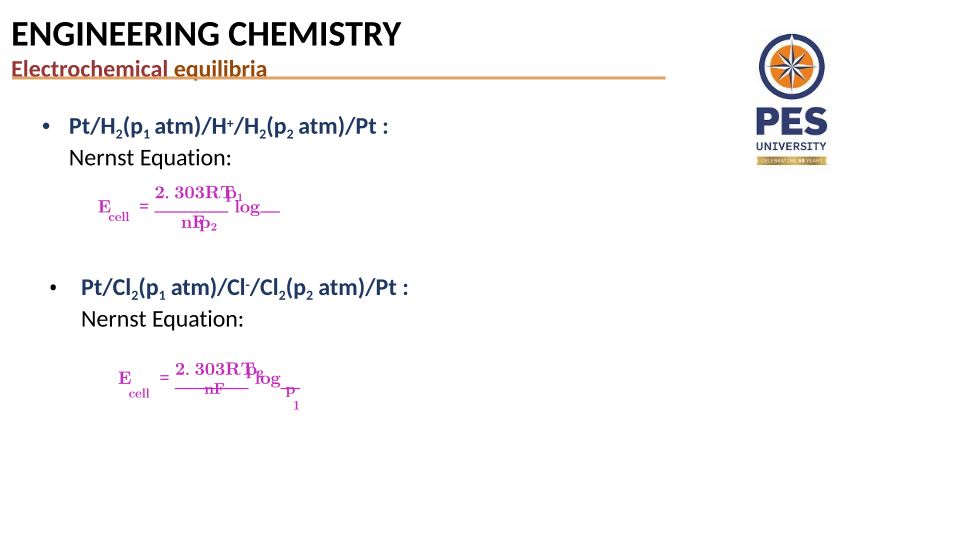
Important points and why
- Source slide page 1 (extracted text): ENGINEERING CHEMISTRY (UE26CY151 A,B) Department of Science and Humanities EV0000374 · EV0000375 · EV0000376
- Source slide page 2 (extracted text): ENGINEERING CHEMISTRY Electrochemical equilibria Class content 18: Concentration cells and it’s types EV0000377 · EV0000378 · EV0000379
- Source slide page 3 (extracted text): ENGINEERING CHEMISTRY Electrochemical equilibria Concentration cells: An electrochemical cell in which identical electrodes are in contact with a solution of identical species but of different activity/concentration of the electrode/electrolyte. [Image text, OCR] Voltmeter Saltbridge [Cu²+]=0.010M Cu(s) Cu(s) [Cu²+]=2.0M https://chemdemos.uoregon.edu/demos/Voltaic-Cell- CuCu-concentration-cell-Demonstration EV0000380 · EV0000381 · EV0000382
- Source slide page 4 (extracted text): ENGINEERING CHEMISTRY Electrochemical equilibria In this cell 2 copper electrodes are immersed in copper sulphate solutions of concentration c1 & c2 , such that c2> c1 An electrolyte has spontaneous tendency to diffuse from a solution of higher concentration to a solution of lower concentration which is the driving force for development of potential Oxidation takes place at anode and reduction takes place at cathode e.g.,Cu/Cu2+(c1)//Cu2+(c2)/Cu EV0000383 · EV0000384 · EV0000385
- Source slide page 5 (extracted text): ENGINEERING CHEMISTRY Electrochemical equilibria Reactions : At anode: Cu Cu2+ (c1)+2e- At cathode: Cu2+ (c2)+ 2e- Cu Expression for cell potential: The emf of the cell = E cathode – E anode = 𝑬𝒐 + 𝟐. 𝟑𝟎𝟑𝑹𝑻 𝐥𝐨𝐠 𝒄 𝑬 𝒄𝒂𝒕𝒉𝒐𝒅𝒆 𝟐 𝒏𝑭 = 𝐄𝐨 + 𝟐. 𝟑𝟎𝟑𝐑𝐓 𝐥𝐨𝐠 𝐜 𝐄 𝐚𝐧𝐨𝐝𝐞 𝟏 𝐧𝐅 𝑬𝒐 + 𝟐. 𝟑𝟎𝟑𝑹𝑻 𝐥𝐨𝐠 𝒄 𝟐. 𝟑𝟎𝟑𝑹𝑻 𝒐 𝑬 = − 𝑬 + 𝒍𝒐𝒈 𝒄 𝒄𝒆𝒍𝒍 𝟐 𝟏 𝒏𝑭 𝒏𝑭 2.303RT 𝒄𝟐 log( ) 𝑬cell = nF 𝒄𝟏 = 𝟎.𝟎𝟓𝟗𝟏 𝒄𝟐 At 298K, 𝑬 log( ) cell 𝒏 𝒄𝟏 EV0000386 · EV0000387 · EV0000388
- Source slide page 6 (extracted text): ENGINEERING CHEMISTRY Electrochemical equilibria The emf of the cell is positive only if c2 > c1 i.e., conc of metal ion at cathode > conc. of metal ion at anode The emf of the cell depends upon the ratio c2/c1 When c2 = c1, the emf of the cell becomes zero During working of the cell, concentration of ions increases at anode decreases at cathode When current is drawn from the cell c1 increases and c2 decreases The cell can operate only as long as the concentration terms are different EV0000389 · EV0000390 · EV0000391
- Source slide page 7 (extracted text): ENGINEERING CHEMISTRY Electrochemical equilibria Types of concentration cells: Electrolyte concentration cell Electrode concentration cell Electrolyte concentration cell: Electrolyte concentration cell consists of two same electrodes that are dipped in the same electrolyte but with different concentrations of electrolytes Cu/Cu2+(c1)//Cu2+(c2)/Cu Cell potential is given by 2.303RT 𝒄𝟐 log( ) 𝐄cell = nF 𝒄𝟏 Electrode concentration cell Electrode concentration cell consists of two identical electrodes of different activity which are dipped in the same solution of electrolyte Na-Hg(c1)/Na+/Na-Hg(c2) 𝟐. 𝟑𝟎𝟑𝐑𝐓 Na−Hg(c1) 𝐄 = 𝐥𝐨𝐠 Cell potential is given by 𝐜𝐞𝐥𝐥 𝐧𝐅 Na−Hg(c ) 2 EV0000392 · EV0000393 · EV0000394
- Source slide page 8 (extracted text): ENGINEERING CHEMISTRY Electrochemical equilibria Na-Hg(c1)/Na+/Na-Hg(c2) : Reactions are : At anode: Na-Hg(c1) Na+ + e- At cathode: Na+ + e- Na-Hg(c2) Cell potential = E cathode – E anode = 𝑬𝒐 − 𝟐. 𝟑𝟎𝟑𝑹𝑻 𝐥𝐨𝐠 Na−Hg(c2) 𝒏𝑭 Na+ = 𝐄𝐨 − 𝟐. 𝟑𝟎𝟑𝐑𝐓 𝐥𝐨𝐠 Na−Hg(c1) 𝐧𝐅 Na+ 𝑬 𝒄𝒂𝒕𝒉𝒐𝒅𝒆 𝐄 𝐚𝐧𝐨𝐝𝐞 𝟐. 𝟑𝟎𝟑𝐑𝐓 Na−Hg(c1) 𝐄 = 𝐥𝐨𝐠 𝐜𝐞𝐥𝐥 𝐧𝐅 Na−Hg(c ) 2 EV0000395 · EV0000396 · EV0000397
- Source slide page 9 (extracted text): ENGINEERING CHEMISTRY Electrochemical equilibria Pt/H2(p1 atm)/H+/H2(p2 atm)/Pt : Nernst Equation: 𝟐. 𝟑𝟎𝟑𝐑𝐓 𝐩𝟏 𝐄 = 𝐥𝐨𝐠 𝐧𝐅 𝐩𝟐 𝐜𝐞𝐥𝐥 Pt/Cl2(p1 atm)/Cl-/Cl2(p2 atm)/Pt : Nernst Equation: 𝟐. 𝟑𝟎𝟑𝐑𝐓 𝐩𝟐 𝐄 = 𝐧𝐅 𝐥𝐨𝐠 𝐩 𝟏 𝐜𝐞𝐥𝐥 EV0000398 · EV0000399 · EV0000400
- Source slide page 10 (extracted text): THANK YOU Department of Science and Humanities EV0000401 · EV0000402 · EV0000403
6Electrochemical theory of corrosion
This lesson is indexed from the source video titled Electrochemical theory of corrosion. Its complete timestamped transcript is preserved below in segment order. The original video path and content hash are recorded in datasets/lecture-corpus.json. Transcript text is source wording; it has not been silently corrected or rewritten. A candidate slide deck is grouped here according to the current matching score; the exact path and page locators are listed in the source evidence. EV0000090 · EV0000091
Graphs and diagrams
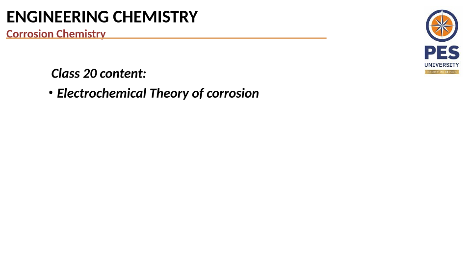
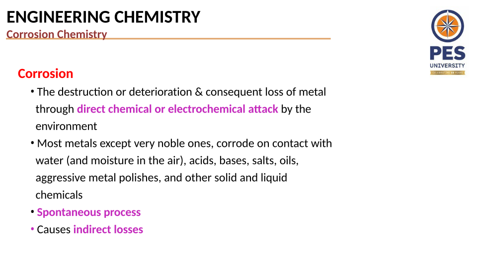
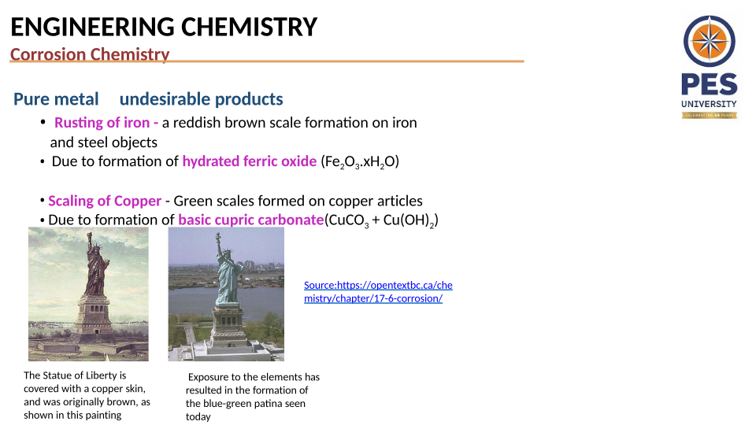
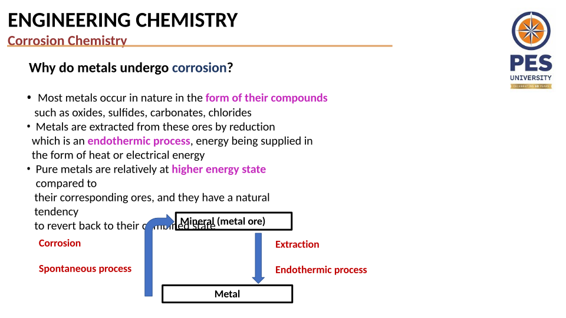
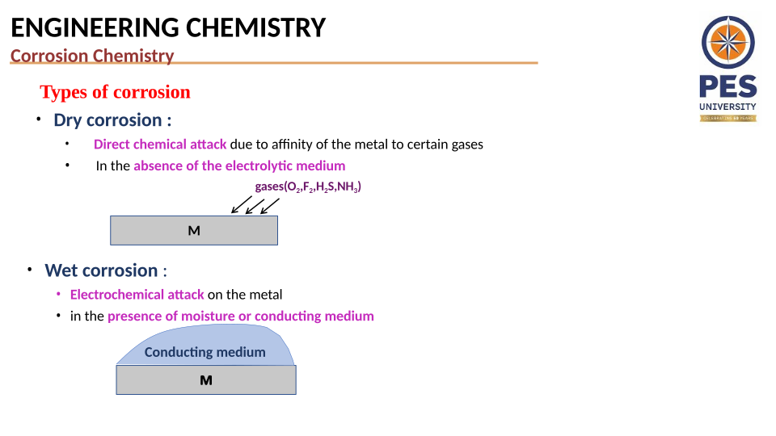
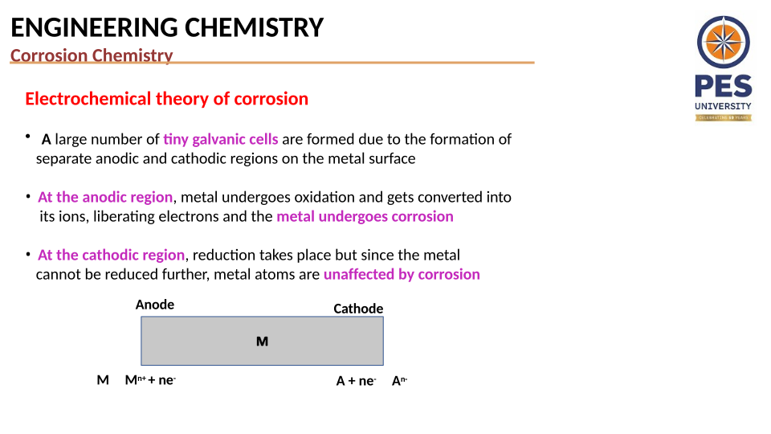
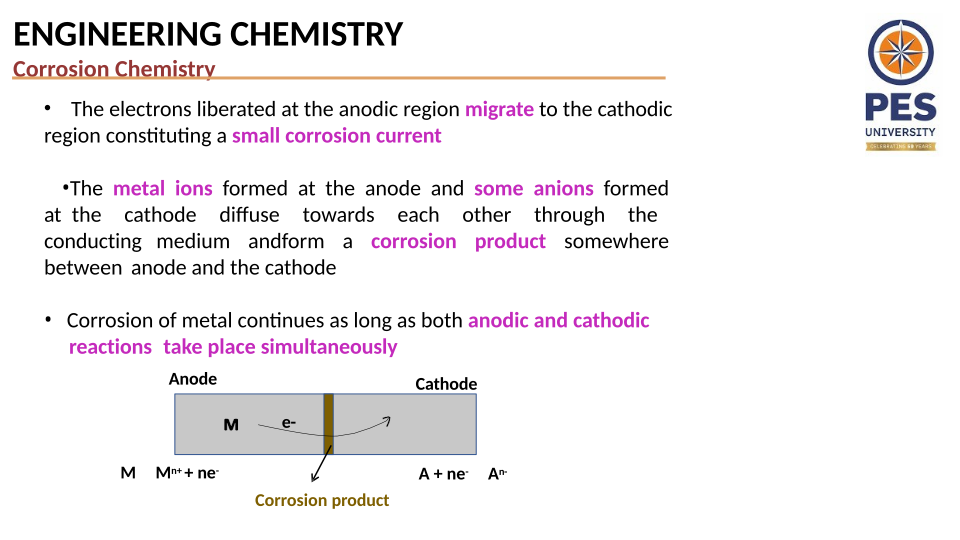
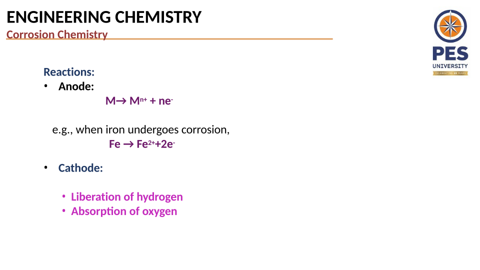
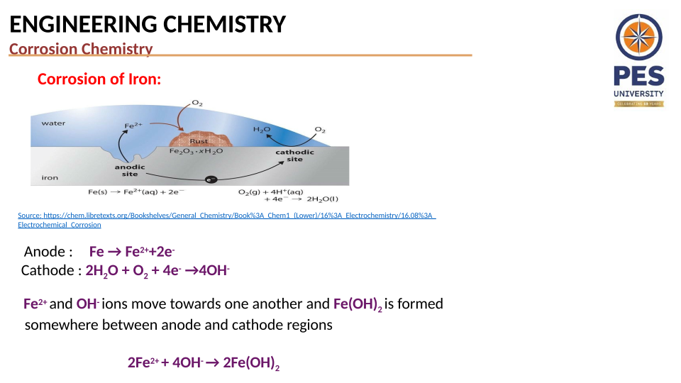
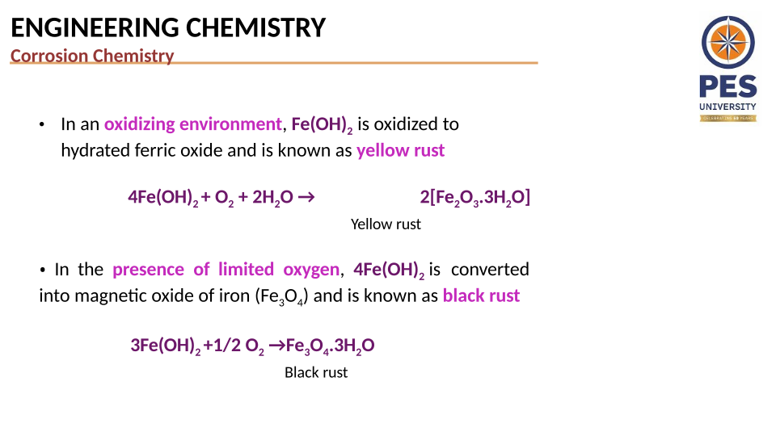

Important points and why
- Source slide page 1 (extracted text): ENGINEERING CHEMISTRY (UE26CY151 A,B) Department of Science and Humanities EV0000404 · EV0000405 · EV0000406
- Source slide page 2 (extracted text): ENGINEERING CHEMISTRY Corrosion Chemistry Class 20 content: Electrochemical Theory of corrosion EV0000407 · EV0000408 · EV0000409
- Source slide page 3 (extracted text): ENGINEERING CHEMISTRY Corrosion Chemistry Corrosion The destruction or deterioration & consequent loss of metal through direct chemical or electrochemical attack by the environment Most metals except very noble ones, corrode on contact with water (and moisture in the air), acids, bases, salts, oils, aggressive metal polishes, and other solid and liquid chemicals Spontaneous process Causes indirect losses EV0000410 · EV0000411 · EV0000412
- Source slide page 4 (extracted text): ENGINEERING CHEMISTRY Corrosion Chemistry Pure metal undesirable products Rusting of iron - a reddish brown scale formation on iron and steel objects Due to formation of hydrated ferric oxide (Fe2O3.xH2O) Scaling of Copper - Green scales formed on copper articles Due to formation of basic cupric carbonate(CuCO3 + Cu(OH)2) Source:https://opentextbc.ca/che mistry/chapter/17-6-corrosion/ The Statue of Liberty is covered with a copper skin, and was originally brown, as shown in this painting Exposure to the elements has resulted in the formation of the blue-green patina seen today EV0000413 · EV0000414 · EV0000415
- Source slide page 5 (extracted text): ENGINEERING CHEMISTRY Corrosion Chemistry Why do metals undergo corrosion? Most metals occur in nature in the form of their compounds such as oxides, sulfides, carbonates, chlorides Metals are extracted from these ores by reduction which is an endothermic process, energy being supplied in the form of heat or electrical energy Pure metals are relatively at higher energy state compared to their corresponding ores, and they have a natural tendency to revert back to their combined state Mineral (metal ore) Corrosion Extraction Spontaneous process Endothermic process Metal EV0000416 · EV0000417 · EV0000418
- Source slide page 6 (extracted text): ENGINEERING CHEMISTRY Corrosion Chemistry Types of corrosion Dry corrosion : Direct chemical attack due to affinity of the metal to certain gases In the absence of the electrolytic medium gases(O2,F2,H2S,NH3) M Wet corrosion : Electrochemical attack on the metal in the presence of moisture or conducting medium Conducting medium EV0000419 · EV0000420 · EV0000421
- Source slide page 7 (extracted text): ENGINEERING CHEMISTRY Corrosion Chemistry Electrochemical theory of corrosion A large number of tiny galvanic cells are formed due to the formation of separate anodic and cathodic regions on the metal surface At the anodic region, metal undergoes oxidation and gets converted into its ions, liberating electrons and the metal undergoes corrosion At the cathodic region, reduction takes place but since the metal cannot be reduced further, metal atoms are unaffected by corrosion Anode Cathode M Mn+ + ne- A + ne- An- EV0000422 · EV0000423 · EV0000424
- Source slide page 8 (extracted text): ENGINEERING CHEMISTRY Corrosion Chemistry The electrons liberated at the anodic region migrate to the cathodic region constituting a small corrosion current The metal ions formed at the anode and some anions formed at the cathode diffuse towards each other through the conducting medium andform a corrosion product somewhere between anode and the cathode Corrosion of metal continues as long as both anodic and cathodic reactions take place simultaneously Anode Cathode e- M Mn+ + ne- A + ne- An- Corrosion product EV0000425 · EV0000426 · EV0000427
- Source slide page 9 (extracted text): ENGINEERING CHEMISTRY Corrosion Chemistry Reactions: Anode: M→ Mn+ + ne- e.g., when iron undergoes corrosion, Fe → Fe2++2e- Cathode: Liberation of hydrogen Absorption of oxygen EV0000428 · EV0000429 · EV0000430
- Source slide page 10 (extracted text): ENGINEERING CHEMISTRY Corrosion Chemistry Liberation of hydrogen In acidic medium 2H++2e-→H2↑ In neutral or alkaline medium 2H2O+2e-→2OH─+H2↑ Absorption of oxygen In acidic medium 4H+ + O2 + 4e- → 2H2O In neutral or alkaline medium 2H2O + O2 + 4e- →4OH- EV0000431 · EV0000432 · EV0000433
- Source slide page 11 (extracted text): ENGINEERING CHEMISTRY Corrosion Chemistry Corrosion of Iron: [Image text, OCR] water Fe2+ H2O Rust Fe2O3·xH20 cathodic site anodic site iron Fe(s)→Fe2+（aq)+2e O2(g) + 4H+(aq) +4e-→2H2O（1) Source: https://chem.libretexts.org/Bookshelves/General_Chemistry/Book%3A_Chem1_(Lower)/16%3A_Electrochemistry/16.08%3A_ Electrochemical_Corrosion Anode : Fe → Fe2++2e- Cathode : 2H2O + O2 + 4e- →4OH- Fe2+ and OH- ions move towards one another and Fe(OH)2 is formed somewhere between anode and cathode regions 2Fe2+ + 4OH- → 2Fe(OH)2 EV0000434 · EV0000435 · EV0000436
- Source slide page 12 (extracted text): ENGINEERING CHEMISTRY Corrosion Chemistry In an oxidizing environment, Fe(OH)2 is oxidized to hydrated ferric oxide and is known as yellow rust 4Fe(OH)2 + O2 + 2H2O → 2[Fe2O3.3H2O] Yellow rust In the presence of limited oxygen, 4Fe(OH)2 is converted into magnetic oxide of iron (Fe3O4) and is known as black rust 3Fe(OH)2 +1/2 O2 →Fe3O4.3H2O Black rust EV0000437 · EV0000438 · EV0000439
- Source slide page 13 (extracted text): THANK YOU Department of Science and Humanities EV0000440 · EV0000441 · EV0000442
7Numerical problems based on electrode and cell potential determination
This lesson is indexed from the source video titled Numerical problems based on electrode and cell potential determination. Its complete timestamped transcript is preserved below in segment order. The original video path and content hash are recorded in datasets/lecture-corpus.json. Transcript text is source wording; it has not been silently corrected or rewritten. A candidate slide deck is grouped here according to the current matching score; the exact path and page locators are listed in the source evidence. EV0000110 · EV0000111
Graphs and diagrams

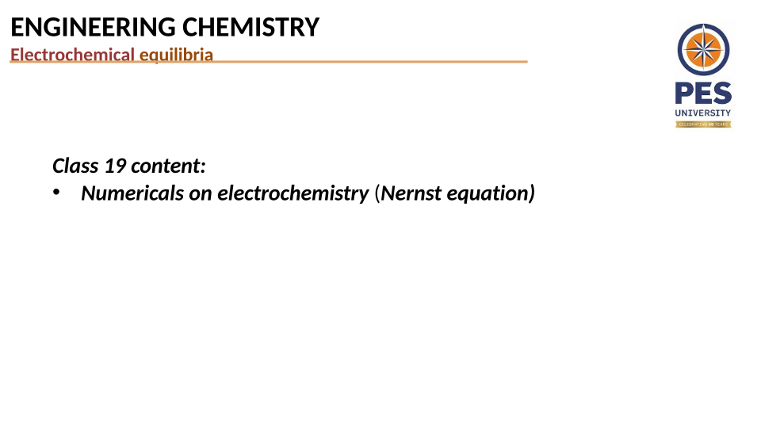
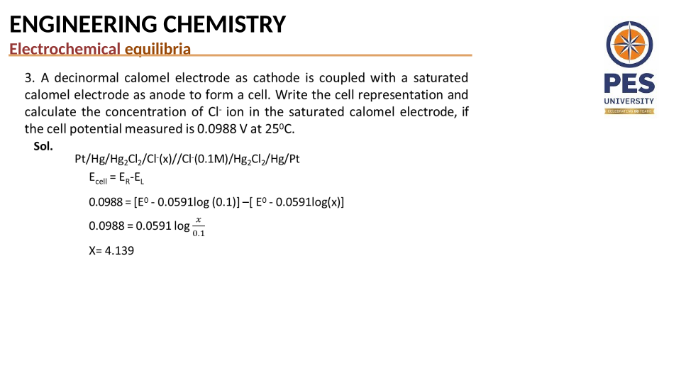
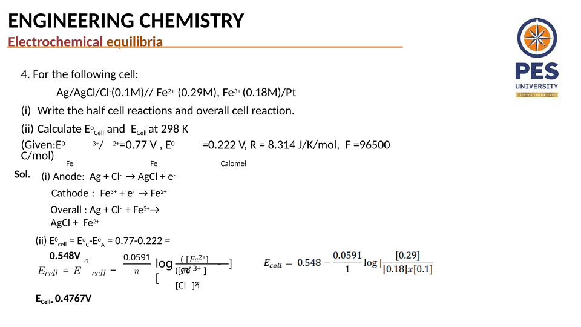
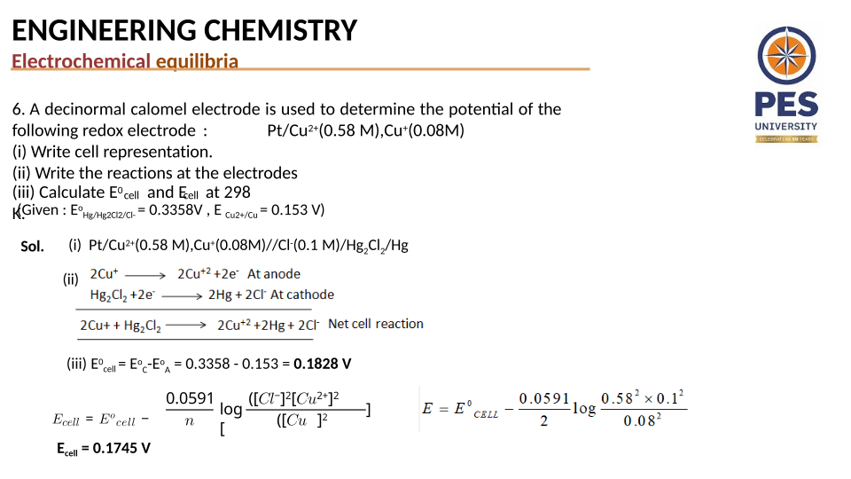
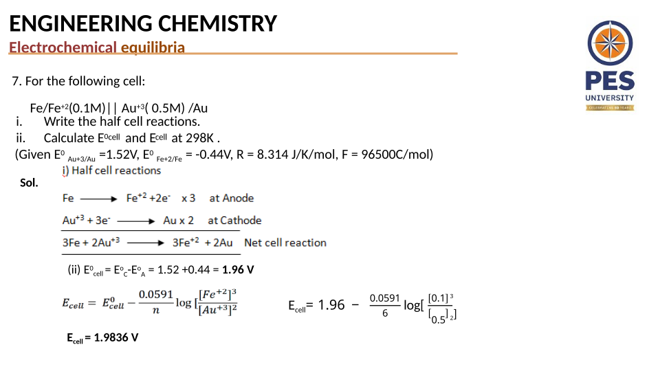

Important points and why
- Source slide page 1 (extracted text): ENGINEERING CHEMISTRY (UE26CY151 A,B) Department of Science and Humanities EV0000443 · EV0000444 · EV0000445
- Source slide page 2 (extracted text): ENGINEERING CHEMISTRY Electrochemical equilibria Class 19 content: Numericals on electrochemistry (Nernst equation) EV0000446 · EV0000447 · EV0000448
- Source slide page 3 (extracted text): ENGINEERING CHEMISTRY Electrochemical equilibria 1. For the given cell: Fe/Fe 2+ (0.05M)//Ag+ (0.1M)/Ag Write the overall cell reaction (ii) Calculate E0 and E at 250C cell cell (Given : E0 = - 0.44V ; E0 = 0.80V) Fe+2/ Fe Ag+/Ag Sol. Anode : Fe Fe2+ + 2e- Cathode : 2Ag+ + 2e- 2Ag Overall reaction : Fe + 2Ag+ Fe2+ + 2Ag E0 o o cell= E C-E A = 0.80 + 0.44 =1.24V 0.0591 log([0.05] E = 1.24 − [0.1]2) cell 2 Ecell =1.2193V EV0000449 · EV0000450 · EV0000451
- Source slide page 4 (extracted text): ENGINEERING CHEMISTRY Electrochemical equilibria 2. For the following concentration cell: Pt/H2 (8atm)/HCl(0.3M)/H2(2atm)/Pt Calculate potential of the cell at 250C. Sol. 0.0591 log pH 2(anode) E cell n p 0.0591 log 8 n 2 H 2(cathode) E cell Ecell = 0.01779V EV0000452 · EV0000453 · EV0000454
- Source slide page 5 (extracted text): ENGINEERING CHEMISTRY Electrochemical equilibria EV0000455 · EV0000456 · EV0000457
- Source slide page 6 (extracted text): ENGINEERING CHEMISTRY Electrochemical equilibria 4. For the following cell: Ag/AgCl/Cl-(0.1M)// Fe2+ (0.29M), Fe3+ (0.18M)/Pt Write the half cell reactions and overall cell reaction. Calculate EoCell and ECell at 298 K (Given:E0 3+/ 2+=0.77 V , E0 =0.222 V, R = 8.314 J/K/mol, F =96500 C/mol) Fe Fe Calomel Anode: Ag + Cl- → AgCl + e- Cathode : Fe3+ + e- → Fe2+ Overall : Ag + Cl- + Fe3+→ AgCl + Fe2+ E0cell = EoC-EoA = 0.77-0.222 = 0.548V Sol. ( [𝐹𝑒2+] ൯ 0.0591 𝑜 log[ ] 𝐸𝑐𝑒𝑙𝑙 = 𝐸 𝑐𝑒𝑙𝑙 − − 3+ 𝑛 ([𝐹𝑒 ][Cl ]ሻ ECell= 0.4767V EV0000458 · EV0000459 · EV0000460
- Source slide page 7 (extracted text): ENGINEERING CHEMISTRY Electrochemical equilibria 5. Calculate the EMF of the following cell at 250C. Au/Au3+ (0.05M) // Au3+ (0.12 M)/ Au (Given : R = 8.314 J/K/mol, F = 96500 C/mol) Sol. 0.0591 [M𝑛+(𝑐𝑎𝑡ℎ𝑜𝑑𝑒ሻ] 𝑙𝑜𝑔 𝐸𝑐𝑒𝑙𝑙 = 𝑛 [𝑀𝑛+(𝑎𝑛𝑜𝑑𝑒ሻ] n = 3 , Ecell = 0.00749V EV0000461 · EV0000462 · EV0000463
- Source slide page 8 (extracted text): ENGINEERING CHEMISTRY Electrochemical equilibria 6. A decinormal calomel electrode is used to determine the potential of the following redox electrode : Pt/Cu2+(0.58 M),Cu+(0.08M) Write cell representation. Write the reactions at the electrodes (iii) Calculate E0 and E at 298 K. cell cell (Given : EoHg/Hg2Cl2/Cl- = 0.3358V , E Cu2+/Cu = 0.153 V) (i) Pt/Cu2+(0.58 M),Cu+(0.08M)//Cl-(0.1 M)/Hg2Cl2/Hg Sol. (ii) (iii) E0cell = EoC-EoA = 0.3358 - 0.153 = 0.1828 V 0.0591 ([𝐶𝑙−]2[𝐶𝑢2+]2 log[ ] 𝐸𝑐𝑒𝑙𝑙 = 𝐸𝑜𝑐𝑒𝑙𝑙 − 𝑛 ([𝐶𝑢 ]2 Ecell = 0.1745 V EV0000464 · EV0000465 · EV0000466
- Source slide page 9 (extracted text): ENGINEERING CHEMISTRY Electrochemical equilibria 7. For the following cell: Fe/Fe+2(0.1M)|| Au+3( 0.5M) /Au Write the half cell reactions. Calculate E0 and E at 298K . cell cell (Given E0 Au+3/Au =1.52V, E0 Fe+2/Fe = -0.44V, R = 8.314 J/K/mol, F = 96500C/mol) Sol. [Image text, OCR] Halfcellreactions Fe Fe+2 +2e x3 atAnode Au+3 + 3e Aux2 at Cathode 3Fe + 2Au+3 3Fe+2 +2Au Netcellreaction (ii) E0cell = EoC-EoA = 1.52 +0.44 = 1.96 V 0.0591 0.1 3 Ecell= 1.96 − log[ 0.5 2] 6 Ecell = 1.9836 V EV0000467 · EV0000468 · EV0000469
- Source slide page 10 (extracted text): THANK YOU Department of Science and Humanities EV0000470 · EV0000471 · EV0000472
8Types of corrosion - differential metal, differential aeration, pitting corrosion, stress corrosion - Part 1
This lesson is indexed from the source video titled Types of corrosion - differential metal, differential aeration, pitting corrosion, stress corrosion - Part 1. Its complete timestamped transcript is preserved below in segment order. The original video path and content hash are recorded in datasets/lecture-corpus.json. Transcript text is source wording; it has not been silently corrected or rewritten. A candidate slide deck is grouped here according to the current matching score; the exact path and page locators are listed in the source evidence. EV0000130 · EV0000131
Graphs and diagrams

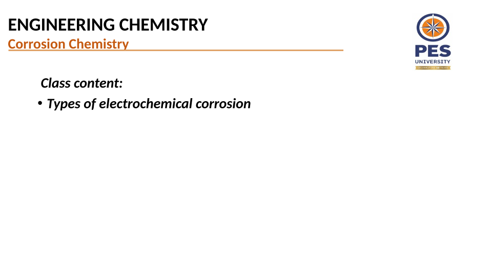
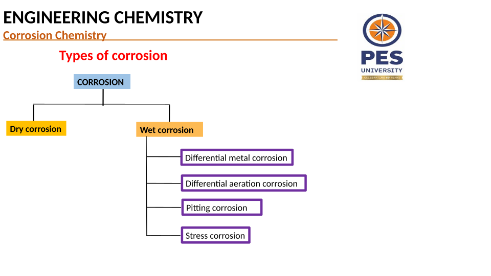
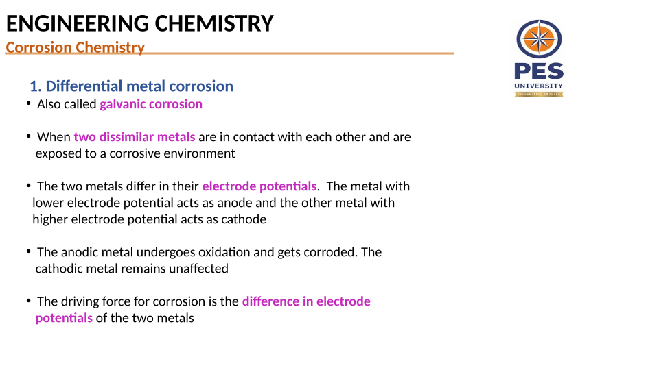
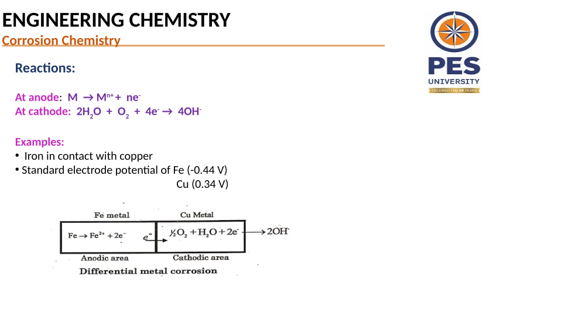
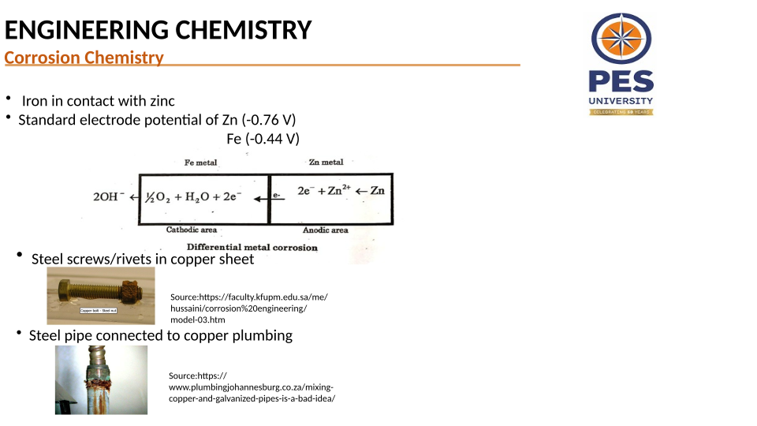
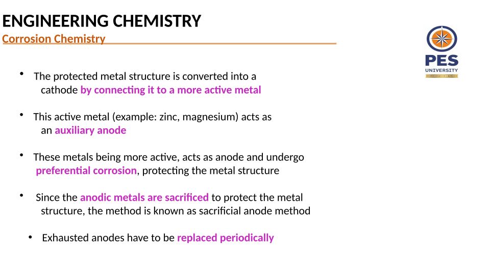
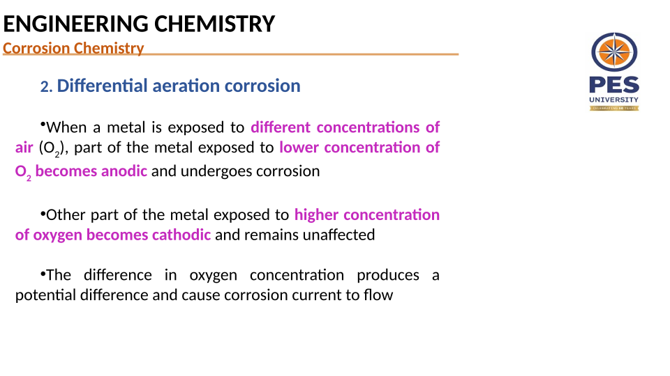

Important points and why
- Source slide page 1 (extracted text): ENGINEERING CHEMISTRY (UE26CY151 A,B) Department of Science and Humanities EV0000473 · EV0000474 · EV0000475
- Source slide page 2 (extracted text): ENGINEERING CHEMISTRY Corrosion Chemistry Class content: Types of electrochemical corrosion EV0000476 · EV0000477 · EV0000478
- Source slide page 3 (extracted text): ENGINEERING CHEMISTRY Corrosion Chemistry Types of corrosion CORROSION Dry corrosion Wet corrosion Differential metal corrosion Differential aeration corrosion Pitting corrosion Stress corrosion EV0000479 · EV0000480 · EV0000481
- Source slide page 4 (extracted text): ENGINEERING CHEMISTRY Corrosion Chemistry 1. Differential metal corrosion Also called galvanic corrosion When two dissimilar metals are in contact with each other and are exposed to a corrosive environment The two metals differ in their electrode potentials. The metal with lower electrode potential acts as anode and the other metal with higher electrode potential acts as cathode The anodic metal undergoes oxidation and gets corroded. The cathodic metal remains unaffected The driving force for corrosion is the difference in electrode potentials of the two metals EV0000482 · EV0000483 · EV0000484
- Source slide page 5 (extracted text): ENGINEERING CHEMISTRY Corrosion Chemistry Reactions: At anode: M → Mn+ + ne- At cathode: 2H2O + O2 + 4e- → 4OH- Examples: Iron in contact with copper Standard electrode potential of Fe (-0.44 V) Cu (0.34 V) [Image text, OCR] Femetal CuMetal Fe→Fe²++2e O+HO+2e >2OH Anodicarea Cathodicarea Differentialmetalcorrosion EV0000485 · EV0000486 · EV0000487
- Source slide page 6 (extracted text): ENGINEERING CHEMISTRY Corrosion Chemistry Iron in contact with zinc Standard electrode potential of Zn (-0.76 V) Fe (-0.44 V) [Image text, OCR] Femetal Zn metal 2e+Zn²+←Zn 20H4 %O2+H2O+2e Cathodic area Anodic area Differentialmetalcorrosion Steel screws/rivets in copper sheet Steel pipe connected to copper plumbing Source:https://faculty.kfupm.edu.sa/me/hussaini/corrosion%20engineering/model-03.htm Source:https://www.plumbingjohannesburg.co.za/mixing-copper-and-galvanized-pipes-is-a-bad-idea/ EV0000488 · EV0000489 · EV0000490
- Source slide page 7 (extracted text): ENGINEERING CHEMISTRY Corrosion Chemistry Differential metal corrosion as a corrosion control technique (Sacrificial Anode method) Mg/Zn bars are fixed to the sides of ocean-going ships to act as sacrificial anodes Mg/Zn blocks are connected to buried pipe lines Mg block connected to a buried oil storage tank Source:https://thenavalarch.com/ship-corrosion-cathodic-protection-sacrificial-anodes/ Source:https://www.pipelineprotection.co.uk/services/cathodic-protection/ EV0000491 · EV0000492 · EV0000493
- Source slide page 8 (extracted text): ENGINEERING CHEMISTRY Corrosion Chemistry The protected metal structure is converted into a cathode by connecting it to a more active metal This active metal (example: zinc, magnesium) acts as an auxiliary anode These metals being more active, acts as anode and undergo preferential corrosion, protecting the metal structure Since the anodic metals are sacrificed to protect the metal structure, the method is known as sacrificial anode method Exhausted anodes have to be replaced periodically EV0000494 · EV0000495 · EV0000496
- Source slide page 9 (extracted text): ENGINEERING CHEMISTRY Corrosion Chemistry 2. Differential aeration corrosion When a metal is exposed to different concentrations of air (O2), part of the metal exposed to lower concentration of O2 becomes anodic and undergoes corrosion Other part of the metal exposed to higher concentration of oxygen becomes cathodic and remains unaffected The difference in oxygen concentration produces a potential difference and cause corrosion current to flow EV0000497 · EV0000498 · EV0000499
- Source slide page 10 (extracted text): ENGINEERING CHEMISTRY Corrosion Chemistry Reactions: At anode: M → Mn+ + ne- At cathode: 2H2O + O2 + 4e- → 4OH- [Image text, OCR] Cathode Moreoxygenatedarea Anode Less oxygenated area At the anode,Less oxygenatedarea M >Mn++ne At the cathode,more oxygenatedarea O2+H2O+2e- 2OH- Source:https://chembldeacet.wordpress.com/2018/09/01/differential-aeration-corrosion/ EV0000500 · EV0000501 · EV0000502
- Source slide page 11 (extracted text): ENGINEERING CHEMISTRY Corrosion Chemistry Examples: Nail from a wall Wire mesh Paper pin inside a paper Source:https://www.houzz.com/discussions/4120639/nails-rusted-within-the-wall Source:https://www.pixtastock.com/photo/46177070 EV0000503 · EV0000504 · EV0000505
- Source slide page 12 (extracted text): ENGINEERING CHEMISTRY Corrosion Chemistry Waterline corrosion: A special case of differential aeration corrosion Observed when metal is half immersed in water The part immersed in water is exposed to less O2, hence acts as anode and gets corroded while the part not in water is exposed to more O2 and acts as cathode; remains unaffected by corrosion EV0000506 · EV0000507 · EV0000508
- Source slide page 13 (extracted text): ENGINEERING CHEMISTRY Corrosion Chemistry Examples: Ship sailing in the sea or docked in the yard for a long time A distinct brown line is formed just below the water line due to the deposition of rust Brown line (corrosion product) EV0000509 · EV0000510 · EV0000511
- Source slide page 14 (extracted text): ENGINEERING CHEMISTRY Corrosion Chemistry A steel tank is partially filled with water for a long time The portion below the water line acts as anode and undergoes corrosion. The upper portion acts as cathode and remains unaffected [Image text, OCR] 2OH ←O, +HO + 2e Cathodicarea Waterline 2e+Fe²+←Fe Anodicarea Waterlinecorrosion Source: Basuchandra’s Engineering chemistry, Banbayalu (2014) EV0000512 · EV0000513 · EV0000514
- Source slide page 15 (extracted text): ENGINEERING CHEMISTRY Corrosion Chemistry Iron rod partially dipped in NaCl solution [Image text, OCR] Cathodicarea 0 +HO+2e—→2OH 2 丰 AeratedsolutionofNaCl Anodic area Fe-→Fe"+2e =三= Source: Basuchandra’s Engineering chemistry, Banbayalu (2014) EV0000515 · EV0000516 · EV0000517
- Source slide page 16 (extracted text): ENGINEERING CHEMISTRY Corrosion Chemistry 3. Pitting Corrosion A localized and accelerated corrosion Results in formation of pits or pin holes, around which the metal is relatively unattacked One of the most destructive forms of corrosion Characterized by small anodic area and large cathodic area resulting in accelerated corrosion at the anodic area https://www.nuflowmidwest.com/2-types-of-corrosion-that-occur-in-industrial-piping-systems/ EV0000518 · EV0000519 · EV0000520
- Source slide page 17 (extracted text): ENGINEERING CHEMISTRY Corrosion Chemistry Case 1 When dust particles or oil drops get deposited over the metal surface The portion of the metal covered by dust which is less aerated becomes anodic The adjacent area of the metal which is exposed to higher concentration of O2 becomes cathodic [Image text, OCR] Oxygen Waterdroplet Rust >Fe2+ Anodic area Cathodicarea Iron dissolves,leaving a pit Steel https://www.bonderite.com/en/technologies/pretreatment/corrosion-protection.html EV0000521 · EV0000522 · EV0000523
- Source slide page 18 (extracted text): ENGINEERING CHEMISTRY Corrosion Chemistry A small anodic region surrounded by a large cathodic region is formed The demand for electrons is high from the cathode Metal underneath the surface of dust particle being anode undergoes accelerated corrosion forming a deep and narrow pit Reactions: At anode: M → Mn+ + ne- At cathode: 2H2O + O2 + 4e- → 4OH- [Image text, OCR] Cathodicarea Corrosionproduct Diust %O+H2O +2e →2OH Fe→Fe²++2e Anodicarea Pit Ironblock Pitting corrosion Source: Basuchandra’s Engineering chemistry, Banbayalu (2014) EV0000524 · EV0000525 · EV0000526
- Source slide page 19 (extracted text): ENGINEERING CHEMISTRY Corrosion Chemistry Case II The break down of the protective film on a metal surface Peeling off of a small tin coating on iron gives rise to a small anodic area (Fe) and large cathodic area (Sn) [Image text, OCR] RP PITTINGCORROSION/ GALVANICCORROSION tin coating-cathode mildsteelcontainer damagedpart(mildsteel) anode-undergoescorrosion pit Damagedtincoatedmildsteelcontainerleftoutinrain Note:Thesameeffectoccurswhentheprotectivemetaloxide layeroverthemetalgetsdamaged. Source:https://www.youtube.com/watch?v=5Sd6TEenwEE Reactions: At anode: Fe → Fe2+ + 2e- At cathode: 2H2O + O2 + 4e- → 4OH- EV0000527 · EV0000528 · EV0000529
- Source slide page 20 (extracted text): ENGINEERING CHEMISTRY Corrosion Chemistry 4. Stress Corrosion: Also called Stress Corrosion Cracking(SCC) A type of corrosion that occurs when some part of the metallic material is under stress and exposed to specific corrosive environment During the manufacture or fabrication of the articles, when the metals are subjected to mechanical operations such as pressing, hammering, rolling, bending, quenching, welding and riveting The stress can be external stress acting on the metal during service conditions or residual stress or both Stress free iron Source: Basuchandra’s Engineering chemistry, Banbayalu (2014) Stressed Iron EV0000530 · EV0000531 · EV0000532
- Source slide page 21 (extracted text): ENGINEERING CHEMISTRY Corrosion Chemistry Due to stress a crack is initiated The metal atoms under stress are always at higher energy levels therefore becomes more reactive than the stress free part As a result, a corrosion cell is formed with the stressed part acting as anode and the stress free part acting as cathode [Image text, OCR] StressCorrosionCracking Examples of stress cells Coldworkrequired tobend a steel barintroduceshighresidual stresses at thebend,whichthenisanodicandcorrodes. Highresidualstressesin cold-workedbend(anode) Fe2+ Fe2+ Lowresidualstressesin unbentsteel(cathode) Source:https://slideplayer.com/slide/8594552/ EV0000533 · EV0000534 · EV0000535
- Source slide page 22 (extracted text): ENGINEERING CHEMISTRY Corrosion Chemistry Conditions for stress corrosion: Tensile stress Specific corrosive environment Under specific corrosive environment the stressed part undergoes corrosion The crack deepens and results in the breakdown of the structure Specific corrosive environment : Brass - ammonical solution or ammonia vapours Steel – NaOH and chloride ions Causes serious damage – air crashes, bridge collapses, boiler explosions EV0000536 · EV0000537 · EV0000538
- Source slide page 23 (extracted text): THANK YOU Department of Science and Humanities EV0000539 · EV0000540 · EV0000541
9Types of corrosion - differential metal (mention of sacrificial anode corrosion protection), differential aeration, pitting corrosion, stress corrosion - Part II
This lesson is indexed from the source video titled Types of corrosion - differential metal (mention of sacrificial anode corrosion protection), differential aeration, pitting corrosion, stress corrosion - Part II. Its complete timestamped transcript is preserved below in segment order. The original video path and content hash are recorded in datasets/lecture-corpus.json. Transcript text is source wording; it has not been silently corrected or rewritten. A candidate slide deck is grouped here according to the current matching score; the exact path and page locators are listed in the source evidence. EV0000142 · EV0000143
10Types of corrosion - stress corrosion - Part III
This lesson is indexed from the source video titled Types of corrosion - stress corrosion - Part III. Its complete timestamped transcript is preserved below in segment order. The original video path and content hash are recorded in datasets/lecture-corpus.json. Transcript text is source wording; it has not been silently corrected or rewritten. A candidate slide deck is grouped here according to the current matching score; the exact path and page locators are listed in the source evidence. EV0000158 · EV0000159
11Factors affecting rate of corrosion (nature of metal, nature of corrosion product, polarization, overvoltage)
This lesson is indexed from the source video titled Factors affecting rate of corrosion (nature of metal, nature of corrosion product, polarization, overvoltage). Its complete timestamped transcript is preserved below in segment order. The original video path and content hash are recorded in datasets/lecture-corpus.json. Transcript text is source wording; it has not been silently corrected or rewritten. A candidate slide deck is grouped here according to the current matching score; the exact path and page locators are listed in the source evidence. EV0000182 · EV0000183
Graphs and diagrams

Important points and why
- Source slide page 1 (extracted text): ENGINEERING CHEMISTRY (UE26CY151 A,B) Department of Science and Humanities EV0000542 · EV0000543 · EV0000544
- Source slide page 2 (extracted text): ENGINEERING CHEMISTRY Corrosion Chemistry Class 22 content: Factors affecting rate of corrosion EV0000545 · EV0000546 · EV0000547
- Source slide page 3 (extracted text): ENGINEERING CHEMISTRY Corrosion Chemistry Nature of the metal Nature of Corrosion product Factors affecting rate of corrosion Overvoltage Polarisation EV0000548 · EV0000549 · EV0000550
- Source slide page 4 (extracted text): ENGINEERING CHEMISTRY Corrosion Chemistry 1. Nature of the metal: Metals with lower electrode potential values are more reactive than the metals with higher electrode potential values More reactive metals are more susceptible to corrosion Metals like K, Na, Mg, Zn etc., with low electrode potential values are highly susceptible for corrosion The noble metals such as silver, gold, platinum etc., with higher potential values are less susceptible for corrosion Electrochemical series should give an idea of the order in which metals undergo corrosion But metals like Chromium, Aluminum Titanium etc. are exceptions as they are passive Galvanic series is required which arranges metals and alloys in the order of their tendency to undergo corrosion in a particular environment EV0000551 · EV0000552 · EV0000553
- Source slide page 5 (extracted text): ENGINEERING CHEMISTRY Corrosion Chemistry [Image text, OCR] Electrochemical series Equilibrium E"(volts) (Oxidants>Reductants) Lithium:Li*(aq）+e<>Li(s) -3.03 Potassium:K(aq)+e’<>K(s) -2.92 Calcium:Ca²(aq)+2e<→>Ca(s) -2.87 Metal Oxidizing Activity Increasing Sodium:Na*(aq)+e’<>Na(s) -2.71 Magnesium:Mg²*(aq)+2e>Mg(s) -2.37 Aluminum:Al²+(aq)+3e<>Al(s) -1.66 Zinc:Zn²(aq)+2e<→>Zn(s) -0.76 Iron:Fe²(aq）+2e’<>Fe(s) -0.44 Lead:Pb²*(aq)+2e<>Pb(s) -0.13 Hydrogen:2H*(aq)+2e’<>H2(g) 0.00 Copper:Cu2(aq)+2e’(→Cu(s) +0.34 Silver:A*(aq)+e’<>Ag(s) +0.80 Gold:Au²(aq)+3e>Au(s) +1.50 Electrochemical series is a series of chemical elements arranged in order of their standard electrode potentials The electrochemical series is built up by arranging various redox equilibria in the order of their standard electrode potentials (redox potentials). The most negative E° values are placed at the top of the electrochemical series, and the most positive at the bottom Source:https://www.syedgilanis.com/2019/04/electrochemicalseries.html EV0000554 · EV0000555 · EV0000556
- Source slide page 6 (extracted text): ENGINEERING CHEMISTRY Corrosion Chemistry Galvanic Series [Image text, OCR] VoltsvSCE 0.2 0 -0.2 -0.4 -0.6 -0.8 -1.0 -1.2 -1.4 -1.6 Magnesium Zinc Beryllium Aluminiumalloys Cadmium Mildsteel&Castiron Low alloysteel Austenitic castiron Aluminiumbronze Navalbrass,yellowbrass&redbrass Tin Copper 50/50leadtinsolder Admiraltybrass,aluminiumbrass Manganesebronze Siliconbronze Stainless steel -grades 410,416 Nickelsilver 90/10copper nickel 80/20 copper nickel Stainless steel-grade 430 Lead 70/30coppernickel Nickelaluminiumbronze Nickelchromiumalloy600 Nickel200 Silver Stainless steel-grades302,304,321&347 Nickel copper alloys-400,K500 Stainlesssteel-grades316&317 Alloy20stainlesssteel Nickelironchromium alloy825 Titanium Gold,platinum Graphite MOSTNOBLE-CATHODIC LEASTNOBLE-ANODIC A “galvanic series” lists metal and alloys in order of their tendency to undergo corrosion in a particular electrolyte solution, hence for each specific solution which is expected to be encountered for actual use, a different order will ensue Sorce: https://www.corrosionpedia.com/an-introduction-to-the-galvanic-series-galvanic-compatibility-and-corrosion/2/1403 EV0000557 · EV0000558 · EV0000559
- Source slide page 7 (extracted text): ENGINEERING CHEMISTRY Corrosion Chemistry 2. Nature of the corrosion product: For some metals like Chromium, Aluminum etc., the corrosion product formed on the surface of the metal acts as a protective film If the corrosion product deposited is insoluble, stable, uniform, and non porous, it acts as a protective film preventing further corrosion of metal A thin, invisible, impervious, continuous film formed on the surface acts as a barrier between the fresh metal surface and the corrosion environment EV0000560 · EV0000561 · EV0000562
- Source slide page 8 (extracted text): ENGINEERING CHEMISTRY Corrosion Chemistry On the other hand metals like iron, zinc, magnesium, etc., do not form protective film on the surface of the metal If the corrosion product is soluble, unstable, non uniform, and porous, the corrosion continues unabated In such cases, the fresh metal surface is continuously exposed to the corrosion environment and corrosion of the metal takes place continuously Steel gets corroded but stainless steel does not EV0000563 · EV0000564 · EV0000565
- Source slide page 9 (extracted text): ENGINEERING CHEMISTRY Corrosion Chemistry 3. Hydrogen overvoltage: Overvoltage is defined as the extra voltage over the theoretical voltage required for an electrode reaction to take place Applicable especially for evolution of gases Depends on the surface; if overvoltage of a gas is high on a surface, liberation of the gas on that surface will be less [Image text, OCR] TABLE19-3 OvervoltageforHydrogen andOxygenFormation atVariousElectrodesat25°C Overvoltage(V) Overvoltage (V) Overvoltage (V) (Current Density (Current Density (CurrentDensity 0.001A/em²) 0.01A/cm) 1A/cm) Electrode Composition H: 0: H 0. H 0: SmoothPt -0.024 -0.721 -0.068 -0.85 -0.676 -1.49 Platinized Pt -0.015 -0.348 -0.030 -0.521 -0.048 -0.76 Au -0.241 -0.673 -0.391 -0.963 -0.798 -1.63 Cu -0.479 -0.422 -0.584 -0.580 -1.269 -0.793 Ni -0.563 -0.353 -0.747 -0.519 -1.241 -0.853 Hg -0.96 -1.1 -1.14 Zn -0.716 -0.746 -1.229 Sn -0.856 -1.077 -1.231 Pb -0.52 -1.090 -1.262 Bi 0.78 -1.05 -1.23 Natonal Academy ofSeiences.IrernatonalCritical Tables,Vol.6.pp.339-340,McGraw-Hil:NewYork,1929. -0.556Vat0.000077A/cm²:0.929Vut0.00154A/cm² 1.063Vat0.00769A/cm 1.126Vat1.153A/cm Source:https://chemistry.mdma.ch/hiveboard/serious/000490034.html EV0000566 · EV0000567 · EV0000568
- Source slide page 10 (extracted text): ENGINEERING CHEMISTRY Corrosion Chemistry A metal with low hydrogen overvoltage on its surface is more susceptible to corrosion Hydrogen evolution is a cathodic reaction If cathodic reaction is hydrogen evolution type, hydrogen gas is liberated easily and thus the cathodic reaction rate is faster This will make anodic reaction also fast, thereby promoting overall corrosion reaction When the hydrogen overvoltage on the metal surface is high, cathodic reaction is slower and the corrosion of the metal also becomes slower EV0000569 · EV0000570 · EV0000571
- Source slide page 11 (extracted text): ENGINEERING CHEMISTRY Corrosion Chemistry 4. Polarization at anodic and cathodic region: Polarisation is the drift in electrode potential of an electrode Due to change in concentration of species Anodic polarisation: At anodic area, metal is oxidized, liberating metal ions which move towards cathodic area Metal ions liberated at anode cannot move freely towards cathodic area because of opposing factors like lower conductivity of the medium Metal ions get concentrated at anodic area and this decreases tendency of metal to undergo oxidation ; corrosion rate falls Anodic polarisation is due to accumulation of ions in the anodic region Cathode Anode M Mn+ Mn+ Mn+ Mn+ Mn+ EV0000572 · EV0000573 · EV0000574
- Source slide page 12 (extracted text): ENGINEERING CHEMISTRY Corrosion Chemistry Cathodic polarisation: Due to retarded movement of cathodic reactant (O2, H+) towards the cathodic surface or retarded removal of products formed in cathodic region Hence, the rate of cathodic reaction decreases. A retarded cathodic reaction results in retardation of anodic reaction also which slows down the corrosion process Cathodic polarisation is due to depletion of ions in the cathodic region Anode Cathode O2, H+ M EV0000575 · EV0000576 · EV0000577
- Source slide page 13 (extracted text): ENGINEERING CHEMISTRY Corrosion Chemistry Polarisation effect can be reduced by : Use of depolarisers e.g., Anodic polarisers – complexing agents Cathodic polarisers – cupric ions Increase in temperature Stirring the solution EV0000578 · EV0000579 · EV0000580
- Source slide page 14 (extracted text): THANK YOU Department of Science and Humanities EV0000581 · EV0000582 · EV0000583
12Corrosion control - metal coating (galvanizing), inorganic coating (anodizing) - Part II
This lesson is indexed from the source video titled Corrosion control - metal coating (galvanizing), inorganic coating (anodizing) - Part II. Its complete timestamped transcript is preserved below in segment order. The original video path and content hash are recorded in datasets/lecture-corpus.json. Transcript text is source wording; it has not been silently corrected or rewritten. A candidate slide deck is grouped here according to the current matching score; the exact path and page locators are listed in the source evidence. EV0000202 · EV0000203
Graphs and diagrams
Important points and why
- Source slide page 1 (extracted text): ENGINEERING CHEMISTRY (UE26CY151 A,B) Department of Science and Humanities EV0000584 · EV0000585 · EV0000586
- Source slide page 2 (extracted text): ENGINEERING CHEMISTRY Corrosion Chemistry Class 23 content: Corrosion control Metal coating (Galvanization) Inorganic Coating (Anodizing) EV0000587 · EV0000588 · EV0000589
- Source slide page 3 (extracted text): ENGINEERING CHEMISTRY Corrosion Chemistry Corrosion Control Metallic coating Inorganic coating Organic Coating Protective coating Anodic Inhibitors Cathodic Inhibitors Corrosion Inhibitors Impressed cathodic current method Sacrificial Anode method Cathodic protection Anodic protection Impressed current anodic method EV0000590 · EV0000591 · EV0000592
- Source slide page 4 (extracted text): ENGINEERING CHEMISTRY Corrosion Chemistry 1. Protective coatings: 1 (a) Metallic coating: Corrosion of base metal is prevented by coating a layer of another metal over it Metal coated may be anodic or cathodic to the base metal Anodic metal coating: Coating of a layer of metal which is anodic to base metal e.g. , Iron article coated with Zinc Cathodic metal coating: Coating of a layer of metal which is cathodic to base metal e.g. , Iron article coated with Tin EV0000593 · EV0000594 · EV0000595
- Source slide page 5 (extracted text): ENGINEERING CHEMISTRY Corrosion Chemistry Anodic metal coating: Coating metal is more active with respect to the base metal Even if the base metal is not completely covered, it will not undergo pitting corrosion e.g., Coating of Zn or Mg on iron EV0000596 · EV0000597 · EV0000598
- Source slide page 6 (extracted text): ENGINEERING CHEMISTRY Corrosion Chemistry Galvanizing: Coating a layer of zinc on iron is called galvanization The following steps are involved in the process: Iron sheet is passed through organic solvent or caustic solution to remove oil or grease present on it It is washed with dil. H2SO4 to remove any rust, scale or dust present on the surface (pickling) It is treated with a mixture of aqueous solution of ZnCl2 and NH4Cl which acts as flux which prevents oxidation and then dried Finally it is dipped in molten zinc at 425-430o C Excess zinc present on iron sheet is removed by passing through hot rollers EV0000599 · EV0000600 · EV0000601
- Source slide page 7 (extracted text): ENGINEERING CHEMISTRY Corrosion Chemistry Process of Galvanization [Image text, OCR] Surface Preparation Coolingand Drying Zinc Flux Inspection Rinsing bath Pickling solution Degreasing Rinsing Source:http://www.lightsoftuscany.com/faq-page/faq-galvanization.html EV0000602 · EV0000603 · EV0000604
- Source slide page 8 (extracted text): ENGINEERING CHEMISTRY Corrosion Chemistry Application: Galvanization of iron is carried out to produce roofing sheets, fencing wire, buckets, bolts, nuts, pipes etc Advantage: Even if the Zn coating peels off or there are gaps at some places, the base metal (Fe) does not get corroded because the base metal acts as cathode Galvanized articles are not used for preparing and storing food because zinc dissolves in dilute acids producing toxic zinc compounds Disadvantage: EV0000605 · EV0000606 · EV0000607
- Source slide page 9 (extracted text): ENGINEERING CHEMISTRY Corrosion Chemistry Cathodic metal coating: Coating metal is less active with respect to the base metal Base metal should be completely covered and there should not be any gaps in the coating If some part of the base metal is left uncovered, then it undergoes more intense pitting corrosion due to formation of small anodic and large cathodic area e.g.,Coating of Sn or Ni metal over iron EV0000608 · EV0000609 · EV0000610
- Source slide page 10 (extracted text): ENGINEERING CHEMISTRY Corrosion Chemistry 1 (b) Inorganic coating Referred to as chemical conversion coating Surface of the base metal is converted into a protective coating through appropriate chemical modification The protective film (corrosion product) is an inherent part of the metal Two methods: Anodising and Phosphating M EV0000611 · EV0000612 · EV0000613
- Source slide page 11 (extracted text): ENGINEERING CHEMISTRY Corrosion Chemistry Anodizing: Induced oxidation in an oxidising environment by making the article anode and passing current Oxidation of outer layer of metal to its metal oxide which covers the metal surface and acts as protective layer Done for non-ferrous metals like Al, Cr, Ti [Image text, OCR] Component SteelorPb (anode) (cathode) Dilute HSO 4 Source:https://www.open.edu/openlearn/science-maths-technology/engineering-technology/manupedia/anodising EV0000614 · EV0000615 · EV0000616
- Source slide page 12 (extracted text): ENGINEERING CHEMISTRY Corrosion Chemistry Anodizing of Aluminum: The process: Article is cleaned, degreased, and polished and taken as anode It is immersed in an electrolyte consisting of 5-10% chromic acid, sulfuric acid, phosphoric acid, oxalic acid or their mixtures maintained at around 40o C Lead or steel is taken as cathode Voltage above 40V is applied Outer layer of Al is oxidised to Al2O3 2Al + 3H2O → Al2O3 +3H2 [Image text, OCR] Battery Anode >Cathode(Steel) (Aluminium) Electrolyte solution (Chromicacid) A1O 幸 Anodizing Source: Basuchandra’s Engineering chemistry, Banbayalu (2014) EV0000617 · EV0000618 · EV0000619
- Source slide page 13 (extracted text): ENGINEERING CHEMISTRY Corrosion Chemistry Al2O3 formed on the surface is slightly porous in nature The porous layer may be made compact by sealing which is done by immersing the anodised article in boiling water or steam Al2O3 is converted into Al2O3.H2O which occupies higher volume; the pores are sealed [Image text, OCR] (a) (b) AI,O AI(OOH) Substrate barrierlayer Substrate barrierlayer pores porous layer porouslayer PAfilm Source:https://www.sciencedirect.com/science/article/abs/pii/S0257897215304540 EV0000620 · EV0000621 · EV0000622
- Source slide page 14 (extracted text): ENGINEERING CHEMISTRY Corrosion Chemistry Anodized articles can be produced in good color finishes by Adsorbing an organic dye after anodizing and then sealing Depositing a metal like Ni, Co etc., into the pores Applications: Anodized Al is used as an attractive, highly durable, corrosion resistant material in exteriors for roofs, walls, buildings and also in window frames, office partitions, tiffin carriers, etc. [Image text, OCR] BASIC STEPS IN ANODIZING CAPTAIN CORROSION PRE-TREATMENT ANODIZING SEALING GLASSBEADBLASTING PORES PAINT CLEANEDSURFACE CONTAMINATION METALSUBSTRATE ANODICALUMINUMOXIDE Source:https://www.youtube.com/watch?v=w1cKVbtpE1E EV0000623 · EV0000624 · EV0000625
- Source slide page 15 (extracted text): THANK YOU Department of Science and Humanities EV0000626 · EV0000627 · EV0000628
13Corrosion control - metal coating (galvanizing), inorganic coating (anodizing) - Part I
This lesson is indexed from the source video titled Corrosion control - metal coating (galvanizing), inorganic coating (anodizing) - Part I. Its complete timestamped transcript is preserved below in segment order. The original video path and content hash are recorded in datasets/lecture-corpus.json. Transcript text is source wording; it has not been silently corrected or rewritten. A candidate slide deck is grouped here according to the current matching score; the exact path and page locators are listed in the source evidence. EV0000218 · EV0000219
14Corrosion inhibitors, cathodic protection –impressed current method, Use of AI tools in corrosion detection and control - Part II
This lesson is indexed from the source video titled Corrosion inhibitors, cathodic protection –impressed current method, Use of AI tools in corrosion detection and control - Part II. Its complete timestamped transcript is preserved below in segment order. The original video path and content hash are recorded in datasets/lecture-corpus.json. Transcript text is source wording; it has not been silently corrected or rewritten. A candidate slide deck is grouped here according to the current matching score; the exact path and page locators are listed in the source evidence. EV0000234 · EV0000235
Graphs and diagrams

Important points and why
- Source slide page 1 (extracted text): ENGINEERING CHEMISTRY (UE26CY151 A,B) Department of Science and Humanities EV0000629 · EV0000630 · EV0000631
- Source slide page 2 (extracted text): ENGINEERING CHEMISTRY Corrosion Chemistry Class 24 content: Corrosion control Corrosion inhibitors, Impressed current cathodic Protection, Use of AI tools in corrosion detection and control EV0000632 · EV0000633 · EV0000634
- Source slide page 3 (extracted text): ENGINEERING CHEMISTRY Corrosion Chemistry 2. Corrosion Inhibitors Chemical substances which are added in small quantities to the corrosive environment to decrease the rate of corrosion Inhibitors slow down or inhibit the anodic or cathodic reaction and control corrosion They can be used only in confined environment The action of an inhibitor depends on the nature of the metal to be protected as well as corrosive environment EV0000635 · EV0000636 · EV0000637
- Source slide page 4 (extracted text): ENGINEERING CHEMISTRY Corrosion Chemistry 2 (a) Anodic inhibitors: M → Mn+ + ne- If the formation of Mn+ is prevented, the corrosion process is retarded This is achieved by the addition of large anions such as chromate(CrO42), tungstate (WO42), etc. These ions combine with Mn+ and form a precipitate which covers the surface of the anode [Image text, OCR] Inhibitors coat the surface and prevent corrosion Metal Surface Source:http://www.penriteoil.com.au/knowledge-centre/Coolant%20Inhibitor%20Packs/149/what-are-corrosion-inhibitors/289 EV0000638 · EV0000639 · EV0000640
- Source slide page 5 (extracted text): ENGINEERING CHEMISTRY Corrosion Chemistry Anodic inhibitors are found to be effective only when sufficient amount of the inhibitor is added into the corrosion medium If insufficient quantity is added, then a part of the anodic region is exposed to the environment Formation of small anodic area results in intense corrosion Salts like Na2CrO4 , Na2WO4 EV0000641 · EV0000642 · EV0000643
- Source slide page 6 (extracted text): ENGINEERING CHEMISTRY Corrosion Chemistry 2 (b) Cathodic inhibitors: liberation of hydrogen absorption of oxygen Inhibiting any of these reactions will slow down the cathodic reaction which in turn slows down the anodic reaction; corrosion is inhibited EV0000644 · EV0000645 · EV0000646
- Source slide page 7 (extracted text): ENGINEERING CHEMISTRY Corrosion Chemistry Inhibition of hydrogen liberation: Preventing the diffusion of H+ ions to the cathode- By the addition of certain organic compounds which contain nitrogen or sulfur Aliphatic amines, urea, thiourea, mercaptans, heterocyclic compounds are widely used as cathodic inhibitors They get adsorbed on the cathodic region forming a protective film, preventing the H+ ions from coming in contact with the cathodic metal surface EV0000647 · EV0000648 · EV0000649
- Source slide page 8 (extracted text): ENGINEERING CHEMISTRY Corrosion Chemistry By increasing the hydrogen overvoltage on the metal surface – When Hydrogen overvoltage is high , liberation of H2 will be difficult By the addition of oxides of arsenic, antimony(As2O3, Sb2O3) or salts like sodium meta-arsenite(NaAsO2) They deposit on the cathode region The hydrogen overvoltage on these metals is very high; liberation of H2 is reduced EV0000650 · EV0000651 · EV0000652
- Source slide page 9 (extracted text): ENGINEERING CHEMISTRY Corrosion Chemistry Inhibition of oxygen absorption: By removing the oxygen from the corrosive media - By adding Oxygen scavengers like hydrazine N2H4 + O2 → N2 + 2H2O By adding reducing agents sodium sulfite etc. 2Na2SO3 + O2 → 2Na2SO4 EV0000653 · EV0000654 · EV0000655
- Source slide page 10 (extracted text): ENGINEERING CHEMISTRY Corrosion Chemistry By decreasing the diffusion rate of oxygen to cathode – By adding salts with large cations such as ZnSO4, MgSO4, NiSO4 etc. The cations of the salts (Zn2+, Mg2+) migrate towards the cathode surface and react with the hydroxyl ions formed at the cathode Zn2+ + 2OH- → Zn(OH)2 Mg2+ + 2OH- → Mg(OH)2 The hydroxides get deposited on the cathodic sites The protective film impermeable to oxygen prevents its diffusion to the cathodic region EV0000656 · EV0000657 · EV0000658
- Source slide page 11 (extracted text): ENGINEERING CHEMISTRY Corrosion Chemistry Limitations: They contaminate the environment Many of the inhibitors are toxic, cannot be used in systems which come in contact with humans Can be used only in closed systems in which corrosive environment is either contained or re-circulated EV0000659 · EV0000660 · EV0000661
- Source slide page 12 (extracted text): ENGINEERING CHEMISTRY Corrosion Chemistry 3. Impressed current method: By applying a direct current The protected metal is made cathodic by connecting it to the cathode of the external source of current Anode of the external source is usually connected to an inert electrode like graphite; Platinum, silicon, iron are also used as anodes A backfill of coke ,bentonite is used to improve efficiency of the anode (The prime purpose of using the backfill is to reduce electrical resistivity. This provides a lower anode-to-earth resistance and greater current outputs in cases where the surrounding soil is of high resistivity). The metal structure being cathode does not undergo corrosion Anode being inert remains unaffected EV0000662 · EV0000663 · EV0000664
- Source slide page 13 (extracted text): ENGINEERING CHEMISTRY Corrosion Chemistry [Image text, OCR] Rectifier- Anodes (Groundbed) Pipeline (Structure) Current Flow Source:https://www.mcwaneductile.com/blog/v-bio-r-or-cathodic-protection-an-honest-comparison/ Source:https://www.sciencedirect.com/topics/engineering/impressed-current-system EV0000665 · EV0000666 · EV0000667
- Source slide page 14 (extracted text): ENGINEERING CHEMISTRY Corrosion Chemistry Advantages: One installation can protect large area of metal Limitations: Rather expensive, since it needs high current for safe protection of structure If the impressed current is not uniform on the entire surface of the protected structure, localized corrosion takes place on the protected metal EV0000668 · EV0000669 · EV0000670
- Source slide page 15 (extracted text): ENGINEERING CHEMISTRY Corrosion Chemistry If hydrogen liberation is the cathodic reaction on the metal surface, then the protected metal may suffer from hydrogen embrittlement Hydrogen embrittlement: H2 molecule being small enters the metal lattice and when the pressure increases , it causes blisters and makes the metal brittle EV0000671 · EV0000672 · EV0000673
- Source slide page 16 (extracted text): ENGINEERING CHEMISTRY Corrosion Chemistry AI in Corrosion Detection and Control- Introduction Conventional inspection methods are often periodic, labor-intensive, and may fail to detect corrosion at an early stage. By integrating AI with smart sensors, coating monitoring systems, drones, and robotic inspections, industries can detect corrosion before severe damage occurs and implement timely protective measures. [Image text, OCR] vidya 38645 EV0000674 · EV0000675 · EV0000676
- Source slide page 17 (extracted text): ENGINEERING CHEMISTRY Corrosion Chemistry AI Assisted proactive infrastructural corrosion management Process Capture images/Inspection Data: Images, sensor measurements, and electrochemical readings are collected from the assets. AI Model: Convolutional Neural Networks (CNNs) and other machine learning algorithms analyze the inspection data to identify corrosion patterns. Detection & Severity Assessment: The AI model detects corrosion, identifies its type, and assesses its severity and extent. Corrosion Rate & Remaining Life Prediction: The AI model predicts the corrosion progression rate and estimates the remaining service life of the asset. Control Actions: Based on the AI predictions, appropriate maintenance strategies, protective coatings, cathodic protection, and repair actions are recommended to mitigate corrosion. STEP 1&2 : Capture Images and Data input Inspection Data Capture Images/Collect Sensor Data(Images, Sensors and EIS) 3. AI Models (CNN, IoT Sensors,Predictive Analytics and Digital Twin) 4. Identification Detection and severity (type of Corrosion) 5. Forecasting Rate and Life prediction (RUL and Corrosion rate) 6. Decision and Action (Maintenance and protection Planning) Predictive maintenance, Coating monitoring, Smart sensors, Drones & robots EV0000677 · EV0000678 · EV0000679
- Source slide page 18 (extracted text): ENGINEERING CHEMISTRY Corrosion Chemistry Artificial Intelligence (AI) is thus transforming corrosion management by enabling continuous monitoring, early defect detection, predictive maintenance, and intelligent decision-making. EV0000680 · EV0000681 · EV0000682
- Source slide page 19 (extracted text): THANK YOU Department of Science and Humanities EV0000683 · EV0000684 · EV0000685
15Corrosion inhibitors, cathodic protection –impressed current method, Use of AI tools in corrosion detection and control - Part I
This lesson is indexed from the source video titled Corrosion inhibitors, cathodic protection –impressed current method, Use of AI tools in corrosion detection and control - Part I. Its complete timestamped transcript is preserved below in segment order. The original video path and content hash are recorded in datasets/lecture-corpus.json. Transcript text is source wording; it has not been silently corrected or rewritten. A candidate slide deck is grouped here according to the current matching score; the exact path and page locators are listed in the source evidence. EV0000250 · EV0000251
16Source slide deck: Nernst equation and its derivation
This entry preserves the complete slide deck titled Nernst equation and its derivation as searchable extracted page text and page-faithful rendered images. Its association with a particular video is not confirmed; it remains a separate topic under Engineering Chemistry, Unit_02, to avoid an unsupported match. EV0000299 · EV0000300
Graphs and diagrams
Important points and why
- Source slide page 1 (extracted text): ENGINEERING CHEMISTRY (UE26CY151 A,B) Department of Science and Humanities EV0000299 · EV0000300 · EV0000301
- Source slide page 2 (extracted text): ENGINEERING CHEMISTRY Electrochemical equilibria Class 15 content: Nernst equation & it’s derivation EV0000302 · EV0000303 · EV0000304
- Source slide page 3 (extracted text): ENGINEERING CHEMISTRY Electrochemical equilibria Nernst equation for a single electrode A quantitative relationship between electrode potential and concentration of species with which the electrode is reversible The reaction at the electrode is Mn+ + ne- ⇌ M The maximum work that can be obtained is -∆G = Wmax For an electrochemical system, maximum work done is Total charge available × Energy available per unit charge Wmax = Total charge available , i.e., No. of moles of electrons exchanged in redox reaction (n) multiplied by charge carried per mole of electrons ,F (96,500 C/mol) = nF Energy available per unit charge, i.e., electrode potential because electrode potential = energy/unit charge = E Therefore , Wmax = nFE ; ∆ G = - nFE Under standard conditions, ∆ Go = - nFEo EV0000305 · EV0000306 · EV0000307
- Source slide page 4 (extracted text): ENGINEERING CHEMISTRY Electrochemical equilibria Mn+ + ne- ⇌ M A thermodynamic equation which relates reaction quotient and decrease in free energy is given by, ∆ G = ∆Go + RTlnQ , where Q is the reaction quotient The reaction quotient for the reaction is, Q= [M]/[Mn+] Substituting for ∆ G, ∆Go and Q , we get Where , Eo = Standard electrode potential, n = number of electrons exchanged in the redox reaction, R = Gas constant. 8.314 JK-1 mol-1 , T = temp in Kelvin, F = Faraday 96500 C mol-1 dividing throughout by –nF, EV0000308 · EV0000309 · EV0000310
- Source slide page 5 (extracted text): ENGINEERING CHEMISTRY Electrochemical equilibria since [M] = 1 for pure substances, at 298K, Nernst equation may also be used to calculate. emf of electrochemical cells. For the cell reaction aA + bB ⇌ cC + dD [𝐂]𝐜[𝐃]𝐝 Q = [𝐀]𝐚[𝐁]𝐛 Nernst equation is n= no. of e -s transferred, Eocell = std. emf of the cell EV0000311 · EV0000312 · EV0000313
- Source slide page 6 (extracted text): THANK YOU Department of Science and Humanities EV0000314 · EV0000315 · EV0000316
17Source slide deck: Experiential learning Based on corrosion chemistry
This entry preserves the complete slide deck titled Experiential learning Based on corrosion chemistry as searchable extracted page text and page-faithful rendered images. Its association with a particular video is not confirmed; it remains a separate topic under Engineering Chemistry, Unit_02, to avoid an unsupported match. EV0000686 · EV0000687
Graphs and diagrams

Important points and why
- Source slide page 1 (extracted text): ENGINEERING CHEMISTRY (UE26CY151 A,B) Department of Science and Humanities EV0000686 · EV0000687 · EV0000688
- Source slide page 2 (extracted text): ENGINEERING CHEMISTRY Experiential Learning – UNIT 2 (supplementary material) Temperature: The rate of a chemical reaction, in general, increases with rise in temperature For corrosion process (redox reaction) , the rate of corrosion increases as the temperature increases as Increase in rate of reaction Increase in conductance of the medium- ions migrate fast at higher temperature. Decrease in the polarization effects at the anodic and cathodic sites Increase in solubility of corrosion product in the medium Breakdown in the protective film that might exist on the surface However, if corrosion is due to dissolved gases like O2, CO2, etc., the rate of corrosion decreases with increase in temperature as the solubility of these gases in the medium decreases EV0000689 · EV0000690 · EV0000691
- Source slide page 3 (extracted text): ENGINEERING CHEMISTRY Experiential Learning – UNIT 2 (supplementary material) pH: In general, lower the pH of the corrosion medium, higher is the corrosion rate At low pH ,concentration of H+ ions is high; H+ ions help for cathodic reaction facilitating anodic oxidation of the metal 2H+ + 2e- → H2 Corrosion product becomes more soluble in acidic medium However, some metals like Al undergo fast corrosion in highly alkaline solution as their corrosion product is soluble in alkaline medium EV0000692 · EV0000693 · EV0000694
- Source slide page 4 (extracted text): ENGINEERING CHEMISTRY Experiential Learning – UNIT 2 (supplementary material) Electrical conductivity of the corrosion medium: As the conductivity of the corrosion medium increases, the corrosion rate also increases Higher the conductivity of the medium, faster the ions can migrate between the anodic and cathodic regions of the corrosion cell Faster will be the exchange of electrons at the electrode surfaces; corrosion rate increases Corrosion is more in saline water EV0000695 · EV0000696 · EV0000697
- Source slide page 5 (extracted text): ENGINEERING CHEMISTRY Experiential Learning – UNIT 2 (supplementary material) Humidity: Corrosion rate increases with increase in the humidity in the medium. The presence of moisture in the atmosphere provides the conducting medium for the formation of galvanic cell, facilitating corrosion of the metal. EV0000698 · EV0000699 · EV0000700
- Source slide page 6 (extracted text): [Image text, OCR] PES UNIVERSITY THANK YOU Department of Science and Humanities EV0000701 · EV0000702 · EV0000703
18Historical question-source pages · unit mapping candidates
This section preserves historical paper/question-bank pages whose extracted terms matched Engineering Chemistry, Unit_02 (Electrochemistry and corrosion) above the dataset's candidate threshold. The association has not been manually confirmed, source text/OCR may be incomplete, and the pages are not rewritten or presented as solved questions. EV0000704 · EV0000705
Important points and why
- Archive page 3 from 10__1vFS6E1bKV.pdf; unit match candidate score 0.5; source text/OCR may be partial. (4.0 Marks) (5.0 Marks) (4.0 Marks) (2.0 Marks) 2.b. For a Pb-Ag system 1. Why is condensed phase rule applicable to this system? 2. Explain how silver can be extracted from Argentiferrous lead? 3.What is the Eutectic composition and Eutectic temperature? 2.c. A silver electrode containing 0.15M silver nitrate and copper electrode containing 0.19M copper sulphate were coupled using salt bridge. Write the cell representation, half cell reactions, calculate E , E at 25 C (Give E = 0.8V, E = 0.34V) 2.d. A Satuarated calomel electrode and glass electrode assembly was used to determine unknown pH. In the above cell following potentials are recorded a. 0.2836V in contact with buffer solution of pH = 4. b. 0.1949V in contact with solution of unknown pH. Write cell representation and calculate unknown pH (Given Esce = 0.24V) 2.e. i. Mention the factors affecting the conductance of a solution. 1M ii. In conductometric titration experiment, 25mL of acid mixture is titrated against 1M sodium hydroxide (NaOH) and the graph reveles V1 and V2 are 3.2 mL and 7.3 mL of NaOH respectively, Calculate the normality of acetic acid. 1M ocell cell o oAg /Ag + oCu /Cu 2+ EV0000704
- Archive page 5 from 10__1vFS6E1bKV.pdf; unit match candidate score 0.4167; source text/OCR may be partial. (2.0 Marks) (5.0 Marks) (4.0 Marks) 3.e. For a weak acid, pH = pKa, Substantiate using Henderson-Hasselbalch equation. 4.a. i. "Electro chemical Theory has provided satisfactory explaination for corrosion of metals" Justify the statement by taking iron as a demonstration sample metal, give the reactions of anode and cathode at different corroding environments. -4M How does iron corrods in presence of excess of oxygen and limited sypply of oxygen? - 1M 4.b. i. Identify the type of corrosion of the metal pipe in the picture ii. Briefly reason out the corroding environment and write electro chemical reactions at anode and cathode in the given picture - 3M EV0000705
- Archive page 6 from 10__1vFS6E1bKV.pdf; unit match candidate score 0.8333; source text/OCR may be partial. (4.0 Marks) (4.0 Marks) (3.0 Marks) (4.0 Marks) 4.c. i. What are corrosion ihhibitors? Describe in a sentence or two how they control the corrosion rate - 2M ii. Anodizing and Phosphating are two techniques to protect a metal from corroding by coating the metal with an inorganic coating. Write the two compounds and the relevant chemical reactions for the anodization of aluminium and phosphating of iron. - 2M 4.d. i. Galvanization and tinning are two popular methods of protecting a metal by coating with another metal. If the reduction potentials of iron, Zinc and tin are -0.44V, -0.76V and -0.14V respectively, then comment on the situation; corrosion of iron would be observed in case a section of the protecting layer wears off. Briefly discuss the reason. ii. Write the corrosion cell that represents caustic embrittlement. What could go wrong with a boiler if caustic embrittlement is not taken care of? 4.e. i. In naphthalene–biphenyl system mention the number of components and phases at eutectic point. -2M ii. Comment on the following statement with respect to viscosity: "In an Ostwald viscometer, two liquids, A and B, take 60 seconds and 90 seconds respectively to flow between two marks of two identical capillaries" 5.a. What are biodegradable polymers? Give the two step process of degradation of polymers. Mention the factors influencing the degradation of polymers EV0000706
- Archive page 4 from 11__1zfeA5C-J7.pdf; unit match candidate score 0.5833; source text/OCR may be partial. (2.0 Marks) (6.0 Marks) (6.0 Marks) (6.0 Marks) 3.d. What happens when ammonia solution is added to cupric ions during 'Colorimetric estimation of copper in copper sulphate' experiment. Why is the analysis done at 620nm wavelength? 4.a. (i) Under what conditions can hydrazine be used as a corrosion inhibitor? How does it bring about corrosion inhibition, give the relevant reaction. (2 marks) (ii) What would be the effect of using a depolariser like cupric ion on the rate of corrosion reaction in a system that is cathodically polarised? (2 marks) (iii) What would be the cathodic reaction as per 'Electrochemical Theory of Wet Corrosion' if the corrosive medium is neutral and devoid of oxygen. (2 marks) 4.b. (i) What kind of corrosion would take place if steel bolts and nuts are present on a huge copper sheet? How would be the rate/severity of corrosion be affected by the ratio of anodic to cathodic area in this case. (3 marks) (ii) How would addition of insufficient amount of Na CrO (sodium chromate) to a confined corrosive environment affect the rate of corrosion. (3 marks) 4.c. (i) Why should the stainless steel tank being protected by the anodic protection technique be always maintained at a voltage corresponding to passive region? What would happen if the voltage strays into the trans passive region? (3 marks) (ii) A sample of brass of area 12.5 cm when exposed to a given electrolyte gave a corrosion current of 0.25 Amperes during Tafel studies, Calculate the rate of corrosion in mpy if the density and the equivalent weight of the brass sample is 8.73 g/cm and 32.068 respectively. (3 marks) 2 4 2 3 EV0000707
- Archive page 3 from 1__1rBrYYqw3s.pdf; unit match candidate score 0.75; source text/OCR may be partial. (5.0 Marks) (6.0 Marks) (2.0 Marks) (6.0 Marks) 2.c. i) Explain the effects of following factors on corrosion of metal a) Nature of corrosion product b) Hydrogen overvoltage ii) Identify the type of corrosion taking place, when steel pipe connected with copper plumbing. 2.d. i) Explain the process of anodizing with the help of a diagram and relevant reaction. ii) How is sealing done for anodized articles ? 2.e. (i) Mention the role of sulphuric acid in the estimation of ferrous iron by potentiometric titration method. ii) Why pH is equals to pKa at half equivalence point in the pH metric titration of weak acid vs strong base ? 3.a. i) what are reserve batteries ? Give an example. ii) Calculate the capacity (Ah), energy density (Wh/kg) and power density (W/kg) of a battery if 2.4 g of lithium is stored in the battery and the battery lasts for 120 mins. The battery weighs 115 g and gives steady voltage of 3.4 V. (Given: F = 96500 C/mol, atomic mass of lithium = 7) EV0000708
- Archive page 3 from 3__1MwY1CTl_j.pdf; unit match candidate score 0.8333; source text/OCR may be partial. 3/25/25, 3:51 PM ESA - Dec 2024 - UE23CY151B/UE23CY151A (set- 1) about:blank 3/7 (4.0 Marks) (5.0 Marks) (8.0 Marks) 2.b. A decinormal calomel electrode is used to determine the potential of the following redox electrode: Pt/Cu (0.58M),Cu (0.08M). (i) write the cell representation (ii) write the half-cell reactions at both the electrodes (iii) calculate E and E at 298K (Given: E = 0.281 V, E = 0.153V) 2.c. (i) A glass electrode is coupled with saturated calomel electrode to measure unknown pH. The cell potentials measured are 0.215 V and 0.385 V in contact with a solution of pH7 and with solution of unknown pH respectively. Calculate the pH of unknown solution. Given: E = 0.244 V (2M) (ii) Discuss the construction of glass electrode with a labelled diagram (3M) 2.d. (i) Briefly describe the process of galvanization of iron (3M) (ii) Describe the cathodic protection by sacrificial anode method with its advantages and disadvantages (3M + 2M) 2+ + 0cell cell 0Hg/Hg2Cl2/Cl- 0Cu2+/Cu+ SCE EV0000709
- Archive page 2 from 4__1eKMFaJ2lx.pdf; unit match candidate score 0.5; source text/OCR may be partial. 3/27/25, 11:47 AM ESA June 2024 - UE23CY151B/UE23CY151A (set- 1) about:blank 2/7 (6.0 Marks) (3.0 Marks) (6.0 Marks) 1.d. (i) Draw a neat labeled phase diagram of Lead-Silver system indicating the different areas and lines. Give the temperature and composition values corresponding to eutectic point. (ii) For Iron-Carbon system, mention the phases that are equilibrium with each other, corresponding temperature and weight % of carbon at the peritectic point. 1.e. i) Mention the factors affecting the conductance of a solution. ii) In conductometric titration experiment, 25 cm acid mixture is titrated against 1N NaOH and the graph revels V and V values at 2.8 cm and 6.5 cm of NaOH respectively. Calculate the normality of hydrochloric acid and acetic acid. 2.a. For the cell Pt/Hg/Hg Cl /Cl (0.1N)//Fe (0.05M), Fe (0.5M),/Pt i) Write the anodic, cathodic and overall cell reaction. (ii) Calculate E and E at 25 C (Given: E = 0.281V, E = 0.77V ) . 3 1 2 3 3 2 2 - 3+ 2+ oCell Cell o o calomel oFe3+/Fe2+ EV0000710
- Archive page 3 from 4__1eKMFaJ2lx.pdf; unit match candidate score 0.8333; source text/OCR may be partial. 3/27/25, 11:47 AM ESA June 2024 - UE23CY151B/UE23CY151A (set- 1) about:blank 3/7 (6.0 Marks) (5.0 Marks) (6.0 Marks) 2.b. (i) What is ion selective electrode ? Write the cell representation when a glass electrode is coupled with a calomel electrode. (ii) When a buffer of pH = 4.0 is used an emf of 0.786 V is recorded at 298 K. At the same temperature when a solution of unknown pH is used an emf of 0.825 V is recorded. Calculate the pH of the unknown solution. (Given: E = 0.2422 V) 2.c. i) Explain the effects of following factors on corrosion of metal a) Nature of corrosion product b) Hydrogen overvoltage ii) Identify the type of corrosion taking place, when steel pipe connected with copper plumbing. 2.d. i) Explain the process of anodizing with the help of a diagram and relevant reaction. ii) How is sealing done for anodized articles ? SCE EV0000711
- Archive page 3 from 5__1pIeTzocnU.pdf; unit match candidate score 0.6667; source text/OCR may be partial. 11/11/24, 11:34 AM ESA -JAN 2024 - UE23CY151A (set- 2) about:blank 3/7 (6.0 Marks) (6.0 Marks) (6.0 Marks) 2.b. i) What is the asymmetric electrode potential for a glass electrode? ii) A glass electrode dipped in a solution of pH of 4 offers an EMF of 0.2066 V with SCE at 298 K. Dipped in a solution of unknown pH, at the same temperature, in contact with SCE, recorded an EMF of 0.1076 V. Calculate the pH of the solution if ESCE is 0.2412 V 2.c. (i) Consider two situations: one where Iron (Fe) is in contact with copper (Cu) and the other where iron is in contact with silver (Ag). Given the standard reduction potentials of Fe, Cu, and Ag as -0.44 V, 0.34 V, and 0.8 V respectively, determine which scenario would lead to a faster corrosion of Fe and explain the reason. (ii) If the metal ions liberated at the anode accumulate in the anodic region, what impact would this have on the corrosion rate? Explain the observed effect. (iii) Describe the conditions under which oxides of antimony and arsenic can be employed for corrosion control. Explain how these oxides contribute to a reduction in the corrosion rate. 2.d. 1. What is anodizing of aluminum? How can one produce anodized aluminum articles? 2. How is sealing done during anodization, Give the relevant reaction. 3. How can colored anodized articles be produced? EV0000712
- Archive page 2 from 6__1H6QH_PVNf.pdf; unit match candidate score 0.5; source text/OCR may be partial. 3/27/25, 11:47 AM ESA June 2024 - UE23CY151B/UE23CY151A (set- 1) about:blank 2/7 (6.0 Marks) (3.0 Marks) (6.0 Marks) 1.d. (i) Draw a neat labeled phase diagram of Lead-Silver system indicating the different areas and lines. Give the temperature and composition values corresponding to eutectic point. (ii) For Iron-Carbon system, mention the phases that are equilibrium with each other, corresponding temperature and weight % of carbon at the peritectic point. 1.e. i) Mention the factors affecting the conductance of a solution. ii) In conductometric titration experiment, 25 cm acid mixture is titrated against 1N NaOH and the graph revels V and V values at 2.8 cm and 6.5 cm of NaOH respectively. Calculate the normality of hydrochloric acid and acetic acid. 2.a. For the cell Pt/Hg/Hg Cl /Cl (0.1N)//Fe (0.05M), Fe (0.5M),/Pt i) Write the anodic, cathodic and overall cell reaction. (ii) Calculate E and E at 25 C (Given: E = 0.281V, E = 0.77V ) . 3 1 2 3 3 2 2 - 3+ 2+ oCell Cell o o calomel oFe3+/Fe2+ EV0000713
- Archive page 3 from 6__1H6QH_PVNf.pdf; unit match candidate score 0.8333; source text/OCR may be partial. 3/27/25, 11:47 AM ESA June 2024 - UE23CY151B/UE23CY151A (set- 1) about:blank 3/7 (6.0 Marks) (5.0 Marks) (6.0 Marks) 2.b. (i) What is ion selective electrode ? Write the cell representation when a glass electrode is coupled with a calomel electrode. (ii) When a buffer of pH = 4.0 is used an emf of 0.786 V is recorded at 298 K. At the same temperature when a solution of unknown pH is used an emf of 0.825 V is recorded. Calculate the pH of the unknown solution. (Given: E = 0.2422 V) 2.c. i) Explain the effects of following factors on corrosion of metal a) Nature of corrosion product b) Hydrogen overvoltage ii) Identify the type of corrosion taking place, when steel pipe connected with copper plumbing. 2.d. i) Explain the process of anodizing with the help of a diagram and relevant reaction. ii) How is sealing done for anodized articles ? SCE EV0000714
- Archive page 4 from 7__16pEjcSTVO.pdf; unit match candidate score 1.0; source text/OCR may be partial. (2.0 Marks) (6.0 Marks) (6.0 Marks) (6.0 Marks) 3.d. What is Beer- Lambert's law? 4.a. What is differential aeration corrosion? Draw a suitable diagram to illustrate the same, write the corrosion reaction (both anodic and cathodic ) assuming the medium to be neutral and oxygen to be present.. 4.b. How do the below mentioned factors affect the rate of corrosion- (i) Rate of anodic to cathodic area (ii) pH of the medium (iii) Nature of metal 4.c. (i) Explain sacrificial anodic protection method of corrosion control with the help of a diagram. (ii) Explain the steps involved in galvanization technique of corrosion control. EV0000715
- Archive page 5 from 8__1015pA2nzY.pdf; unit match candidate score 0.4167; source text/OCR may be partial. 3/25/25, 4:03 PM ESA - Dec 2024 - UE22CY151B/UE22CY151A (set- 1) about:blank 5/7 (6.0 Marks) (5.0 Marks) (4.0 Marks) 4.a. What is anodizing? Explain the process of anodizing and give its application. 4.b. i) Why do the metals undergo corrosion? ii) Two metals such as iron and tin are in contact with each other and exposed to the corrosive environment, name the type of corrosion and explain with the relevant reactions. 4.c. Discuss how the following factors affect corrosion: i) Nature of the metal ii) pH EV0000716
- Archive page 6 from 9__14fBQb1-hv.pdf; unit match candidate score 0.6667; source text/OCR may be partial. 11/8/24, 1:02 PM ESA - DEC 2023 - UE22CY151B/UE22CY151A (set- 1) about:blank 6/9 (5.0 Marks) (4.0 Marks) (4.0 Marks) 4.a. i. Explain Electrochemical throry of Corrosion, with suitable example. (4M) ii. Comment on yellow rust and black rust of iron (1M) 4.b. i. "Corrosion of Iron (Fe) is faster when it is in contact with copper (Cu)" reason out the fact. (2M) ii. How does nature of corrosion product influence the rate of corroiosn? (2M) 4.c. i. what are cathodic inhibitors? (1M) ii. Mention any one chemical compound used an cathodic inhibitor which inhibit the hydrogen liberation at cathode. (1M) iii. Mention any two limitations of Cathodic inhibitors (2M) EV0000717
- Archive page 2 from Chem-EC[2025]__1ZtWpoG9Dv.pdf; unit match candidate score 0.75; source text/OCR may be partial. 3/25/25, 10:57 AM ESA - Jan 2025 - UE24CY151A (set- 2) about:blank 2/6 (7.0 Marks) (6.0 Marks) (6.0 Marks) 1.d. (i) What is computational chemistry? Give any three applications of computational chemistry. (4 marks) (ii) During the conductometric titration of a mixture of strong and weak acid (HCl and CH COOH) against a strong base (NaOH), account for the nature of the conductance vs Volume of NaOH graph obtained. (3 marks) 2.a. For the below mentioned cell- Ag/AgCl/Cl−1(0.1) //Fe2+(0.02), Fe3+(0.1)/Pt Write the anodic and cathodic reaction, E and E values. Given : The standard reduction potential values of E0 Fe 3+ /Fe 2+ =0.77V and E0 Ag/AgCl/Cl −1 = 0.28V, R=8.314 J/K/mol and F=96500 C/mol 2.b. (i) When a metal M is in contact with solution containing its ions M and if ionization is faster than deposition, explain the formation of the electrical double layer at the interface of metal and solution. (3 Marks) (ii) Derive an expression for the 'Boundary Potential' established when a glass electrode is immersed in an external solution of H ions. Assume that the concentration of H ions in the external solution is c1 and the concentration of H ions in the internal reference solution is c2. (3 Marks) 3 0cell cell n+ + + + EV0000718
- Archive page 3 from Chem-EC[2025]__1ZtWpoG9Dv.pdf; unit match candidate score 0.9167; source text/OCR may be partial. 3/25/25, 10:57 AM ESA - Jan 2025 - UE24CY151A (set- 2) about:blank 3/6 (6.0 Marks) (7.0 Marks) (6.0 Marks) 2.c. (i) If overvoltage of hydrogen gas is high on a metal surface, how does this affect the rate of corrosion of metal. (Assume that the cathodic reaction is hydrogen evolution) (2 marks) (ii) Ship sailing in the sea or docked in the yard for a long time suffers from which type of corrosion. Give the anodic and cathodic regions formed and give the corresponding cathodic reactions. (4 marks) 2.d. (i) Give examples of - (4 marks) A corrosion product that offers protection An anodic corrosion inhibitor A cathodic protection technique for preventing corrosion The flux used in galvanization (ii) In the potentiometric titration experiment for estimation of ferrous iron, name the indicator and reference electrode. Justify. (3marks) 3.a. (i) A battery using 15 g Zinc as anode and discharges a constant current for 2 hours.The voltage of the battery is 1.9 V and the total weight of battery is 50g. Calculate the energy density of the battery in Wh/Kg. (Given : molar mass of Zn = 65 g, F = 96500 C/mol and no. of electrons involved in the redox reaction is 2.) (4 marks) (ii) Give the anodic and cathodic reactions taking place in a zinc-air battery. (2 marks) EV0000719
- Archive page 2 from Chem-RR[2025]__1xN30tqzNj.pdf; unit match candidate score 0.5; source text/OCR may be partial. 3/25/25, 10:57 AM ESA - Jan 2025 - UE24CY151A (set- 1) about:blank 2/7 (4.0 Marks) (2.0 Marks) (6.0 Marks) 1.d. Derive phase rule for a system of C components and P phases which are in equilibrium with each other. (4M) 1.e. i) Mention any two factors affecting the conductance. (1M) ii) Write any two advantages of potentiometric titration. (1M) 2.a. Derive Nernst equation for the given cell and calculate the emf of the cell. 2Al+3Cu2+(0.6M) →2Al3+(0.35M)+ Cu (Given:E =2.0V) 0cell EV0000720
- Archive page 3 from Chem-RR[2025]__1xN30tqzNj.pdf; unit match candidate score 0.75; source text/OCR may be partial. 3/25/25, 10:57 AM ESA - Jan 2025 - UE24CY151A (set- 1) about:blank 3/7 (5.0 Marks) (5.0 Marks) (6.0 Marks) 2.b. i) What is ion selective electrode? Write the cell representation when a glass electrode is coupled with a saturated calomel electrode. (2M) (ii) When a glass electrode was coupled with a saturated calomel electrode to measure the pH of an unknown solution, an emf of 0.786V was recorded at 298K when pH = 4.2. At the same temperature when a solution of unknown pH was used, an emf of 0.825V was recorded. Calculate the pH of the unknown solution. (Given: E =0.2412V) (3M) 2.c. Two metals such as iron and tin are in contact with each other and exposed to the corrosive environment, name the type of corrosion and explain with the relevant reactions. 2.d. Account for the following: i) Influence of hydrogen over voltage on the rate of corrosion (2M) ii) Anodic corrosion inhibitors (2M) iii) Sacrificial anode method (2M) SCE EV0000721
ASymbol glossary
| Symbol | Name | Meaning | Appears in |
|---|
BSources, coverage and gaps
| Source | Path | Use |
|---|---|---|
| Official unit catalogue | https://huggingface.co/buckets/alvin3y10/data/tree/pesuc/PESU_Materials/units.json | Official course/unit title and index. |
| Origin of electrode potential, cell potential transcript (JSON) | https://huggingface.co/buckets/alvin3y10/data/tree/pesuc/PESU_Materials/Sem-1/UE26CY151A_Engineering_Chemistry/Unit_02/AV_Summaries/001_Origin_of_electrode_potential_cell_potential__3e2916789bf0cc7b.transcript.json | Full JSON sidecar. Normalized text similarity to canonical JSON: 1.0000; only the JSON segmentation supplies the displayed timestamps. |
| Origin of electrode potential, cell potential transcript (Markdown) | https://huggingface.co/buckets/alvin3y10/data/tree/pesuc/PESU_Materials/Sem-1/UE26CY151A_Engineering_Chemistry/Unit_02/AV_Summaries/001_Origin_of_electrode_potential_cell_potential__3e2916789bf0cc7b.transcript.md | Full Markdown sidecar. Normalized text similarity to canonical JSON: 1.0000; only the JSON segmentation supplies the displayed timestamps. |
| Origin of electrode potential, cell potential transcript (plain text) | https://huggingface.co/buckets/alvin3y10/data/tree/pesuc/PESU_Materials/Sem-1/UE26CY151A_Engineering_Chemistry/Unit_02/AV_Summaries/001_Origin_of_electrode_potential_cell_potential__3e2916789bf0cc7b.transcript.txt | Full plain text sidecar. Normalized text similarity to canonical JSON: 0.9992; only the JSON segmentation supplies the displayed timestamps. |
| Origin of electrode potential, cell potential transcript (SRT) | https://huggingface.co/buckets/alvin3y10/data/tree/pesuc/PESU_Materials/Sem-1/UE26CY151A_Engineering_Chemistry/Unit_02/AV_Summaries/001_Origin_of_electrode_potential_cell_potential__3e2916789bf0cc7b.srt | Full SRT sidecar. Normalized text similarity to canonical JSON: 1.0000; only the JSON segmentation supplies the displayed timestamps. |
| Types of electrodes transcript (JSON) | https://huggingface.co/buckets/alvin3y10/data/tree/pesuc/PESU_Materials/Sem-1/UE26CY151A_Engineering_Chemistry/Unit_02/AV_Summaries/003_Types_of_electrodes__5665b6defd1e742e.transcript.json | Full JSON sidecar. Normalized text similarity to canonical JSON: 1.0000; only the JSON segmentation supplies the displayed timestamps. |
| Types of electrodes transcript (Markdown) | https://huggingface.co/buckets/alvin3y10/data/tree/pesuc/PESU_Materials/Sem-1/UE26CY151A_Engineering_Chemistry/Unit_02/AV_Summaries/003_Types_of_electrodes__5665b6defd1e742e.transcript.md | Full Markdown sidecar. Normalized text similarity to canonical JSON: 1.0000; only the JSON segmentation supplies the displayed timestamps. |
| Types of electrodes transcript (plain text) | https://huggingface.co/buckets/alvin3y10/data/tree/pesuc/PESU_Materials/Sem-1/UE26CY151A_Engineering_Chemistry/Unit_02/AV_Summaries/003_Types_of_electrodes__5665b6defd1e742e.transcript.txt | Full plain text sidecar. Normalized text similarity to canonical JSON: 0.9995; only the JSON segmentation supplies the displayed timestamps. |
| Types of electrodes transcript (SRT) | https://huggingface.co/buckets/alvin3y10/data/tree/pesuc/PESU_Materials/Sem-1/UE26CY151A_Engineering_Chemistry/Unit_02/AV_Summaries/003_Types_of_electrodes__5665b6defd1e742e.srt | Full SRT sidecar. Normalized text similarity to canonical JSON: 1.0000; only the JSON segmentation supplies the displayed timestamps. |
| Reference electrodes, calomel electrode transcript (JSON) | https://huggingface.co/buckets/alvin3y10/data/tree/pesuc/PESU_Materials/Sem-1/UE26CY151A_Engineering_Chemistry/Unit_02/AV_Summaries/004_Reference_electrodes_calomel_electrode__66094e14ed140bda.transcript.json | Full JSON sidecar. Normalized text similarity to canonical JSON: 1.0000; only the JSON segmentation supplies the displayed timestamps. |
| Reference electrodes, calomel electrode transcript (Markdown) | https://huggingface.co/buckets/alvin3y10/data/tree/pesuc/PESU_Materials/Sem-1/UE26CY151A_Engineering_Chemistry/Unit_02/AV_Summaries/004_Reference_electrodes_calomel_electrode__66094e14ed140bda.transcript.md | Full Markdown sidecar. Normalized text similarity to canonical JSON: 1.0000; only the JSON segmentation supplies the displayed timestamps. |
| Reference electrodes, calomel electrode transcript (plain text) | https://huggingface.co/buckets/alvin3y10/data/tree/pesuc/PESU_Materials/Sem-1/UE26CY151A_Engineering_Chemistry/Unit_02/AV_Summaries/004_Reference_electrodes_calomel_electrode__66094e14ed140bda.transcript.txt | Full plain text sidecar. Normalized text similarity to canonical JSON: 0.9994; only the JSON segmentation supplies the displayed timestamps. |
| Reference electrodes, calomel electrode transcript (SRT) | https://huggingface.co/buckets/alvin3y10/data/tree/pesuc/PESU_Materials/Sem-1/UE26CY151A_Engineering_Chemistry/Unit_02/AV_Summaries/004_Reference_electrodes_calomel_electrode__66094e14ed140bda.srt | Full SRT sidecar. Normalized text similarity to canonical JSON: 1.0000; only the JSON segmentation supplies the displayed timestamps. |
| Concentration cells, types of concentration cells transcript (JSON) | https://huggingface.co/buckets/alvin3y10/data/tree/pesuc/PESU_Materials/Sem-1/UE26CY151A_Engineering_Chemistry/Unit_02/AV_Summaries/005_Concentration_cells_types_of_concentration_cells__4982c0baa14e93c6.transcript.json | Full JSON sidecar. Normalized text similarity to canonical JSON: 1.0000; only the JSON segmentation supplies the displayed timestamps. |
| Concentration cells, types of concentration cells transcript (Markdown) | https://huggingface.co/buckets/alvin3y10/data/tree/pesuc/PESU_Materials/Sem-1/UE26CY151A_Engineering_Chemistry/Unit_02/AV_Summaries/005_Concentration_cells_types_of_concentration_cells__4982c0baa14e93c6.transcript.md | Full Markdown sidecar. Normalized text similarity to canonical JSON: 1.0000; only the JSON segmentation supplies the displayed timestamps. |
| Concentration cells, types of concentration cells transcript (plain text) | https://huggingface.co/buckets/alvin3y10/data/tree/pesuc/PESU_Materials/Sem-1/UE26CY151A_Engineering_Chemistry/Unit_02/AV_Summaries/005_Concentration_cells_types_of_concentration_cells__4982c0baa14e93c6.transcript.txt | Full plain text sidecar. Normalized text similarity to canonical JSON: 0.9994; only the JSON segmentation supplies the displayed timestamps. |
| Concentration cells, types of concentration cells transcript (SRT) | https://huggingface.co/buckets/alvin3y10/data/tree/pesuc/PESU_Materials/Sem-1/UE26CY151A_Engineering_Chemistry/Unit_02/AV_Summaries/005_Concentration_cells_types_of_concentration_cells__4982c0baa14e93c6.srt | Full SRT sidecar. Normalized text similarity to canonical JSON: 1.0000; only the JSON segmentation supplies the displayed timestamps. |
| Electrochemical theory of corrosion transcript (JSON) | https://huggingface.co/buckets/alvin3y10/data/tree/pesuc/PESU_Materials/Sem-1/UE26CY151A_Engineering_Chemistry/Unit_02/AV_Summaries/006_Electrochemical_theory_of_corrosion__b61af161e6bad4a4.transcript.json | Full JSON sidecar. Normalized text similarity to canonical JSON: 1.0000; only the JSON segmentation supplies the displayed timestamps. |
| Electrochemical theory of corrosion transcript (Markdown) | https://huggingface.co/buckets/alvin3y10/data/tree/pesuc/PESU_Materials/Sem-1/UE26CY151A_Engineering_Chemistry/Unit_02/AV_Summaries/006_Electrochemical_theory_of_corrosion__b61af161e6bad4a4.transcript.md | Full Markdown sidecar. Normalized text similarity to canonical JSON: 1.0000; only the JSON segmentation supplies the displayed timestamps. |
| Electrochemical theory of corrosion transcript (plain text) | https://huggingface.co/buckets/alvin3y10/data/tree/pesuc/PESU_Materials/Sem-1/UE26CY151A_Engineering_Chemistry/Unit_02/AV_Summaries/006_Electrochemical_theory_of_corrosion__b61af161e6bad4a4.transcript.txt | Full plain text sidecar. Normalized text similarity to canonical JSON: 0.9993; only the JSON segmentation supplies the displayed timestamps. |
| Electrochemical theory of corrosion transcript (SRT) | https://huggingface.co/buckets/alvin3y10/data/tree/pesuc/PESU_Materials/Sem-1/UE26CY151A_Engineering_Chemistry/Unit_02/AV_Summaries/006_Electrochemical_theory_of_corrosion__b61af161e6bad4a4.srt | Full SRT sidecar. Normalized text similarity to canonical JSON: 1.0000; only the JSON segmentation supplies the displayed timestamps. |
| Numerical problems based on electrode and cell potential determination transcript (JSON) | https://huggingface.co/buckets/alvin3y10/data/tree/pesuc/PESU_Materials/Sem-1/UE26CY151A_Engineering_Chemistry/Unit_02/AV_Summaries/006_Numerical_problems_based_on_electrode_and_cell_potential_determination__8150689d77526239.transcript.json | Full JSON sidecar. Normalized text similarity to canonical JSON: 1.0000; only the JSON segmentation supplies the displayed timestamps. |
| Numerical problems based on electrode and cell potential determination transcript (Markdown) | https://huggingface.co/buckets/alvin3y10/data/tree/pesuc/PESU_Materials/Sem-1/UE26CY151A_Engineering_Chemistry/Unit_02/AV_Summaries/006_Numerical_problems_based_on_electrode_and_cell_potential_determination__8150689d77526239.transcript.md | Full Markdown sidecar. Normalized text similarity to canonical JSON: 1.0000; only the JSON segmentation supplies the displayed timestamps. |
| Numerical problems based on electrode and cell potential determination transcript (plain text) | https://huggingface.co/buckets/alvin3y10/data/tree/pesuc/PESU_Materials/Sem-1/UE26CY151A_Engineering_Chemistry/Unit_02/AV_Summaries/006_Numerical_problems_based_on_electrode_and_cell_potential_determination__8150689d77526239.transcript.txt | Full plain text sidecar. Normalized text similarity to canonical JSON: 0.9988; only the JSON segmentation supplies the displayed timestamps. |
| Numerical problems based on electrode and cell potential determination transcript (SRT) | https://huggingface.co/buckets/alvin3y10/data/tree/pesuc/PESU_Materials/Sem-1/UE26CY151A_Engineering_Chemistry/Unit_02/AV_Summaries/006_Numerical_problems_based_on_electrode_and_cell_potential_determination__8150689d77526239.srt | Full SRT sidecar. Normalized text similarity to canonical JSON: 1.0000; only the JSON segmentation supplies the displayed timestamps. |
| Types of corrosion - differential metal, differential aeration, pitting corrosion, stress corrosion - Part 1 transcript (JSON) | https://huggingface.co/buckets/alvin3y10/data/tree/pesuc/PESU_Materials/Sem-1/UE26CY151A_Engineering_Chemistry/Unit_02/AV_Summaries/008_Types_of_corrosion_-_differential_metal_differential_aeration_pitting_corrosion_stress_corrosion_-_Part_1__75f77ebe6da9e6f8.transcript.json | Full JSON sidecar. Normalized text similarity to canonical JSON: 1.0000; only the JSON segmentation supplies the displayed timestamps. |
| Types of corrosion - differential metal, differential aeration, pitting corrosion, stress corrosion - Part 1 transcript (Markdown) | https://huggingface.co/buckets/alvin3y10/data/tree/pesuc/PESU_Materials/Sem-1/UE26CY151A_Engineering_Chemistry/Unit_02/AV_Summaries/008_Types_of_corrosion_-_differential_metal_differential_aeration_pitting_corrosion_stress_corrosion_-_Part_1__75f77ebe6da9e6f8.transcript.md | Full Markdown sidecar. Normalized text similarity to canonical JSON: 1.0000; only the JSON segmentation supplies the displayed timestamps. |
| Types of corrosion - differential metal, differential aeration, pitting corrosion, stress corrosion - Part 1 transcript (plain text) | https://huggingface.co/buckets/alvin3y10/data/tree/pesuc/PESU_Materials/Sem-1/UE26CY151A_Engineering_Chemistry/Unit_02/AV_Summaries/008_Types_of_corrosion_-_differential_metal_differential_aeration_pitting_corrosion_stress_corrosion_-_Part_1__75f77ebe6da9e6f8.transcript.txt | Full plain text sidecar. Normalized text similarity to canonical JSON: 0.9971; only the JSON segmentation supplies the displayed timestamps. |
| Types of corrosion - differential metal, differential aeration, pitting corrosion, stress corrosion - Part 1 transcript (SRT) | https://huggingface.co/buckets/alvin3y10/data/tree/pesuc/PESU_Materials/Sem-1/UE26CY151A_Engineering_Chemistry/Unit_02/AV_Summaries/008_Types_of_corrosion_-_differential_metal_differential_aeration_pitting_corrosion_stress_corrosion_-_Part_1__75f77ebe6da9e6f8.srt | Full SRT sidecar. Normalized text similarity to canonical JSON: 1.0000; only the JSON segmentation supplies the displayed timestamps. |
| Types of corrosion - differential metal (mention of sacrificial anode corrosion protection), differential aeration, pitting corrosion, stress corrosion - Part II transcript (JSON) | https://huggingface.co/buckets/alvin3y10/data/tree/pesuc/PESU_Materials/Sem-1/UE26CY151A_Engineering_Chemistry/Unit_02/AV_Summaries/008_Types_of_corrosion_-_differential_metal_mention_of_sacrificial_anode_corrosion_protection_differential_aeratio__eca6ea3854aa0e67.transcript.json | Full JSON sidecar. Normalized text similarity to canonical JSON: 1.0000; only the JSON segmentation supplies the displayed timestamps. |
| Types of corrosion - differential metal (mention of sacrificial anode corrosion protection), differential aeration, pitting corrosion, stress corrosion - Part II transcript (Markdown) | https://huggingface.co/buckets/alvin3y10/data/tree/pesuc/PESU_Materials/Sem-1/UE26CY151A_Engineering_Chemistry/Unit_02/AV_Summaries/008_Types_of_corrosion_-_differential_metal_mention_of_sacrificial_anode_corrosion_protection_differential_aeratio__eca6ea3854aa0e67.transcript.md | Full Markdown sidecar. Normalized text similarity to canonical JSON: 1.0000; only the JSON segmentation supplies the displayed timestamps. |
| Types of corrosion - differential metal (mention of sacrificial anode corrosion protection), differential aeration, pitting corrosion, stress corrosion - Part II transcript (plain text) | https://huggingface.co/buckets/alvin3y10/data/tree/pesuc/PESU_Materials/Sem-1/UE26CY151A_Engineering_Chemistry/Unit_02/AV_Summaries/008_Types_of_corrosion_-_differential_metal_mention_of_sacrificial_anode_corrosion_protection_differential_aeratio__eca6ea3854aa0e67.transcript.txt | Full plain text sidecar. Normalized text similarity to canonical JSON: 0.9963; only the JSON segmentation supplies the displayed timestamps. |
| Types of corrosion - differential metal (mention of sacrificial anode corrosion protection), differential aeration, pitting corrosion, stress corrosion - Part II transcript (SRT) | https://huggingface.co/buckets/alvin3y10/data/tree/pesuc/PESU_Materials/Sem-1/UE26CY151A_Engineering_Chemistry/Unit_02/AV_Summaries/008_Types_of_corrosion_-_differential_metal_mention_of_sacrificial_anode_corrosion_protection_differential_aeratio__eca6ea3854aa0e67.srt | Full SRT sidecar. Normalized text similarity to canonical JSON: 1.0000; only the JSON segmentation supplies the displayed timestamps. |
| Types of corrosion - stress corrosion - Part III transcript (JSON) | https://huggingface.co/buckets/alvin3y10/data/tree/pesuc/PESU_Materials/Sem-1/UE26CY151A_Engineering_Chemistry/Unit_02/AV_Summaries/008_Types_of_corrosion_-_stress_corrosion_-_Part_III__5da0c5dd14cf8164.transcript.json | Full JSON sidecar. Normalized text similarity to canonical JSON: 1.0000; only the JSON segmentation supplies the displayed timestamps. |
| Types of corrosion - stress corrosion - Part III transcript (Markdown) | https://huggingface.co/buckets/alvin3y10/data/tree/pesuc/PESU_Materials/Sem-1/UE26CY151A_Engineering_Chemistry/Unit_02/AV_Summaries/008_Types_of_corrosion_-_stress_corrosion_-_Part_III__5da0c5dd14cf8164.transcript.md | Full Markdown sidecar. Normalized text similarity to canonical JSON: 1.0000; only the JSON segmentation supplies the displayed timestamps. |
| Types of corrosion - stress corrosion - Part III transcript (plain text) | https://huggingface.co/buckets/alvin3y10/data/tree/pesuc/PESU_Materials/Sem-1/UE26CY151A_Engineering_Chemistry/Unit_02/AV_Summaries/008_Types_of_corrosion_-_stress_corrosion_-_Part_III__5da0c5dd14cf8164.transcript.txt | Full plain text sidecar. Normalized text similarity to canonical JSON: 0.9992; only the JSON segmentation supplies the displayed timestamps. |
| Types of corrosion - stress corrosion - Part III transcript (SRT) | https://huggingface.co/buckets/alvin3y10/data/tree/pesuc/PESU_Materials/Sem-1/UE26CY151A_Engineering_Chemistry/Unit_02/AV_Summaries/008_Types_of_corrosion_-_stress_corrosion_-_Part_III__5da0c5dd14cf8164.srt | Full SRT sidecar. Normalized text similarity to canonical JSON: 1.0000; only the JSON segmentation supplies the displayed timestamps. |
| Factors affecting rate of corrosion (nature of metal, nature of corrosion product, polarization, overvoltage) transcript (JSON) | https://huggingface.co/buckets/alvin3y10/data/tree/pesuc/PESU_Materials/Sem-1/UE26CY151A_Engineering_Chemistry/Unit_02/AV_Summaries/009_Factors_affecting_rate_of_corrosion_nature_of_metal_nature_of_corrosion_product_polarization_overvoltage__fdef40981a54d818.transcript.json | Full JSON sidecar. Normalized text similarity to canonical JSON: 1.0000; only the JSON segmentation supplies the displayed timestamps. |
| Factors affecting rate of corrosion (nature of metal, nature of corrosion product, polarization, overvoltage) transcript (Markdown) | https://huggingface.co/buckets/alvin3y10/data/tree/pesuc/PESU_Materials/Sem-1/UE26CY151A_Engineering_Chemistry/Unit_02/AV_Summaries/009_Factors_affecting_rate_of_corrosion_nature_of_metal_nature_of_corrosion_product_polarization_overvoltage__fdef40981a54d818.transcript.md | Full Markdown sidecar. Normalized text similarity to canonical JSON: 1.0000; only the JSON segmentation supplies the displayed timestamps. |
| Factors affecting rate of corrosion (nature of metal, nature of corrosion product, polarization, overvoltage) transcript (plain text) | https://huggingface.co/buckets/alvin3y10/data/tree/pesuc/PESU_Materials/Sem-1/UE26CY151A_Engineering_Chemistry/Unit_02/AV_Summaries/009_Factors_affecting_rate_of_corrosion_nature_of_metal_nature_of_corrosion_product_polarization_overvoltage__fdef40981a54d818.transcript.txt | Full plain text sidecar. Normalized text similarity to canonical JSON: 0.9979; only the JSON segmentation supplies the displayed timestamps. |
| Factors affecting rate of corrosion (nature of metal, nature of corrosion product, polarization, overvoltage) transcript (SRT) | https://huggingface.co/buckets/alvin3y10/data/tree/pesuc/PESU_Materials/Sem-1/UE26CY151A_Engineering_Chemistry/Unit_02/AV_Summaries/009_Factors_affecting_rate_of_corrosion_nature_of_metal_nature_of_corrosion_product_polarization_overvoltage__fdef40981a54d818.srt | Full SRT sidecar. Normalized text similarity to canonical JSON: 1.0000; only the JSON segmentation supplies the displayed timestamps. |
| Corrosion control - metal coating (galvanizing), inorganic coating (anodizing) - Part II transcript (JSON) | https://huggingface.co/buckets/alvin3y10/data/tree/pesuc/PESU_Materials/Sem-1/UE26CY151A_Engineering_Chemistry/Unit_02/AV_Summaries/010_Corrosion_control_-_metal_coating_galvanizing_inorganic_coating_anodizing_-_Part_II__bf6644019910a8af.transcript.json | Full JSON sidecar. Normalized text similarity to canonical JSON: 1.0000; only the JSON segmentation supplies the displayed timestamps. |
| Corrosion control - metal coating (galvanizing), inorganic coating (anodizing) - Part II transcript (Markdown) | https://huggingface.co/buckets/alvin3y10/data/tree/pesuc/PESU_Materials/Sem-1/UE26CY151A_Engineering_Chemistry/Unit_02/AV_Summaries/010_Corrosion_control_-_metal_coating_galvanizing_inorganic_coating_anodizing_-_Part_II__bf6644019910a8af.transcript.md | Full Markdown sidecar. Normalized text similarity to canonical JSON: 1.0000; only the JSON segmentation supplies the displayed timestamps. |
| Corrosion control - metal coating (galvanizing), inorganic coating (anodizing) - Part II transcript (plain text) | https://huggingface.co/buckets/alvin3y10/data/tree/pesuc/PESU_Materials/Sem-1/UE26CY151A_Engineering_Chemistry/Unit_02/AV_Summaries/010_Corrosion_control_-_metal_coating_galvanizing_inorganic_coating_anodizing_-_Part_II__bf6644019910a8af.transcript.txt | Full plain text sidecar. Normalized text similarity to canonical JSON: 0.9981; only the JSON segmentation supplies the displayed timestamps. |
| Corrosion control - metal coating (galvanizing), inorganic coating (anodizing) - Part II transcript (SRT) | https://huggingface.co/buckets/alvin3y10/data/tree/pesuc/PESU_Materials/Sem-1/UE26CY151A_Engineering_Chemistry/Unit_02/AV_Summaries/010_Corrosion_control_-_metal_coating_galvanizing_inorganic_coating_anodizing_-_Part_II__bf6644019910a8af.srt | Full SRT sidecar. Normalized text similarity to canonical JSON: 1.0000; only the JSON segmentation supplies the displayed timestamps. |
| Corrosion control - metal coating (galvanizing), inorganic coating (anodizing) - Part I transcript (JSON) | https://huggingface.co/buckets/alvin3y10/data/tree/pesuc/PESU_Materials/Sem-1/UE26CY151A_Engineering_Chemistry/Unit_02/AV_Summaries/010_Corrosion_control_-_metal_coating_galvanizing_inorganic_coating_anodizing_-_Part_I__426c13eca70a4fd6.transcript.json | Full JSON sidecar. Normalized text similarity to canonical JSON: 1.0000; only the JSON segmentation supplies the displayed timestamps. |
| Corrosion control - metal coating (galvanizing), inorganic coating (anodizing) - Part I transcript (Markdown) | https://huggingface.co/buckets/alvin3y10/data/tree/pesuc/PESU_Materials/Sem-1/UE26CY151A_Engineering_Chemistry/Unit_02/AV_Summaries/010_Corrosion_control_-_metal_coating_galvanizing_inorganic_coating_anodizing_-_Part_I__426c13eca70a4fd6.transcript.md | Full Markdown sidecar. Normalized text similarity to canonical JSON: 1.0000; only the JSON segmentation supplies the displayed timestamps. |
| Corrosion control - metal coating (galvanizing), inorganic coating (anodizing) - Part I transcript (plain text) | https://huggingface.co/buckets/alvin3y10/data/tree/pesuc/PESU_Materials/Sem-1/UE26CY151A_Engineering_Chemistry/Unit_02/AV_Summaries/010_Corrosion_control_-_metal_coating_galvanizing_inorganic_coating_anodizing_-_Part_I__426c13eca70a4fd6.transcript.txt | Full plain text sidecar. Normalized text similarity to canonical JSON: 0.9979; only the JSON segmentation supplies the displayed timestamps. |
| Corrosion control - metal coating (galvanizing), inorganic coating (anodizing) - Part I transcript (SRT) | https://huggingface.co/buckets/alvin3y10/data/tree/pesuc/PESU_Materials/Sem-1/UE26CY151A_Engineering_Chemistry/Unit_02/AV_Summaries/010_Corrosion_control_-_metal_coating_galvanizing_inorganic_coating_anodizing_-_Part_I__426c13eca70a4fd6.srt | Full SRT sidecar. Normalized text similarity to canonical JSON: 1.0000; only the JSON segmentation supplies the displayed timestamps. |
| Corrosion inhibitors, cathodic protection –impressed current method, Use of AI tools in corrosion detection and control - Part II transcript (JSON) | https://huggingface.co/buckets/alvin3y10/data/tree/pesuc/PESU_Materials/Sem-1/UE26CY151A_Engineering_Chemistry/Unit_02/AV_Summaries/011_Corrosion_inhibitors_cathodic_protection_impressed_current_method_Use_of_AI_tools_in_corrosion_detection_and_c__54f68b4b385cdc3b.transcript.json | Full JSON sidecar. Normalized text similarity to canonical JSON: 1.0000; only the JSON segmentation supplies the displayed timestamps. |
| Corrosion inhibitors, cathodic protection –impressed current method, Use of AI tools in corrosion detection and control - Part II transcript (Markdown) | https://huggingface.co/buckets/alvin3y10/data/tree/pesuc/PESU_Materials/Sem-1/UE26CY151A_Engineering_Chemistry/Unit_02/AV_Summaries/011_Corrosion_inhibitors_cathodic_protection_impressed_current_method_Use_of_AI_tools_in_corrosion_detection_and_c__54f68b4b385cdc3b.transcript.md | Full Markdown sidecar. Normalized text similarity to canonical JSON: 1.0000; only the JSON segmentation supplies the displayed timestamps. |
| Corrosion inhibitors, cathodic protection –impressed current method, Use of AI tools in corrosion detection and control - Part II transcript (plain text) | https://huggingface.co/buckets/alvin3y10/data/tree/pesuc/PESU_Materials/Sem-1/UE26CY151A_Engineering_Chemistry/Unit_02/AV_Summaries/011_Corrosion_inhibitors_cathodic_protection_impressed_current_method_Use_of_AI_tools_in_corrosion_detection_and_c__54f68b4b385cdc3b.transcript.txt | Full plain text sidecar. Normalized text similarity to canonical JSON: 0.9963; only the JSON segmentation supplies the displayed timestamps. |
| Corrosion inhibitors, cathodic protection –impressed current method, Use of AI tools in corrosion detection and control - Part II transcript (SRT) | https://huggingface.co/buckets/alvin3y10/data/tree/pesuc/PESU_Materials/Sem-1/UE26CY151A_Engineering_Chemistry/Unit_02/AV_Summaries/011_Corrosion_inhibitors_cathodic_protection_impressed_current_method_Use_of_AI_tools_in_corrosion_detection_and_c__54f68b4b385cdc3b.srt | Full SRT sidecar. Normalized text similarity to canonical JSON: 1.0000; only the JSON segmentation supplies the displayed timestamps. |
| Corrosion inhibitors, cathodic protection –impressed current method, Use of AI tools in corrosion detection and control - Part I transcript (JSON) | https://huggingface.co/buckets/alvin3y10/data/tree/pesuc/PESU_Materials/Sem-1/UE26CY151A_Engineering_Chemistry/Unit_02/AV_Summaries/011_Corrosion_inhibitors_cathodic_protection_impressed_current_method_Use_of_AI_tools_in_corrosion_detection_and_c__9d98be19f2c4ea84.transcript.json | Full JSON sidecar. Normalized text similarity to canonical JSON: 1.0000; only the JSON segmentation supplies the displayed timestamps. |
| Corrosion inhibitors, cathodic protection –impressed current method, Use of AI tools in corrosion detection and control - Part I transcript (Markdown) | https://huggingface.co/buckets/alvin3y10/data/tree/pesuc/PESU_Materials/Sem-1/UE26CY151A_Engineering_Chemistry/Unit_02/AV_Summaries/011_Corrosion_inhibitors_cathodic_protection_impressed_current_method_Use_of_AI_tools_in_corrosion_detection_and_c__9d98be19f2c4ea84.transcript.md | Full Markdown sidecar. Normalized text similarity to canonical JSON: 1.0000; only the JSON segmentation supplies the displayed timestamps. |
| Corrosion inhibitors, cathodic protection –impressed current method, Use of AI tools in corrosion detection and control - Part I transcript (plain text) | https://huggingface.co/buckets/alvin3y10/data/tree/pesuc/PESU_Materials/Sem-1/UE26CY151A_Engineering_Chemistry/Unit_02/AV_Summaries/011_Corrosion_inhibitors_cathodic_protection_impressed_current_method_Use_of_AI_tools_in_corrosion_detection_and_c__9d98be19f2c4ea84.transcript.txt | Full plain text sidecar. Normalized text similarity to canonical JSON: 0.9964; only the JSON segmentation supplies the displayed timestamps. |
| Corrosion inhibitors, cathodic protection –impressed current method, Use of AI tools in corrosion detection and control - Part I transcript (SRT) | https://huggingface.co/buckets/alvin3y10/data/tree/pesuc/PESU_Materials/Sem-1/UE26CY151A_Engineering_Chemistry/Unit_02/AV_Summaries/011_Corrosion_inhibitors_cathodic_protection_impressed_current_method_Use_of_AI_tools_in_corrosion_detection_and_c__9d98be19f2c4ea84.srt | Full SRT sidecar. Normalized text similarity to canonical JSON: 1.0000; only the JSON segmentation supplies the displayed timestamps. |
| Slide page text: Origin of electrode potential cell potential | https://huggingface.co/buckets/alvin3y10/data/tree/pesuc/PESU_Materials/Sem-1/UE26CY151A_Engineering_Chemistry/Unit_02/Slides/001_Origin_of_electrode_potential_cell_potential__c76de2692d228d06.slides.md | Complete extracted page text from the bucket's .slides.md sidecar. |
| Alternate extracted slide page text: Origin of electrode potential cell potential | https://huggingface.co/buckets/alvin3y10/data/tree/pesuc/PESU_Materials/Sem-1/UE26CY151A_Engineering_Chemistry/Unit_02/Slides/001_Origin_of_electrode_potential_cell_potential__c76de2692d228d06.slides.txt | The bucket's alternate .slides.txt text sidecar; content differences are kept as separate page points. |
| Page-render source for Origin of electrode potential cell potential (converted PDF; original hash 2ec83ffe0ef9ffdc3cf9456eb8d23916168a1766212c76e6ea1d250785e1a9fe) | https://huggingface.co/buckets/alvin3y10/data/tree/pesuc/PESU_Materials/Sem-1/UE26CY151A_Engineering_Chemistry/Unit_02/Slides/001_Origin_of_electrode_potential_cell_potential__c76de2692d228d06.pptx | Page inventory and visual source for the rendered original deck; figure pages are derived from this local PDF. The original bucket path/hash are retained in datasets/content-index.json. |
| Slide page text: Nernst equation and its derivation | https://huggingface.co/buckets/alvin3y10/data/tree/pesuc/PESU_Materials/Sem-1/UE26CY151A_Engineering_Chemistry/Unit_02/Slides/002_Nernst_equation_and_its_derivation__49dac35211b6d743.slides.md | Complete extracted page text from the bucket's .slides.md sidecar. |
| Alternate extracted slide page text: Nernst equation and its derivation | https://huggingface.co/buckets/alvin3y10/data/tree/pesuc/PESU_Materials/Sem-1/UE26CY151A_Engineering_Chemistry/Unit_02/Slides/002_Nernst_equation_and_its_derivation__49dac35211b6d743.slides.txt | The bucket's alternate .slides.txt text sidecar; content differences are kept as separate page points. |
| Page-render source for Nernst equation and its derivation (converted PDF; original hash 901ec34e6c7457fc05d8553aac54951d1d3cf815bd88ea702ba9d98dc08376c9) | https://huggingface.co/buckets/alvin3y10/data/tree/pesuc/PESU_Materials/Sem-1/UE26CY151A_Engineering_Chemistry/Unit_02/Slides/002_Nernst_equation_and_its_derivation__49dac35211b6d743.pptx | Page inventory and visual source for the rendered original deck; figure pages are derived from this local PDF. The original bucket path/hash are retained in datasets/content-index.json. |
| Slide page text: Types of electrodes | https://huggingface.co/buckets/alvin3y10/data/tree/pesuc/PESU_Materials/Sem-1/UE26CY151A_Engineering_Chemistry/Unit_02/Slides/003_Types_of_electrodes__ca435e53fd3f8afb.slides.md | Complete extracted page text from the bucket's .slides.md sidecar. |
| Alternate extracted slide page text: Types of electrodes | https://huggingface.co/buckets/alvin3y10/data/tree/pesuc/PESU_Materials/Sem-1/UE26CY151A_Engineering_Chemistry/Unit_02/Slides/003_Types_of_electrodes__ca435e53fd3f8afb.slides.txt | The bucket's alternate .slides.txt text sidecar; content differences are kept as separate page points. |
| Page-render source for Types of electrodes (converted PDF; original hash 48a406f54e08258accb8bb124fb41fa06ec3d46d5d2d0e5677ae46877f62d136) | https://huggingface.co/buckets/alvin3y10/data/tree/pesuc/PESU_Materials/Sem-1/UE26CY151A_Engineering_Chemistry/Unit_02/Slides/003_Types_of_electrodes__ca435e53fd3f8afb.pptx | Page inventory and visual source for the rendered original deck; figure pages are derived from this local PDF. The original bucket path/hash are retained in datasets/content-index.json. |
| Slide page text: Reference electrodes calomel electrode | https://huggingface.co/buckets/alvin3y10/data/tree/pesuc/PESU_Materials/Sem-1/UE26CY151A_Engineering_Chemistry/Unit_02/Slides/004_Reference_electrodes_calomel_electrode__25143196395dc884.slides.md | Complete extracted page text from the bucket's .slides.md sidecar. |
| Alternate extracted slide page text: Reference electrodes calomel electrode | https://huggingface.co/buckets/alvin3y10/data/tree/pesuc/PESU_Materials/Sem-1/UE26CY151A_Engineering_Chemistry/Unit_02/Slides/004_Reference_electrodes_calomel_electrode__25143196395dc884.slides.txt | The bucket's alternate .slides.txt text sidecar; content differences are kept as separate page points. |
| Page-render source for Reference electrodes calomel electrode (converted PDF; original hash 523e549f45a848fead9f881858bff0e91e9842ecbf27ad439dd04e5317432d81) | https://huggingface.co/buckets/alvin3y10/data/tree/pesuc/PESU_Materials/Sem-1/UE26CY151A_Engineering_Chemistry/Unit_02/Slides/004_Reference_electrodes_calomel_electrode__25143196395dc884.pptx | Page inventory and visual source for the rendered original deck; figure pages are derived from this local PDF. The original bucket path/hash are retained in datasets/content-index.json. |
| Slide page text: Concentration cells types of concentration cells | https://huggingface.co/buckets/alvin3y10/data/tree/pesuc/PESU_Materials/Sem-1/UE26CY151A_Engineering_Chemistry/Unit_02/Slides/005_Concentration_cells_types_of_concentration_cells__8bdac224f8228816.slides.md | Complete extracted page text from the bucket's .slides.md sidecar. |
| Alternate extracted slide page text: Concentration cells types of concentration cells | https://huggingface.co/buckets/alvin3y10/data/tree/pesuc/PESU_Materials/Sem-1/UE26CY151A_Engineering_Chemistry/Unit_02/Slides/005_Concentration_cells_types_of_concentration_cells__8bdac224f8228816.slides.txt | The bucket's alternate .slides.txt text sidecar; content differences are kept as separate page points. |
| Page-render source for Concentration cells types of concentration cells (converted PDF; original hash 0c89dcbfb44000fe7dfaffb7f867bf3434272b52c2c683a1e33e6cea31cd00d9) | https://huggingface.co/buckets/alvin3y10/data/tree/pesuc/PESU_Materials/Sem-1/UE26CY151A_Engineering_Chemistry/Unit_02/Slides/005_Concentration_cells_types_of_concentration_cells__8bdac224f8228816.pptx | Page inventory and visual source for the rendered original deck; figure pages are derived from this local PDF. The original bucket path/hash are retained in datasets/content-index.json. |
| Slide page text: Electrochemical theory of corrosion | https://huggingface.co/buckets/alvin3y10/data/tree/pesuc/PESU_Materials/Sem-1/UE26CY151A_Engineering_Chemistry/Unit_02/Slides/006_Electrochemical_theory_of_corrosion__ba37b2bff7204199.slides.md | Complete extracted page text from the bucket's .slides.md sidecar. |
| Alternate extracted slide page text: Electrochemical theory of corrosion | https://huggingface.co/buckets/alvin3y10/data/tree/pesuc/PESU_Materials/Sem-1/UE26CY151A_Engineering_Chemistry/Unit_02/Slides/006_Electrochemical_theory_of_corrosion__ba37b2bff7204199.slides.txt | The bucket's alternate .slides.txt text sidecar; content differences are kept as separate page points. |
| Page-render source for Electrochemical theory of corrosion (converted PDF; original hash 06d6b3e6d9112aed3508b8efd82d97e4c6f9335e7bf49c38b421f7d3d89a5332) | https://huggingface.co/buckets/alvin3y10/data/tree/pesuc/PESU_Materials/Sem-1/UE26CY151A_Engineering_Chemistry/Unit_02/Slides/006_Electrochemical_theory_of_corrosion__ba37b2bff7204199.pptx | Page inventory and visual source for the rendered original deck; figure pages are derived from this local PDF. The original bucket path/hash are retained in datasets/content-index.json. |
| Slide page text: Numerical problems based on electrode and cell potential determination | https://huggingface.co/buckets/alvin3y10/data/tree/pesuc/PESU_Materials/Sem-1/UE26CY151A_Engineering_Chemistry/Unit_02/Slides/006_Numerical_problems_based_on_electrode_and_cell_potential_determination__a4edb9f92dfe8130.slides.md | Complete extracted page text from the bucket's .slides.md sidecar. |
| Alternate extracted slide page text: Numerical problems based on electrode and cell potential determination | https://huggingface.co/buckets/alvin3y10/data/tree/pesuc/PESU_Materials/Sem-1/UE26CY151A_Engineering_Chemistry/Unit_02/Slides/006_Numerical_problems_based_on_electrode_and_cell_potential_determination__a4edb9f92dfe8130.slides.txt | The bucket's alternate .slides.txt text sidecar; content differences are kept as separate page points. |
| Page-render source for Numerical problems based on electrode and cell potential determination (converted PDF; original hash d16e81ca0c88a84a96aa5c6872c372c7a562ff637112bbaa4e3dec1768a2a669) | https://huggingface.co/buckets/alvin3y10/data/tree/pesuc/PESU_Materials/Sem-1/UE26CY151A_Engineering_Chemistry/Unit_02/Slides/006_Numerical_problems_based_on_electrode_and_cell_potential_determination__a4edb9f92dfe8130.pptx | Page inventory and visual source for the rendered original deck; figure pages are derived from this local PDF. The original bucket path/hash are retained in datasets/content-index.json. |
| Slide page text: Types of corrosion differential metal mention of sacrificial anode corrosion protection differential aeratio | https://huggingface.co/buckets/alvin3y10/data/tree/pesuc/PESU_Materials/Sem-1/UE26CY151A_Engineering_Chemistry/Unit_02/Slides/008_Types_of_corrosion_-_differential_metal_mention_of_sacrificial_anode_corrosion_protection_differential_aeratio__e3a8a6acd5ac3c3d.slides.md | Complete extracted page text from the bucket's .slides.md sidecar. |
| Alternate extracted slide page text: Types of corrosion differential metal mention of sacrificial anode corrosion protection differential aeratio | https://huggingface.co/buckets/alvin3y10/data/tree/pesuc/PESU_Materials/Sem-1/UE26CY151A_Engineering_Chemistry/Unit_02/Slides/008_Types_of_corrosion_-_differential_metal_mention_of_sacrificial_anode_corrosion_protection_differential_aeratio__e3a8a6acd5ac3c3d.slides.txt | The bucket's alternate .slides.txt text sidecar; content differences are kept as separate page points. |
| Page-render source for Types of corrosion differential metal mention of sacrificial anode corrosion protection differential aeratio (converted PDF; original hash 3642374cacec4d437aba5c53e58b25c1ef51a91fbcbcfa18224d57dea5962bb3) | https://huggingface.co/buckets/alvin3y10/data/tree/pesuc/PESU_Materials/Sem-1/UE26CY151A_Engineering_Chemistry/Unit_02/Slides/008_Types_of_corrosion_-_differential_metal_mention_of_sacrificial_anode_corrosion_protection_differential_aeratio__e3a8a6acd5ac3c3d.pptx | Page inventory and visual source for the rendered original deck; figure pages are derived from this local PDF. The original bucket path/hash are retained in datasets/content-index.json. |
| Slide page text: Factors affecting rate of corrosion nature of metal nature of corrosion product polarization overvoltage | https://huggingface.co/buckets/alvin3y10/data/tree/pesuc/PESU_Materials/Sem-1/UE26CY151A_Engineering_Chemistry/Unit_02/Slides/009_Factors_affecting_rate_of_corrosion_nature_of_metal_nature_of_corrosion_product_polarization_overvoltage__9607117aa91aad2f.slides.md | Complete extracted page text from the bucket's .slides.md sidecar. |
| Alternate extracted slide page text: Factors affecting rate of corrosion nature of metal nature of corrosion product polarization overvoltage | https://huggingface.co/buckets/alvin3y10/data/tree/pesuc/PESU_Materials/Sem-1/UE26CY151A_Engineering_Chemistry/Unit_02/Slides/009_Factors_affecting_rate_of_corrosion_nature_of_metal_nature_of_corrosion_product_polarization_overvoltage__9607117aa91aad2f.slides.txt | The bucket's alternate .slides.txt text sidecar; content differences are kept as separate page points. |
| Page-render source for Factors affecting rate of corrosion nature of metal nature of corrosion product polarization overvoltage (converted PDF; original hash 8a08dc91bae80c3389f9bbd219ecdaa28ea7542d2a73e4d9e864b959e10fd01c) | https://huggingface.co/buckets/alvin3y10/data/tree/pesuc/PESU_Materials/Sem-1/UE26CY151A_Engineering_Chemistry/Unit_02/Slides/009_Factors_affecting_rate_of_corrosion_nature_of_metal_nature_of_corrosion_product_polarization_overvoltage__9607117aa91aad2f.pptx | Page inventory and visual source for the rendered original deck; figure pages are derived from this local PDF. The original bucket path/hash are retained in datasets/content-index.json. |
| Slide page text: Corrosion control metal coating galvanizing inorganic coating anodizing | https://huggingface.co/buckets/alvin3y10/data/tree/pesuc/PESU_Materials/Sem-1/UE26CY151A_Engineering_Chemistry/Unit_02/Slides/010_Corrosion_control_-_metal_coating_galvanizing_inorganic_coating_anodizing__49b196ca67b756f3.slides.md | Complete extracted page text from the bucket's .slides.md sidecar. |
| Alternate extracted slide page text: Corrosion control metal coating galvanizing inorganic coating anodizing | https://huggingface.co/buckets/alvin3y10/data/tree/pesuc/PESU_Materials/Sem-1/UE26CY151A_Engineering_Chemistry/Unit_02/Slides/010_Corrosion_control_-_metal_coating_galvanizing_inorganic_coating_anodizing__49b196ca67b756f3.slides.txt | The bucket's alternate .slides.txt text sidecar; content differences are kept as separate page points. |
| Page-render source for Corrosion control metal coating galvanizing inorganic coating anodizing (converted PDF; original hash f9b7aec8a4e9b902b072e17d3e33cbd18a4b8199c8d22c74c4e48ef58ba6ac57) | https://huggingface.co/buckets/alvin3y10/data/tree/pesuc/PESU_Materials/Sem-1/UE26CY151A_Engineering_Chemistry/Unit_02/Slides/010_Corrosion_control_-_metal_coating_galvanizing_inorganic_coating_anodizing__49b196ca67b756f3.pptx | Page inventory and visual source for the rendered original deck; figure pages are derived from this local PDF. The original bucket path/hash are retained in datasets/content-index.json. |
| Slide page text: Corrosion inhibitors cathodic protection impressed current method Use of AI tools in corrosion detection and c | https://huggingface.co/buckets/alvin3y10/data/tree/pesuc/PESU_Materials/Sem-1/UE26CY151A_Engineering_Chemistry/Unit_02/Slides/011_Corrosion_inhibitors_cathodic_protection_impressed_current_method_Use_of_AI_tools_in_corrosion_detection_and_c__8eeac5bd55474c16.slides.md | Complete extracted page text from the bucket's .slides.md sidecar. |
| Alternate extracted slide page text: Corrosion inhibitors cathodic protection impressed current method Use of AI tools in corrosion detection and c | https://huggingface.co/buckets/alvin3y10/data/tree/pesuc/PESU_Materials/Sem-1/UE26CY151A_Engineering_Chemistry/Unit_02/Slides/011_Corrosion_inhibitors_cathodic_protection_impressed_current_method_Use_of_AI_tools_in_corrosion_detection_and_c__8eeac5bd55474c16.slides.txt | The bucket's alternate .slides.txt text sidecar; content differences are kept as separate page points. |
| Page-render source for Corrosion inhibitors cathodic protection impressed current method Use of AI tools in corrosion detection and c (converted PDF; original hash 012f8192c8f8ae555e88e96053fe4b311c1e5b1f31b00ef4aa6f67828573e804) | https://huggingface.co/buckets/alvin3y10/data/tree/pesuc/PESU_Materials/Sem-1/UE26CY151A_Engineering_Chemistry/Unit_02/Slides/011_Corrosion_inhibitors_cathodic_protection_impressed_current_method_Use_of_AI_tools_in_corrosion_detection_and_c__8eeac5bd55474c16.pptx | Page inventory and visual source for the rendered original deck; figure pages are derived from this local PDF. The original bucket path/hash are retained in datasets/content-index.json. |
| Slide page text: Experiential learning Based on corrosion chemistry | https://huggingface.co/buckets/alvin3y10/data/tree/pesuc/PESU_Materials/Sem-1/UE26CY151A_Engineering_Chemistry/Unit_02/Slides/012_Experiential_learning-_Based_on_corrosion_chemistry__34bf695e05f87f1a.slides.md | Complete extracted page text from the bucket's .slides.md sidecar. |
| Alternate extracted slide page text: Experiential learning Based on corrosion chemistry | https://huggingface.co/buckets/alvin3y10/data/tree/pesuc/PESU_Materials/Sem-1/UE26CY151A_Engineering_Chemistry/Unit_02/Slides/012_Experiential_learning-_Based_on_corrosion_chemistry__34bf695e05f87f1a.slides.txt | The bucket's alternate .slides.txt text sidecar; content differences are kept as separate page points. |
| Page-render source for Experiential learning Based on corrosion chemistry (converted PDF; original hash 1f96475bab9ff13a23696c1d32bac7a405682eb92e45eec1a69787638ac47977) | https://huggingface.co/buckets/alvin3y10/data/tree/pesuc/PESU_Materials/Sem-1/UE26CY151A_Engineering_Chemistry/Unit_02/Slides/012_Experiential_learning-_Based_on_corrosion_chemistry__34bf695e05f87f1a.pptx | Page inventory and visual source for the rendered original deck; figure pages are derived from this local PDF. The original bucket path/hash are retained in datasets/content-index.json. |
| Extracted historical pages: 10__1vFS6E1bKV.pdf | https://huggingface.co/buckets/alvin3y10/data/tree/pesuc/First_Year_8enterprise/Files/Chemistry/Papers/ESA Papers/2024/10__1vFS6E1bKV.pdf | Candidate-matched page text excerpt; original PDF bytes, hash and path remain in datasets/question-archive.json. |
| Extracted historical pages: 11__1zfeA5C-J7.pdf | https://huggingface.co/buckets/alvin3y10/data/tree/pesuc/First_Year_8enterprise/Files/Chemistry/Papers/ESA Papers/2024/11__1zfeA5C-J7.pdf | Candidate-matched page text excerpt; original PDF bytes, hash and path remain in datasets/question-archive.json. |
| Extracted historical pages: 1__1rBrYYqw3s.pdf | https://huggingface.co/buckets/alvin3y10/data/tree/pesuc/First_Year_8enterprise/Files/Chemistry/Papers/ESA Papers/2024/1__1rBrYYqw3s.pdf | Candidate-matched page text excerpt; original PDF bytes, hash and path remain in datasets/question-archive.json. |
| Extracted historical pages: 3__1MwY1CTl_j.pdf | https://huggingface.co/buckets/alvin3y10/data/tree/pesuc/First_Year_8enterprise/Files/Chemistry/Papers/ESA Papers/2024/3__1MwY1CTl_j.pdf | Candidate-matched page text excerpt; original PDF bytes, hash and path remain in datasets/question-archive.json. |
| Extracted historical pages: 4__1eKMFaJ2lx.pdf | https://huggingface.co/buckets/alvin3y10/data/tree/pesuc/First_Year_8enterprise/Files/Chemistry/Papers/ESA Papers/2024/4__1eKMFaJ2lx.pdf | Candidate-matched page text excerpt; original PDF bytes, hash and path remain in datasets/question-archive.json. |
| Extracted historical pages: 5__1pIeTzocnU.pdf | https://huggingface.co/buckets/alvin3y10/data/tree/pesuc/First_Year_8enterprise/Files/Chemistry/Papers/ESA Papers/2024/5__1pIeTzocnU.pdf | Candidate-matched page text excerpt; original PDF bytes, hash and path remain in datasets/question-archive.json. |
| Extracted historical pages: 6__1H6QH_PVNf.pdf | https://huggingface.co/buckets/alvin3y10/data/tree/pesuc/First_Year_8enterprise/Files/Chemistry/Papers/ESA Papers/2024/6__1H6QH_PVNf.pdf | Candidate-matched page text excerpt; original PDF bytes, hash and path remain in datasets/question-archive.json. |
| Extracted historical pages: 7__16pEjcSTVO.pdf | https://huggingface.co/buckets/alvin3y10/data/tree/pesuc/First_Year_8enterprise/Files/Chemistry/Papers/ESA Papers/2024/7__16pEjcSTVO.pdf | Candidate-matched page text excerpt; original PDF bytes, hash and path remain in datasets/question-archive.json. |
| Extracted historical pages: 8__1015pA2nzY.pdf | https://huggingface.co/buckets/alvin3y10/data/tree/pesuc/First_Year_8enterprise/Files/Chemistry/Papers/ESA Papers/2024/8__1015pA2nzY.pdf | Candidate-matched page text excerpt; original PDF bytes, hash and path remain in datasets/question-archive.json. |
| Extracted historical pages: 9__14fBQb1-hv.pdf | https://huggingface.co/buckets/alvin3y10/data/tree/pesuc/First_Year_8enterprise/Files/Chemistry/Papers/ESA Papers/2024/9__14fBQb1-hv.pdf | Candidate-matched page text excerpt; original PDF bytes, hash and path remain in datasets/question-archive.json. |
| Extracted historical pages: Chem-EC[2025]__1ZtWpoG9Dv.pdf | https://huggingface.co/buckets/alvin3y10/data/tree/pesuc/First_Year_8enterprise/Files/Chemistry/Papers/ESA Papers/2025/Chem-EC[2025]__1ZtWpoG9Dv.pdf | Candidate-matched page text excerpt; original PDF bytes, hash and path remain in datasets/question-archive.json. |
| Extracted historical pages: Chem-RR[2025]__1xN30tqzNj.pdf | https://huggingface.co/buckets/alvin3y10/data/tree/pesuc/First_Year_8enterprise/Files/Chemistry/Papers/ESA Papers/2025/Chem-RR[2025]__1xN30tqzNj.pdf | Candidate-matched page text excerpt; original PDF bytes, hash and path remain in datasets/question-archive.json. |
Historical question-source excerpts are shown only when a page has a strong text-based unit match. They are source references, not new solutions or exam predictions.
Known gaps, conflicts and corrections
- 1 transcript segments have low ASR confidence; they are flagged with timestamps in the transcript blocks and indexed in the corpus.
- This is a visibly labelled source-preservation draft. Human page-level semantic and visual review is not complete; no unsupported subject summary or formula correction is claimed.
- The 19.26 GiB MP4 files remain hosted on Hugging Face; the full video path/hash and transcript coverage are indexed. The full audio/video was not watched end-to-end.
- Formula candidates are machine-extracted text with source locators; use the adjacent original slide page and the formula index before treating a candidate as an authoritative equation.
Coverage
Every inventoried source unit has an explicit coverage decision. Covered means reviewed and mapped to content; exclusions and gaps remain visible.
| Evidence | Source unit | Status | Decision |
|---|---|---|---|
| EV0000001 | SRC00001/catalogue | covered | Unit title and index copied from the official units.json catalogue; human content review is pending. |
| EV0000002 | SRC00002/t000000-000299 | covered | Timestamp interval t000000-000299; canonical segment IDs s0001 to s0022. Sidecar variants compare at similarity 1.0000; verbatim transcript text is included in the linked note. This is a source-coverage check, not an audiovisual fact check. |
| EV0000003 | SRC00003/t000000-000299 | covered | Timestamp interval t000000-000299; canonical segment IDs s0001 to s0022. Sidecar variants compare at similarity 1.0000; verbatim transcript text is included in the linked note. This is a source-coverage check, not an audiovisual fact check. |
| EV0000004 | SRC00004/t000000-000299 | covered | Timestamp interval t000000-000299; canonical segment IDs s0001 to s0022. Sidecar variants compare at similarity 0.9992; verbatim transcript text is included in the linked note. This is a source-coverage check, not an audiovisual fact check. |
| EV0000005 | SRC00005/t000000-000299 | covered | Timestamp interval t000000-000299; canonical segment IDs s0001 to s0022. Sidecar variants compare at similarity 1.0000; verbatim transcript text is included in the linked note. This is a source-coverage check, not an audiovisual fact check. |
| EV0000006 | SRC00002/t000300-000599 | covered | Timestamp interval t000300-000599; canonical segment IDs s0023 to s0043. Sidecar variants compare at similarity 1.0000; verbatim transcript text is included in the linked note. This is a source-coverage check, not an audiovisual fact check. |
| EV0000007 | SRC00003/t000300-000599 | covered | Timestamp interval t000300-000599; canonical segment IDs s0023 to s0043. Sidecar variants compare at similarity 1.0000; verbatim transcript text is included in the linked note. This is a source-coverage check, not an audiovisual fact check. |
| EV0000008 | SRC00004/t000300-000599 | covered | Timestamp interval t000300-000599; canonical segment IDs s0023 to s0043. Sidecar variants compare at similarity 0.9992; verbatim transcript text is included in the linked note. This is a source-coverage check, not an audiovisual fact check. |
| EV0000009 | SRC00005/t000300-000599 | covered | Timestamp interval t000300-000599; canonical segment IDs s0023 to s0043. Sidecar variants compare at similarity 1.0000; verbatim transcript text is included in the linked note. This is a source-coverage check, not an audiovisual fact check. |
| EV0000010 | SRC00002/t000600-000899 | covered | Timestamp interval t000600-000899; canonical segment IDs s0044 to s0063. Sidecar variants compare at similarity 1.0000; verbatim transcript text is included in the linked note. This is a source-coverage check, not an audiovisual fact check. |
| EV0000011 | SRC00003/t000600-000899 | covered | Timestamp interval t000600-000899; canonical segment IDs s0044 to s0063. Sidecar variants compare at similarity 1.0000; verbatim transcript text is included in the linked note. This is a source-coverage check, not an audiovisual fact check. |
| EV0000012 | SRC00004/t000600-000899 | covered | Timestamp interval t000600-000899; canonical segment IDs s0044 to s0063. Sidecar variants compare at similarity 0.9992; verbatim transcript text is included in the linked note. This is a source-coverage check, not an audiovisual fact check. |
| EV0000013 | SRC00005/t000600-000899 | covered | Timestamp interval t000600-000899; canonical segment IDs s0044 to s0063. Sidecar variants compare at similarity 1.0000; verbatim transcript text is included in the linked note. This is a source-coverage check, not an audiovisual fact check. |
| EV0000014 | SRC00002/t000900-001199 | covered | Timestamp interval t000900-001199; canonical segment IDs s0064 to s0085. Sidecar variants compare at similarity 1.0000; verbatim transcript text is included in the linked note. This is a source-coverage check, not an audiovisual fact check. |
| EV0000015 | SRC00003/t000900-001199 | covered | Timestamp interval t000900-001199; canonical segment IDs s0064 to s0085. Sidecar variants compare at similarity 1.0000; verbatim transcript text is included in the linked note. This is a source-coverage check, not an audiovisual fact check. |
| EV0000016 | SRC00004/t000900-001199 | covered | Timestamp interval t000900-001199; canonical segment IDs s0064 to s0085. Sidecar variants compare at similarity 0.9992; verbatim transcript text is included in the linked note. This is a source-coverage check, not an audiovisual fact check. |
| EV0000017 | SRC00005/t000900-001199 | covered | Timestamp interval t000900-001199; canonical segment IDs s0064 to s0085. Sidecar variants compare at similarity 1.0000; verbatim transcript text is included in the linked note. This is a source-coverage check, not an audiovisual fact check. |
| EV0000018 | SRC00002/t001200-001499 | covered | Timestamp interval t001200-001499; canonical segment IDs s0086 to s0107. Sidecar variants compare at similarity 1.0000; verbatim transcript text is included in the linked note. This is a source-coverage check, not an audiovisual fact check. |
| EV0000019 | SRC00003/t001200-001499 | covered | Timestamp interval t001200-001499; canonical segment IDs s0086 to s0107. Sidecar variants compare at similarity 1.0000; verbatim transcript text is included in the linked note. This is a source-coverage check, not an audiovisual fact check. |
| EV0000020 | SRC00004/t001200-001499 | covered | Timestamp interval t001200-001499; canonical segment IDs s0086 to s0107. Sidecar variants compare at similarity 0.9992; verbatim transcript text is included in the linked note. This is a source-coverage check, not an audiovisual fact check. |
| EV0000021 | SRC00005/t001200-001499 | covered | Timestamp interval t001200-001499; canonical segment IDs s0086 to s0107. Sidecar variants compare at similarity 1.0000; verbatim transcript text is included in the linked note. This is a source-coverage check, not an audiovisual fact check. |
| EV0000022 | SRC00002/t001500-001799 | covered | Timestamp interval t001500-001799; canonical segment IDs s0108 to s0111. Sidecar variants compare at similarity 1.0000; verbatim transcript text is included in the linked note. This is a source-coverage check, not an audiovisual fact check. |
| EV0000023 | SRC00003/t001500-001799 | covered | Timestamp interval t001500-001799; canonical segment IDs s0108 to s0111. Sidecar variants compare at similarity 1.0000; verbatim transcript text is included in the linked note. This is a source-coverage check, not an audiovisual fact check. |
| EV0000024 | SRC00004/t001500-001799 | covered | Timestamp interval t001500-001799; canonical segment IDs s0108 to s0111. Sidecar variants compare at similarity 0.9992; verbatim transcript text is included in the linked note. This is a source-coverage check, not an audiovisual fact check. |
| EV0000025 | SRC00005/t001500-001799 | covered | Timestamp interval t001500-001799; canonical segment IDs s0108 to s0111. Sidecar variants compare at similarity 1.0000; verbatim transcript text is included in the linked note. This is a source-coverage check, not an audiovisual fact check. |
| EV0000026 | SRC00006/t000000-000299 | covered | Timestamp interval t000000-000299; canonical segment IDs s0001 to s0022. Sidecar variants compare at similarity 1.0000; verbatim transcript text is included in the linked note. This is a source-coverage check, not an audiovisual fact check. |
| EV0000027 | SRC00007/t000000-000299 | covered | Timestamp interval t000000-000299; canonical segment IDs s0001 to s0022. Sidecar variants compare at similarity 1.0000; verbatim transcript text is included in the linked note. This is a source-coverage check, not an audiovisual fact check. |
| EV0000028 | SRC00008/t000000-000299 | covered | Timestamp interval t000000-000299; canonical segment IDs s0001 to s0022. Sidecar variants compare at similarity 0.9995; verbatim transcript text is included in the linked note. This is a source-coverage check, not an audiovisual fact check. |
| EV0000029 | SRC00009/t000000-000299 | covered | Timestamp interval t000000-000299; canonical segment IDs s0001 to s0022. Sidecar variants compare at similarity 1.0000; verbatim transcript text is included in the linked note. This is a source-coverage check, not an audiovisual fact check. |
| EV0000030 | SRC00006/t000300-000599 | covered | Timestamp interval t000300-000599; canonical segment IDs s0023 to s0042. Sidecar variants compare at similarity 1.0000; verbatim transcript text is included in the linked note. This is a source-coverage check, not an audiovisual fact check. |
| EV0000031 | SRC00007/t000300-000599 | covered | Timestamp interval t000300-000599; canonical segment IDs s0023 to s0042. Sidecar variants compare at similarity 1.0000; verbatim transcript text is included in the linked note. This is a source-coverage check, not an audiovisual fact check. |
| EV0000032 | SRC00008/t000300-000599 | covered | Timestamp interval t000300-000599; canonical segment IDs s0023 to s0042. Sidecar variants compare at similarity 0.9995; verbatim transcript text is included in the linked note. This is a source-coverage check, not an audiovisual fact check. |
| EV0000033 | SRC00009/t000300-000599 | covered | Timestamp interval t000300-000599; canonical segment IDs s0023 to s0042. Sidecar variants compare at similarity 1.0000; verbatim transcript text is included in the linked note. This is a source-coverage check, not an audiovisual fact check. |
| EV0000034 | SRC00006/t000600-000899 | covered | Timestamp interval t000600-000899; canonical segment IDs s0043 to s0063. Sidecar variants compare at similarity 1.0000; verbatim transcript text is included in the linked note. This is a source-coverage check, not an audiovisual fact check. |
| EV0000035 | SRC00007/t000600-000899 | covered | Timestamp interval t000600-000899; canonical segment IDs s0043 to s0063. Sidecar variants compare at similarity 1.0000; verbatim transcript text is included in the linked note. This is a source-coverage check, not an audiovisual fact check. |
| EV0000036 | SRC00008/t000600-000899 | covered | Timestamp interval t000600-000899; canonical segment IDs s0043 to s0063. Sidecar variants compare at similarity 0.9995; verbatim transcript text is included in the linked note. This is a source-coverage check, not an audiovisual fact check. |
| EV0000037 | SRC00009/t000600-000899 | covered | Timestamp interval t000600-000899; canonical segment IDs s0043 to s0063. Sidecar variants compare at similarity 1.0000; verbatim transcript text is included in the linked note. This is a source-coverage check, not an audiovisual fact check. |
| EV0000038 | SRC00006/t000900-001199 | covered | Timestamp interval t000900-001199; canonical segment IDs s0064 to s0078. Sidecar variants compare at similarity 1.0000; verbatim transcript text is included in the linked note. This is a source-coverage check, not an audiovisual fact check. |
| EV0000039 | SRC00007/t000900-001199 | covered | Timestamp interval t000900-001199; canonical segment IDs s0064 to s0078. Sidecar variants compare at similarity 1.0000; verbatim transcript text is included in the linked note. This is a source-coverage check, not an audiovisual fact check. |
| EV0000040 | SRC00008/t000900-001199 | covered | Timestamp interval t000900-001199; canonical segment IDs s0064 to s0078. Sidecar variants compare at similarity 0.9995; verbatim transcript text is included in the linked note. This is a source-coverage check, not an audiovisual fact check. |
| EV0000041 | SRC00009/t000900-001199 | covered | Timestamp interval t000900-001199; canonical segment IDs s0064 to s0078. Sidecar variants compare at similarity 1.0000; verbatim transcript text is included in the linked note. This is a source-coverage check, not an audiovisual fact check. |
| EV0000042 | SRC00010/t000000-000299 | covered | Timestamp interval t000000-000299; canonical segment IDs s0001 to s0021. Sidecar variants compare at similarity 1.0000; verbatim transcript text is included in the linked note. This is a source-coverage check, not an audiovisual fact check. |
| EV0000043 | SRC00011/t000000-000299 | covered | Timestamp interval t000000-000299; canonical segment IDs s0001 to s0021. Sidecar variants compare at similarity 1.0000; verbatim transcript text is included in the linked note. This is a source-coverage check, not an audiovisual fact check. |
| EV0000044 | SRC00012/t000000-000299 | covered | Timestamp interval t000000-000299; canonical segment IDs s0001 to s0021. Sidecar variants compare at similarity 0.9994; verbatim transcript text is included in the linked note. This is a source-coverage check, not an audiovisual fact check. |
| EV0000045 | SRC00013/t000000-000299 | covered | Timestamp interval t000000-000299; canonical segment IDs s0001 to s0021. Sidecar variants compare at similarity 1.0000; verbatim transcript text is included in the linked note. This is a source-coverage check, not an audiovisual fact check. |
| EV0000046 | SRC00010/t000300-000599 | covered | Timestamp interval t000300-000599; canonical segment IDs s0022 to s0041. Sidecar variants compare at similarity 1.0000; verbatim transcript text is included in the linked note. This is a source-coverage check, not an audiovisual fact check. |
| EV0000047 | SRC00011/t000300-000599 | covered | Timestamp interval t000300-000599; canonical segment IDs s0022 to s0041. Sidecar variants compare at similarity 1.0000; verbatim transcript text is included in the linked note. This is a source-coverage check, not an audiovisual fact check. |
| EV0000048 | SRC00012/t000300-000599 | covered | Timestamp interval t000300-000599; canonical segment IDs s0022 to s0041. Sidecar variants compare at similarity 0.9994; verbatim transcript text is included in the linked note. This is a source-coverage check, not an audiovisual fact check. |
| EV0000049 | SRC00013/t000300-000599 | covered | Timestamp interval t000300-000599; canonical segment IDs s0022 to s0041. Sidecar variants compare at similarity 1.0000; verbatim transcript text is included in the linked note. This is a source-coverage check, not an audiovisual fact check. |
| EV0000050 | SRC00010/t000600-000899 | covered | Timestamp interval t000600-000899; canonical segment IDs s0042 to s0062. Sidecar variants compare at similarity 1.0000; verbatim transcript text is included in the linked note. This is a source-coverage check, not an audiovisual fact check. |
| EV0000051 | SRC00011/t000600-000899 | covered | Timestamp interval t000600-000899; canonical segment IDs s0042 to s0062. Sidecar variants compare at similarity 1.0000; verbatim transcript text is included in the linked note. This is a source-coverage check, not an audiovisual fact check. |
| EV0000052 | SRC00012/t000600-000899 | covered | Timestamp interval t000600-000899; canonical segment IDs s0042 to s0062. Sidecar variants compare at similarity 0.9994; verbatim transcript text is included in the linked note. This is a source-coverage check, not an audiovisual fact check. |
| EV0000053 | SRC00013/t000600-000899 | covered | Timestamp interval t000600-000899; canonical segment IDs s0042 to s0062. Sidecar variants compare at similarity 1.0000; verbatim transcript text is included in the linked note. This is a source-coverage check, not an audiovisual fact check. |
| EV0000054 | SRC00010/t000900-001199 | covered | Timestamp interval t000900-001199; canonical segment IDs s0063 to s0084. Sidecar variants compare at similarity 1.0000; verbatim transcript text is included in the linked note. This is a source-coverage check, not an audiovisual fact check. |
| EV0000055 | SRC00011/t000900-001199 | covered | Timestamp interval t000900-001199; canonical segment IDs s0063 to s0084. Sidecar variants compare at similarity 1.0000; verbatim transcript text is included in the linked note. This is a source-coverage check, not an audiovisual fact check. |
| EV0000056 | SRC00012/t000900-001199 | covered | Timestamp interval t000900-001199; canonical segment IDs s0063 to s0084. Sidecar variants compare at similarity 0.9994; verbatim transcript text is included in the linked note. This is a source-coverage check, not an audiovisual fact check. |
| EV0000057 | SRC00013/t000900-001199 | covered | Timestamp interval t000900-001199; canonical segment IDs s0063 to s0084. Sidecar variants compare at similarity 1.0000; verbatim transcript text is included in the linked note. This is a source-coverage check, not an audiovisual fact check. |
| EV0000058 | SRC00010/t001200-001499 | covered | Timestamp interval t001200-001499; canonical segment IDs s0085 to s0101. Sidecar variants compare at similarity 1.0000; verbatim transcript text is included in the linked note. This is a source-coverage check, not an audiovisual fact check. |
| EV0000059 | SRC00011/t001200-001499 | covered | Timestamp interval t001200-001499; canonical segment IDs s0085 to s0101. Sidecar variants compare at similarity 1.0000; verbatim transcript text is included in the linked note. This is a source-coverage check, not an audiovisual fact check. |
| EV0000060 | SRC00012/t001200-001499 | covered | Timestamp interval t001200-001499; canonical segment IDs s0085 to s0101. Sidecar variants compare at similarity 0.9994; verbatim transcript text is included in the linked note. This is a source-coverage check, not an audiovisual fact check. |
| EV0000061 | SRC00013/t001200-001499 | covered | Timestamp interval t001200-001499; canonical segment IDs s0085 to s0101. Sidecar variants compare at similarity 1.0000; verbatim transcript text is included in the linked note. This is a source-coverage check, not an audiovisual fact check. |
| EV0000062 | SRC00014/t000000-000299 | covered | Timestamp interval t000000-000299; canonical segment IDs s0001 to s0021. Sidecar variants compare at similarity 1.0000; verbatim transcript text is included in the linked note. This is a source-coverage check, not an audiovisual fact check. |
| EV0000063 | SRC00015/t000000-000299 | covered | Timestamp interval t000000-000299; canonical segment IDs s0001 to s0021. Sidecar variants compare at similarity 1.0000; verbatim transcript text is included in the linked note. This is a source-coverage check, not an audiovisual fact check. |
| EV0000064 | SRC00016/t000000-000299 | covered | Timestamp interval t000000-000299; canonical segment IDs s0001 to s0021. Sidecar variants compare at similarity 0.9994; verbatim transcript text is included in the linked note. This is a source-coverage check, not an audiovisual fact check. |
| EV0000065 | SRC00017/t000000-000299 | covered | Timestamp interval t000000-000299; canonical segment IDs s0001 to s0021. Sidecar variants compare at similarity 1.0000; verbatim transcript text is included in the linked note. This is a source-coverage check, not an audiovisual fact check. |
| EV0000066 | SRC00014/t000300-000599 | covered | Timestamp interval t000300-000599; canonical segment IDs s0022 to s0041. Sidecar variants compare at similarity 1.0000; verbatim transcript text is included in the linked note. This is a source-coverage check, not an audiovisual fact check. |
| EV0000067 | SRC00015/t000300-000599 | covered | Timestamp interval t000300-000599; canonical segment IDs s0022 to s0041. Sidecar variants compare at similarity 1.0000; verbatim transcript text is included in the linked note. This is a source-coverage check, not an audiovisual fact check. |
| EV0000068 | SRC00016/t000300-000599 | covered | Timestamp interval t000300-000599; canonical segment IDs s0022 to s0041. Sidecar variants compare at similarity 0.9994; verbatim transcript text is included in the linked note. This is a source-coverage check, not an audiovisual fact check. |
| EV0000069 | SRC00017/t000300-000599 | covered | Timestamp interval t000300-000599; canonical segment IDs s0022 to s0041. Sidecar variants compare at similarity 1.0000; verbatim transcript text is included in the linked note. This is a source-coverage check, not an audiovisual fact check. |
| EV0000070 | SRC00014/t000600-000899 | covered | Timestamp interval t000600-000899; canonical segment IDs s0042 to s0061. Sidecar variants compare at similarity 1.0000; verbatim transcript text is included in the linked note. This is a source-coverage check, not an audiovisual fact check. |
| EV0000071 | SRC00015/t000600-000899 | covered | Timestamp interval t000600-000899; canonical segment IDs s0042 to s0061. Sidecar variants compare at similarity 1.0000; verbatim transcript text is included in the linked note. This is a source-coverage check, not an audiovisual fact check. |
| EV0000072 | SRC00016/t000600-000899 | covered | Timestamp interval t000600-000899; canonical segment IDs s0042 to s0061. Sidecar variants compare at similarity 0.9994; verbatim transcript text is included in the linked note. This is a source-coverage check, not an audiovisual fact check. |
| EV0000073 | SRC00017/t000600-000899 | covered | Timestamp interval t000600-000899; canonical segment IDs s0042 to s0061. Sidecar variants compare at similarity 1.0000; verbatim transcript text is included in the linked note. This is a source-coverage check, not an audiovisual fact check. |
| EV0000074 | SRC00014/t000900-001199 | covered | Timestamp interval t000900-001199; canonical segment IDs s0062 to s0081. Sidecar variants compare at similarity 1.0000; verbatim transcript text is included in the linked note. This is a source-coverage check, not an audiovisual fact check. |
| EV0000075 | SRC00015/t000900-001199 | covered | Timestamp interval t000900-001199; canonical segment IDs s0062 to s0081. Sidecar variants compare at similarity 1.0000; verbatim transcript text is included in the linked note. This is a source-coverage check, not an audiovisual fact check. |
| EV0000076 | SRC00016/t000900-001199 | covered | Timestamp interval t000900-001199; canonical segment IDs s0062 to s0081. Sidecar variants compare at similarity 0.9994; verbatim transcript text is included in the linked note. This is a source-coverage check, not an audiovisual fact check. |
| EV0000077 | SRC00017/t000900-001199 | covered | Timestamp interval t000900-001199; canonical segment IDs s0062 to s0081. Sidecar variants compare at similarity 1.0000; verbatim transcript text is included in the linked note. This is a source-coverage check, not an audiovisual fact check. |
| EV0000078 | SRC00014/t001200-001499 | covered | Timestamp interval t001200-001499; canonical segment IDs s0082 to s0102. Sidecar variants compare at similarity 1.0000; verbatim transcript text is included in the linked note. This is a source-coverage check, not an audiovisual fact check. |
| EV0000079 | SRC00015/t001200-001499 | covered | Timestamp interval t001200-001499; canonical segment IDs s0082 to s0102. Sidecar variants compare at similarity 1.0000; verbatim transcript text is included in the linked note. This is a source-coverage check, not an audiovisual fact check. |
| EV0000080 | SRC00016/t001200-001499 | covered | Timestamp interval t001200-001499; canonical segment IDs s0082 to s0102. Sidecar variants compare at similarity 0.9994; verbatim transcript text is included in the linked note. This is a source-coverage check, not an audiovisual fact check. |
| EV0000081 | SRC00017/t001200-001499 | covered | Timestamp interval t001200-001499; canonical segment IDs s0082 to s0102. Sidecar variants compare at similarity 1.0000; verbatim transcript text is included in the linked note. This is a source-coverage check, not an audiovisual fact check. |
| EV0000082 | SRC00014/t001500-001799 | covered | Timestamp interval t001500-001799; canonical segment IDs s0103 to s0123. Sidecar variants compare at similarity 1.0000; verbatim transcript text is included in the linked note. This is a source-coverage check, not an audiovisual fact check. |
| EV0000083 | SRC00015/t001500-001799 | covered | Timestamp interval t001500-001799; canonical segment IDs s0103 to s0123. Sidecar variants compare at similarity 1.0000; verbatim transcript text is included in the linked note. This is a source-coverage check, not an audiovisual fact check. |
| EV0000084 | SRC00016/t001500-001799 | covered | Timestamp interval t001500-001799; canonical segment IDs s0103 to s0123. Sidecar variants compare at similarity 0.9994; verbatim transcript text is included in the linked note. This is a source-coverage check, not an audiovisual fact check. |
| EV0000085 | SRC00017/t001500-001799 | covered | Timestamp interval t001500-001799; canonical segment IDs s0103 to s0123. Sidecar variants compare at similarity 1.0000; verbatim transcript text is included in the linked note. This is a source-coverage check, not an audiovisual fact check. |
| EV0000086 | SRC00014/t001800-002099 | covered | Timestamp interval t001800-002099; canonical segment IDs s0124 to s0139. Sidecar variants compare at similarity 1.0000; verbatim transcript text is included in the linked note. This is a source-coverage check, not an audiovisual fact check. |
| EV0000087 | SRC00015/t001800-002099 | covered | Timestamp interval t001800-002099; canonical segment IDs s0124 to s0139. Sidecar variants compare at similarity 1.0000; verbatim transcript text is included in the linked note. This is a source-coverage check, not an audiovisual fact check. |
| EV0000088 | SRC00016/t001800-002099 | covered | Timestamp interval t001800-002099; canonical segment IDs s0124 to s0139. Sidecar variants compare at similarity 0.9994; verbatim transcript text is included in the linked note. This is a source-coverage check, not an audiovisual fact check. |
| EV0000089 | SRC00017/t001800-002099 | covered | Timestamp interval t001800-002099; canonical segment IDs s0124 to s0139. Sidecar variants compare at similarity 1.0000; verbatim transcript text is included in the linked note. This is a source-coverage check, not an audiovisual fact check. |
| EV0000090 | SRC00018/t000000-000299 | covered | Timestamp interval t000000-000299; canonical segment IDs s0001 to s0021. Sidecar variants compare at similarity 1.0000; verbatim transcript text is included in the linked note. This is a source-coverage check, not an audiovisual fact check. |
| EV0000091 | SRC00019/t000000-000299 | covered | Timestamp interval t000000-000299; canonical segment IDs s0001 to s0021. Sidecar variants compare at similarity 1.0000; verbatim transcript text is included in the linked note. This is a source-coverage check, not an audiovisual fact check. |
| EV0000092 | SRC00020/t000000-000299 | covered | Timestamp interval t000000-000299; canonical segment IDs s0001 to s0021. Sidecar variants compare at similarity 0.9993; verbatim transcript text is included in the linked note. This is a source-coverage check, not an audiovisual fact check. |
| EV0000093 | SRC00021/t000000-000299 | covered | Timestamp interval t000000-000299; canonical segment IDs s0001 to s0021. Sidecar variants compare at similarity 1.0000; verbatim transcript text is included in the linked note. This is a source-coverage check, not an audiovisual fact check. |
| EV0000094 | SRC00018/t000300-000599 | covered | Timestamp interval t000300-000599; canonical segment IDs s0022 to s0042. Sidecar variants compare at similarity 1.0000; verbatim transcript text is included in the linked note. This is a source-coverage check, not an audiovisual fact check. |
| EV0000095 | SRC00019/t000300-000599 | covered | Timestamp interval t000300-000599; canonical segment IDs s0022 to s0042. Sidecar variants compare at similarity 1.0000; verbatim transcript text is included in the linked note. This is a source-coverage check, not an audiovisual fact check. |
| EV0000096 | SRC00020/t000300-000599 | covered | Timestamp interval t000300-000599; canonical segment IDs s0022 to s0042. Sidecar variants compare at similarity 0.9993; verbatim transcript text is included in the linked note. This is a source-coverage check, not an audiovisual fact check. |
| EV0000097 | SRC00021/t000300-000599 | covered | Timestamp interval t000300-000599; canonical segment IDs s0022 to s0042. Sidecar variants compare at similarity 1.0000; verbatim transcript text is included in the linked note. This is a source-coverage check, not an audiovisual fact check. |
| EV0000098 | SRC00018/t000600-000899 | covered | Timestamp interval t000600-000899; canonical segment IDs s0043 to s0060. Sidecar variants compare at similarity 1.0000; verbatim transcript text is included in the linked note. This is a source-coverage check, not an audiovisual fact check. |
| EV0000099 | SRC00019/t000600-000899 | covered | Timestamp interval t000600-000899; canonical segment IDs s0043 to s0060. Sidecar variants compare at similarity 1.0000; verbatim transcript text is included in the linked note. This is a source-coverage check, not an audiovisual fact check. |
| EV0000100 | SRC00020/t000600-000899 | covered | Timestamp interval t000600-000899; canonical segment IDs s0043 to s0060. Sidecar variants compare at similarity 0.9993; verbatim transcript text is included in the linked note. This is a source-coverage check, not an audiovisual fact check. |
| EV0000101 | SRC00021/t000600-000899 | covered | Timestamp interval t000600-000899; canonical segment IDs s0043 to s0060. Sidecar variants compare at similarity 1.0000; verbatim transcript text is included in the linked note. This is a source-coverage check, not an audiovisual fact check. |
| EV0000102 | SRC00018/t000900-001199 | covered | Timestamp interval t000900-001199; canonical segment IDs s0061 to s0081. Sidecar variants compare at similarity 1.0000; verbatim transcript text is included in the linked note. This is a source-coverage check, not an audiovisual fact check. |
| EV0000103 | SRC00019/t000900-001199 | covered | Timestamp interval t000900-001199; canonical segment IDs s0061 to s0081. Sidecar variants compare at similarity 1.0000; verbatim transcript text is included in the linked note. This is a source-coverage check, not an audiovisual fact check. |
| EV0000104 | SRC00020/t000900-001199 | covered | Timestamp interval t000900-001199; canonical segment IDs s0061 to s0081. Sidecar variants compare at similarity 0.9993; verbatim transcript text is included in the linked note. This is a source-coverage check, not an audiovisual fact check. |
| EV0000105 | SRC00021/t000900-001199 | covered | Timestamp interval t000900-001199; canonical segment IDs s0061 to s0081. Sidecar variants compare at similarity 1.0000; verbatim transcript text is included in the linked note. This is a source-coverage check, not an audiovisual fact check. |
| EV0000106 | SRC00018/t001200-001499 | covered | Timestamp interval t001200-001499; canonical segment IDs s0082 to s0086. Sidecar variants compare at similarity 1.0000; verbatim transcript text is included in the linked note. This is a source-coverage check, not an audiovisual fact check. |
| EV0000107 | SRC00019/t001200-001499 | covered | Timestamp interval t001200-001499; canonical segment IDs s0082 to s0086. Sidecar variants compare at similarity 1.0000; verbatim transcript text is included in the linked note. This is a source-coverage check, not an audiovisual fact check. |
| EV0000108 | SRC00020/t001200-001499 | covered | Timestamp interval t001200-001499; canonical segment IDs s0082 to s0086. Sidecar variants compare at similarity 0.9993; verbatim transcript text is included in the linked note. This is a source-coverage check, not an audiovisual fact check. |
| EV0000109 | SRC00021/t001200-001499 | covered | Timestamp interval t001200-001499; canonical segment IDs s0082 to s0086. Sidecar variants compare at similarity 1.0000; verbatim transcript text is included in the linked note. This is a source-coverage check, not an audiovisual fact check. |
| EV0000110 | SRC00022/t000000-000299 | covered | Timestamp interval t000000-000299; canonical segment IDs s0001 to s0023. Sidecar variants compare at similarity 1.0000; verbatim transcript text is included in the linked note. This is a source-coverage check, not an audiovisual fact check. |
| EV0000111 | SRC00023/t000000-000299 | covered | Timestamp interval t000000-000299; canonical segment IDs s0001 to s0023. Sidecar variants compare at similarity 1.0000; verbatim transcript text is included in the linked note. This is a source-coverage check, not an audiovisual fact check. |
| EV0000112 | SRC00024/t000000-000299 | covered | Timestamp interval t000000-000299; canonical segment IDs s0001 to s0023. Sidecar variants compare at similarity 0.9988; verbatim transcript text is included in the linked note. This is a source-coverage check, not an audiovisual fact check. |
| EV0000113 | SRC00025/t000000-000299 | covered | Timestamp interval t000000-000299; canonical segment IDs s0001 to s0023. Sidecar variants compare at similarity 1.0000; verbatim transcript text is included in the linked note. This is a source-coverage check, not an audiovisual fact check. |
| EV0000114 | SRC00022/t000300-000599 | covered | Timestamp interval t000300-000599; canonical segment IDs s0024 to s0043. Sidecar variants compare at similarity 1.0000; verbatim transcript text is included in the linked note. This is a source-coverage check, not an audiovisual fact check. |
| EV0000115 | SRC00023/t000300-000599 | covered | Timestamp interval t000300-000599; canonical segment IDs s0024 to s0043. Sidecar variants compare at similarity 1.0000; verbatim transcript text is included in the linked note. This is a source-coverage check, not an audiovisual fact check. |
| EV0000116 | SRC00024/t000300-000599 | covered | Timestamp interval t000300-000599; canonical segment IDs s0024 to s0043. Sidecar variants compare at similarity 0.9988; verbatim transcript text is included in the linked note. This is a source-coverage check, not an audiovisual fact check. |
| EV0000117 | SRC00025/t000300-000599 | covered | Timestamp interval t000300-000599; canonical segment IDs s0024 to s0043. Sidecar variants compare at similarity 1.0000; verbatim transcript text is included in the linked note. This is a source-coverage check, not an audiovisual fact check. |
| EV0000118 | SRC00022/t000600-000899 | covered | Timestamp interval t000600-000899; canonical segment IDs s0044 to s0063. Sidecar variants compare at similarity 1.0000; verbatim transcript text is included in the linked note. This is a source-coverage check, not an audiovisual fact check. |
| EV0000119 | SRC00023/t000600-000899 | covered | Timestamp interval t000600-000899; canonical segment IDs s0044 to s0063. Sidecar variants compare at similarity 1.0000; verbatim transcript text is included in the linked note. This is a source-coverage check, not an audiovisual fact check. |
| EV0000120 | SRC00024/t000600-000899 | covered | Timestamp interval t000600-000899; canonical segment IDs s0044 to s0063. Sidecar variants compare at similarity 0.9988; verbatim transcript text is included in the linked note. This is a source-coverage check, not an audiovisual fact check. |
| EV0000121 | SRC00025/t000600-000899 | covered | Timestamp interval t000600-000899; canonical segment IDs s0044 to s0063. Sidecar variants compare at similarity 1.0000; verbatim transcript text is included in the linked note. This is a source-coverage check, not an audiovisual fact check. |
| EV0000122 | SRC00022/t000900-001199 | covered | Timestamp interval t000900-001199; canonical segment IDs s0064 to s0082. Sidecar variants compare at similarity 1.0000; verbatim transcript text is included in the linked note. This is a source-coverage check, not an audiovisual fact check. |
| EV0000123 | SRC00023/t000900-001199 | covered | Timestamp interval t000900-001199; canonical segment IDs s0064 to s0082. Sidecar variants compare at similarity 1.0000; verbatim transcript text is included in the linked note. This is a source-coverage check, not an audiovisual fact check. |
| EV0000124 | SRC00024/t000900-001199 | covered | Timestamp interval t000900-001199; canonical segment IDs s0064 to s0082. Sidecar variants compare at similarity 0.9988; verbatim transcript text is included in the linked note. This is a source-coverage check, not an audiovisual fact check. |
| EV0000125 | SRC00025/t000900-001199 | covered | Timestamp interval t000900-001199; canonical segment IDs s0064 to s0082. Sidecar variants compare at similarity 1.0000; verbatim transcript text is included in the linked note. This is a source-coverage check, not an audiovisual fact check. |
| EV0000126 | SRC00022/t001200-001499 | covered | Timestamp interval t001200-001499; canonical segment IDs s0083 to s0103. Sidecar variants compare at similarity 1.0000; verbatim transcript text is included in the linked note. This is a source-coverage check, not an audiovisual fact check. |
| EV0000127 | SRC00023/t001200-001499 | covered | Timestamp interval t001200-001499; canonical segment IDs s0083 to s0103. Sidecar variants compare at similarity 1.0000; verbatim transcript text is included in the linked note. This is a source-coverage check, not an audiovisual fact check. |
| EV0000128 | SRC00024/t001200-001499 | covered | Timestamp interval t001200-001499; canonical segment IDs s0083 to s0103. Sidecar variants compare at similarity 0.9988; verbatim transcript text is included in the linked note. This is a source-coverage check, not an audiovisual fact check. |
| EV0000129 | SRC00025/t001200-001499 | covered | Timestamp interval t001200-001499; canonical segment IDs s0083 to s0103. Sidecar variants compare at similarity 1.0000; verbatim transcript text is included in the linked note. This is a source-coverage check, not an audiovisual fact check. |
| EV0000130 | SRC00026/t000000-000299 | covered | Timestamp interval t000000-000299; canonical segment IDs s0001 to s0021. Sidecar variants compare at similarity 1.0000; verbatim transcript text is included in the linked note. This is a source-coverage check, not an audiovisual fact check. |
| EV0000131 | SRC00027/t000000-000299 | covered | Timestamp interval t000000-000299; canonical segment IDs s0001 to s0021. Sidecar variants compare at similarity 1.0000; verbatim transcript text is included in the linked note. This is a source-coverage check, not an audiovisual fact check. |
| EV0000132 | SRC00028/t000000-000299 | covered | Timestamp interval t000000-000299; canonical segment IDs s0001 to s0021. Sidecar variants compare at similarity 0.9971; verbatim transcript text is included in the linked note. This is a source-coverage check, not an audiovisual fact check. |
| EV0000133 | SRC00029/t000000-000299 | covered | Timestamp interval t000000-000299; canonical segment IDs s0001 to s0021. Sidecar variants compare at similarity 1.0000; verbatim transcript text is included in the linked note. This is a source-coverage check, not an audiovisual fact check. |
| EV0000134 | SRC00026/t000300-000599 | covered | Timestamp interval t000300-000599; canonical segment IDs s0022 to s0041. Sidecar variants compare at similarity 1.0000; verbatim transcript text is included in the linked note. This is a source-coverage check, not an audiovisual fact check. |
| EV0000135 | SRC00027/t000300-000599 | covered | Timestamp interval t000300-000599; canonical segment IDs s0022 to s0041. Sidecar variants compare at similarity 1.0000; verbatim transcript text is included in the linked note. This is a source-coverage check, not an audiovisual fact check. |
| EV0000136 | SRC00028/t000300-000599 | covered | Timestamp interval t000300-000599; canonical segment IDs s0022 to s0041. Sidecar variants compare at similarity 0.9971; verbatim transcript text is included in the linked note. This is a source-coverage check, not an audiovisual fact check. |
| EV0000137 | SRC00029/t000300-000599 | covered | Timestamp interval t000300-000599; canonical segment IDs s0022 to s0041. Sidecar variants compare at similarity 1.0000; verbatim transcript text is included in the linked note. This is a source-coverage check, not an audiovisual fact check. |
| EV0000138 | SRC00026/t000600-000899 | covered | Timestamp interval t000600-000899; canonical segment IDs s0042 to s0062. Sidecar variants compare at similarity 1.0000; verbatim transcript text is included in the linked note. This is a source-coverage check, not an audiovisual fact check. |
| EV0000139 | SRC00027/t000600-000899 | covered | Timestamp interval t000600-000899; canonical segment IDs s0042 to s0062. Sidecar variants compare at similarity 1.0000; verbatim transcript text is included in the linked note. This is a source-coverage check, not an audiovisual fact check. |
| EV0000140 | SRC00028/t000600-000899 | covered | Timestamp interval t000600-000899; canonical segment IDs s0042 to s0062. Sidecar variants compare at similarity 0.9971; verbatim transcript text is included in the linked note. This is a source-coverage check, not an audiovisual fact check. |
| EV0000141 | SRC00029/t000600-000899 | covered | Timestamp interval t000600-000899; canonical segment IDs s0042 to s0062. Sidecar variants compare at similarity 1.0000; verbatim transcript text is included in the linked note. This is a source-coverage check, not an audiovisual fact check. |
| EV0000142 | SRC00030/t000000-000299 | covered | Timestamp interval t000000-000299; canonical segment IDs s0001 to s0020. Sidecar variants compare at similarity 1.0000; verbatim transcript text is included in the linked note. This is a source-coverage check, not an audiovisual fact check. |
| EV0000143 | SRC00031/t000000-000299 | covered | Timestamp interval t000000-000299; canonical segment IDs s0001 to s0020. Sidecar variants compare at similarity 1.0000; verbatim transcript text is included in the linked note. This is a source-coverage check, not an audiovisual fact check. |
| EV0000144 | SRC00032/t000000-000299 | covered | Timestamp interval t000000-000299; canonical segment IDs s0001 to s0020. Sidecar variants compare at similarity 0.9963; verbatim transcript text is included in the linked note. This is a source-coverage check, not an audiovisual fact check. |
| EV0000145 | SRC00033/t000000-000299 | covered | Timestamp interval t000000-000299; canonical segment IDs s0001 to s0020. Sidecar variants compare at similarity 1.0000; verbatim transcript text is included in the linked note. This is a source-coverage check, not an audiovisual fact check. |
| EV0000146 | SRC00030/t000300-000599 | covered | Timestamp interval t000300-000599; canonical segment IDs s0021 to s0040. Sidecar variants compare at similarity 1.0000; verbatim transcript text is included in the linked note. This is a source-coverage check, not an audiovisual fact check. |
| EV0000147 | SRC00031/t000300-000599 | covered | Timestamp interval t000300-000599; canonical segment IDs s0021 to s0040. Sidecar variants compare at similarity 1.0000; verbatim transcript text is included in the linked note. This is a source-coverage check, not an audiovisual fact check. |
| EV0000148 | SRC00032/t000300-000599 | covered | Timestamp interval t000300-000599; canonical segment IDs s0021 to s0040. Sidecar variants compare at similarity 0.9963; verbatim transcript text is included in the linked note. This is a source-coverage check, not an audiovisual fact check. |
| EV0000149 | SRC00033/t000300-000599 | covered | Timestamp interval t000300-000599; canonical segment IDs s0021 to s0040. Sidecar variants compare at similarity 1.0000; verbatim transcript text is included in the linked note. This is a source-coverage check, not an audiovisual fact check. |
| EV0000150 | SRC00030/t000600-000899 | covered | Timestamp interval t000600-000899; canonical segment IDs s0041 to s0059. Sidecar variants compare at similarity 1.0000; verbatim transcript text is included in the linked note. This is a source-coverage check, not an audiovisual fact check. |
| EV0000151 | SRC00031/t000600-000899 | covered | Timestamp interval t000600-000899; canonical segment IDs s0041 to s0059. Sidecar variants compare at similarity 1.0000; verbatim transcript text is included in the linked note. This is a source-coverage check, not an audiovisual fact check. |
| EV0000152 | SRC00032/t000600-000899 | covered | Timestamp interval t000600-000899; canonical segment IDs s0041 to s0059. Sidecar variants compare at similarity 0.9963; verbatim transcript text is included in the linked note. This is a source-coverage check, not an audiovisual fact check. |
| EV0000153 | SRC00033/t000600-000899 | covered | Timestamp interval t000600-000899; canonical segment IDs s0041 to s0059. Sidecar variants compare at similarity 1.0000; verbatim transcript text is included in the linked note. This is a source-coverage check, not an audiovisual fact check. |
| EV0000154 | SRC00030/t000900-001199 | covered | Timestamp interval t000900-001199; canonical segment IDs s0060 to s0063. Sidecar variants compare at similarity 1.0000; verbatim transcript text is included in the linked note. This is a source-coverage check, not an audiovisual fact check. |
| EV0000155 | SRC00031/t000900-001199 | covered | Timestamp interval t000900-001199; canonical segment IDs s0060 to s0063. Sidecar variants compare at similarity 1.0000; verbatim transcript text is included in the linked note. This is a source-coverage check, not an audiovisual fact check. |
| EV0000156 | SRC00032/t000900-001199 | covered | Timestamp interval t000900-001199; canonical segment IDs s0060 to s0063. Sidecar variants compare at similarity 0.9963; verbatim transcript text is included in the linked note. This is a source-coverage check, not an audiovisual fact check. |
| EV0000157 | SRC00033/t000900-001199 | covered | Timestamp interval t000900-001199; canonical segment IDs s0060 to s0063. Sidecar variants compare at similarity 1.0000; verbatim transcript text is included in the linked note. This is a source-coverage check, not an audiovisual fact check. |
| EV0000158 | SRC00034/t000000-000299 | covered | Timestamp interval t000000-000299; canonical segment IDs s0001 to s0021. Sidecar variants compare at similarity 1.0000; verbatim transcript text is included in the linked note. This is a source-coverage check, not an audiovisual fact check. |
| EV0000159 | SRC00035/t000000-000299 | covered | Timestamp interval t000000-000299; canonical segment IDs s0001 to s0021. Sidecar variants compare at similarity 1.0000; verbatim transcript text is included in the linked note. This is a source-coverage check, not an audiovisual fact check. |
| EV0000160 | SRC00036/t000000-000299 | covered | Timestamp interval t000000-000299; canonical segment IDs s0001 to s0021. Sidecar variants compare at similarity 0.9992; verbatim transcript text is included in the linked note. This is a source-coverage check, not an audiovisual fact check. |
| EV0000161 | SRC00037/t000000-000299 | covered | Timestamp interval t000000-000299; canonical segment IDs s0001 to s0021. Sidecar variants compare at similarity 1.0000; verbatim transcript text is included in the linked note. This is a source-coverage check, not an audiovisual fact check. |
| EV0000162 | SRC00034/t000300-000599 | covered | Timestamp interval t000300-000599; canonical segment IDs s0022 to s0042. Sidecar variants compare at similarity 1.0000; verbatim transcript text is included in the linked note. This is a source-coverage check, not an audiovisual fact check. |
| EV0000163 | SRC00035/t000300-000599 | covered | Timestamp interval t000300-000599; canonical segment IDs s0022 to s0042. Sidecar variants compare at similarity 1.0000; verbatim transcript text is included in the linked note. This is a source-coverage check, not an audiovisual fact check. |
| EV0000164 | SRC00036/t000300-000599 | covered | Timestamp interval t000300-000599; canonical segment IDs s0022 to s0042. Sidecar variants compare at similarity 0.9992; verbatim transcript text is included in the linked note. This is a source-coverage check, not an audiovisual fact check. |
| EV0000165 | SRC00037/t000300-000599 | covered | Timestamp interval t000300-000599; canonical segment IDs s0022 to s0042. Sidecar variants compare at similarity 1.0000; verbatim transcript text is included in the linked note. This is a source-coverage check, not an audiovisual fact check. |
| EV0000166 | SRC00034/t000600-000899 | covered | Timestamp interval t000600-000899; canonical segment IDs s0043 to s0062. Sidecar variants compare at similarity 1.0000; verbatim transcript text is included in the linked note. This is a source-coverage check, not an audiovisual fact check. |
| EV0000167 | SRC00035/t000600-000899 | covered | Timestamp interval t000600-000899; canonical segment IDs s0043 to s0062. Sidecar variants compare at similarity 1.0000; verbatim transcript text is included in the linked note. This is a source-coverage check, not an audiovisual fact check. |
| EV0000168 | SRC00036/t000600-000899 | covered | Timestamp interval t000600-000899; canonical segment IDs s0043 to s0062. Sidecar variants compare at similarity 0.9992; verbatim transcript text is included in the linked note. This is a source-coverage check, not an audiovisual fact check. |
| EV0000169 | SRC00037/t000600-000899 | covered | Timestamp interval t000600-000899; canonical segment IDs s0043 to s0062. Sidecar variants compare at similarity 1.0000; verbatim transcript text is included in the linked note. This is a source-coverage check, not an audiovisual fact check. |
| EV0000170 | SRC00034/t000900-001199 | covered | Timestamp interval t000900-001199; canonical segment IDs s0063 to s0082. Sidecar variants compare at similarity 1.0000; verbatim transcript text is included in the linked note. This is a source-coverage check, not an audiovisual fact check. |
| EV0000171 | SRC00035/t000900-001199 | covered | Timestamp interval t000900-001199; canonical segment IDs s0063 to s0082. Sidecar variants compare at similarity 1.0000; verbatim transcript text is included in the linked note. This is a source-coverage check, not an audiovisual fact check. |
| EV0000172 | SRC00036/t000900-001199 | covered | Timestamp interval t000900-001199; canonical segment IDs s0063 to s0082. Sidecar variants compare at similarity 0.9992; verbatim transcript text is included in the linked note. This is a source-coverage check, not an audiovisual fact check. |
| EV0000173 | SRC00037/t000900-001199 | covered | Timestamp interval t000900-001199; canonical segment IDs s0063 to s0082. Sidecar variants compare at similarity 1.0000; verbatim transcript text is included in the linked note. This is a source-coverage check, not an audiovisual fact check. |
| EV0000174 | SRC00034/t001200-001499 | covered | Timestamp interval t001200-001499; canonical segment IDs s0083 to s0101. Sidecar variants compare at similarity 1.0000; verbatim transcript text is included in the linked note. This is a source-coverage check, not an audiovisual fact check. |
| EV0000175 | SRC00035/t001200-001499 | covered | Timestamp interval t001200-001499; canonical segment IDs s0083 to s0101. Sidecar variants compare at similarity 1.0000; verbatim transcript text is included in the linked note. This is a source-coverage check, not an audiovisual fact check. |
| EV0000176 | SRC00036/t001200-001499 | covered | Timestamp interval t001200-001499; canonical segment IDs s0083 to s0101. Sidecar variants compare at similarity 0.9992; verbatim transcript text is included in the linked note. This is a source-coverage check, not an audiovisual fact check. |
| EV0000177 | SRC00037/t001200-001499 | covered | Timestamp interval t001200-001499; canonical segment IDs s0083 to s0101. Sidecar variants compare at similarity 1.0000; verbatim transcript text is included in the linked note. This is a source-coverage check, not an audiovisual fact check. |
| EV0000178 | SRC00034/t001500-001799 | covered | Timestamp interval t001500-001799; canonical segment IDs s0102 to s0115. Sidecar variants compare at similarity 1.0000; verbatim transcript text is included in the linked note. This is a source-coverage check, not an audiovisual fact check. |
| EV0000179 | SRC00035/t001500-001799 | covered | Timestamp interval t001500-001799; canonical segment IDs s0102 to s0115. Sidecar variants compare at similarity 1.0000; verbatim transcript text is included in the linked note. This is a source-coverage check, not an audiovisual fact check. |
| EV0000180 | SRC00036/t001500-001799 | covered | Timestamp interval t001500-001799; canonical segment IDs s0102 to s0115. Sidecar variants compare at similarity 0.9992; verbatim transcript text is included in the linked note. This is a source-coverage check, not an audiovisual fact check. |
| EV0000181 | SRC00037/t001500-001799 | covered | Timestamp interval t001500-001799; canonical segment IDs s0102 to s0115. Sidecar variants compare at similarity 1.0000; verbatim transcript text is included in the linked note. This is a source-coverage check, not an audiovisual fact check. |
| EV0000182 | SRC00038/t000000-000299 | covered | Timestamp interval t000000-000299; canonical segment IDs s0001 to s0021. Sidecar variants compare at similarity 1.0000; verbatim transcript text is included in the linked note. This is a source-coverage check, not an audiovisual fact check. |
| EV0000183 | SRC00039/t000000-000299 | covered | Timestamp interval t000000-000299; canonical segment IDs s0001 to s0021. Sidecar variants compare at similarity 1.0000; verbatim transcript text is included in the linked note. This is a source-coverage check, not an audiovisual fact check. |
| EV0000184 | SRC00040/t000000-000299 | covered | Timestamp interval t000000-000299; canonical segment IDs s0001 to s0021. Sidecar variants compare at similarity 0.9979; verbatim transcript text is included in the linked note. This is a source-coverage check, not an audiovisual fact check. |
| EV0000185 | SRC00041/t000000-000299 | covered | Timestamp interval t000000-000299; canonical segment IDs s0001 to s0021. Sidecar variants compare at similarity 1.0000; verbatim transcript text is included in the linked note. This is a source-coverage check, not an audiovisual fact check. |
| EV0000186 | SRC00038/t000300-000599 | covered | Timestamp interval t000300-000599; canonical segment IDs s0022 to s0040. Sidecar variants compare at similarity 1.0000; verbatim transcript text is included in the linked note. This is a source-coverage check, not an audiovisual fact check. |
| EV0000187 | SRC00039/t000300-000599 | covered | Timestamp interval t000300-000599; canonical segment IDs s0022 to s0040. Sidecar variants compare at similarity 1.0000; verbatim transcript text is included in the linked note. This is a source-coverage check, not an audiovisual fact check. |
| EV0000188 | SRC00040/t000300-000599 | covered | Timestamp interval t000300-000599; canonical segment IDs s0022 to s0040. Sidecar variants compare at similarity 0.9979; verbatim transcript text is included in the linked note. This is a source-coverage check, not an audiovisual fact check. |
| EV0000189 | SRC00041/t000300-000599 | covered | Timestamp interval t000300-000599; canonical segment IDs s0022 to s0040. Sidecar variants compare at similarity 1.0000; verbatim transcript text is included in the linked note. This is a source-coverage check, not an audiovisual fact check. |
| EV0000190 | SRC00038/t000600-000899 | covered | Timestamp interval t000600-000899; canonical segment IDs s0041 to s0060. Sidecar variants compare at similarity 1.0000; verbatim transcript text is included in the linked note. This is a source-coverage check, not an audiovisual fact check. |
| EV0000191 | SRC00039/t000600-000899 | covered | Timestamp interval t000600-000899; canonical segment IDs s0041 to s0060. Sidecar variants compare at similarity 1.0000; verbatim transcript text is included in the linked note. This is a source-coverage check, not an audiovisual fact check. |
| EV0000192 | SRC00040/t000600-000899 | covered | Timestamp interval t000600-000899; canonical segment IDs s0041 to s0060. Sidecar variants compare at similarity 0.9979; verbatim transcript text is included in the linked note. This is a source-coverage check, not an audiovisual fact check. |
| EV0000193 | SRC00041/t000600-000899 | covered | Timestamp interval t000600-000899; canonical segment IDs s0041 to s0060. Sidecar variants compare at similarity 1.0000; verbatim transcript text is included in the linked note. This is a source-coverage check, not an audiovisual fact check. |
| EV0000194 | SRC00038/t000900-001199 | covered | Timestamp interval t000900-001199; canonical segment IDs s0061 to s0080. Sidecar variants compare at similarity 1.0000; verbatim transcript text is included in the linked note. This is a source-coverage check, not an audiovisual fact check. |
| EV0000195 | SRC00039/t000900-001199 | covered | Timestamp interval t000900-001199; canonical segment IDs s0061 to s0080. Sidecar variants compare at similarity 1.0000; verbatim transcript text is included in the linked note. This is a source-coverage check, not an audiovisual fact check. |
| EV0000196 | SRC00040/t000900-001199 | covered | Timestamp interval t000900-001199; canonical segment IDs s0061 to s0080. Sidecar variants compare at similarity 0.9979; verbatim transcript text is included in the linked note. This is a source-coverage check, not an audiovisual fact check. |
| EV0000197 | SRC00041/t000900-001199 | covered | Timestamp interval t000900-001199; canonical segment IDs s0061 to s0080. Sidecar variants compare at similarity 1.0000; verbatim transcript text is included in the linked note. This is a source-coverage check, not an audiovisual fact check. |
| EV0000198 | SRC00038/t001200-001499 | covered | Timestamp interval t001200-001499; canonical segment IDs s0081 to s0092. Sidecar variants compare at similarity 1.0000; verbatim transcript text is included in the linked note. This is a source-coverage check, not an audiovisual fact check. |
| EV0000199 | SRC00039/t001200-001499 | covered | Timestamp interval t001200-001499; canonical segment IDs s0081 to s0092. Sidecar variants compare at similarity 1.0000; verbatim transcript text is included in the linked note. This is a source-coverage check, not an audiovisual fact check. |
| EV0000200 | SRC00040/t001200-001499 | covered | Timestamp interval t001200-001499; canonical segment IDs s0081 to s0092. Sidecar variants compare at similarity 0.9979; verbatim transcript text is included in the linked note. This is a source-coverage check, not an audiovisual fact check. |
| EV0000201 | SRC00041/t001200-001499 | covered | Timestamp interval t001200-001499; canonical segment IDs s0081 to s0092. Sidecar variants compare at similarity 1.0000; verbatim transcript text is included in the linked note. This is a source-coverage check, not an audiovisual fact check. |
| EV0000202 | SRC00042/t000000-000299 | covered | Timestamp interval t000000-000299; canonical segment IDs s0001 to s0021. Sidecar variants compare at similarity 1.0000; verbatim transcript text is included in the linked note. This is a source-coverage check, not an audiovisual fact check. |
| EV0000203 | SRC00043/t000000-000299 | covered | Timestamp interval t000000-000299; canonical segment IDs s0001 to s0021. Sidecar variants compare at similarity 1.0000; verbatim transcript text is included in the linked note. This is a source-coverage check, not an audiovisual fact check. |
| EV0000204 | SRC00044/t000000-000299 | covered | Timestamp interval t000000-000299; canonical segment IDs s0001 to s0021. Sidecar variants compare at similarity 0.9981; verbatim transcript text is included in the linked note. This is a source-coverage check, not an audiovisual fact check. |
| EV0000205 | SRC00045/t000000-000299 | covered | Timestamp interval t000000-000299; canonical segment IDs s0001 to s0021. Sidecar variants compare at similarity 1.0000; verbatim transcript text is included in the linked note. This is a source-coverage check, not an audiovisual fact check. |
| EV0000206 | SRC00042/t000300-000599 | covered | Timestamp interval t000300-000599; canonical segment IDs s0022 to s0041. Sidecar variants compare at similarity 1.0000; verbatim transcript text is included in the linked note. This is a source-coverage check, not an audiovisual fact check. |
| EV0000207 | SRC00043/t000300-000599 | covered | Timestamp interval t000300-000599; canonical segment IDs s0022 to s0041. Sidecar variants compare at similarity 1.0000; verbatim transcript text is included in the linked note. This is a source-coverage check, not an audiovisual fact check. |
| EV0000208 | SRC00044/t000300-000599 | covered | Timestamp interval t000300-000599; canonical segment IDs s0022 to s0041. Sidecar variants compare at similarity 0.9981; verbatim transcript text is included in the linked note. This is a source-coverage check, not an audiovisual fact check. |
| EV0000209 | SRC00045/t000300-000599 | covered | Timestamp interval t000300-000599; canonical segment IDs s0022 to s0041. Sidecar variants compare at similarity 1.0000; verbatim transcript text is included in the linked note. This is a source-coverage check, not an audiovisual fact check. |
| EV0000210 | SRC00042/t000600-000899 | covered | Timestamp interval t000600-000899; canonical segment IDs s0042 to s0061. Sidecar variants compare at similarity 1.0000; verbatim transcript text is included in the linked note. This is a source-coverage check, not an audiovisual fact check. |
| EV0000211 | SRC00043/t000600-000899 | covered | Timestamp interval t000600-000899; canonical segment IDs s0042 to s0061. Sidecar variants compare at similarity 1.0000; verbatim transcript text is included in the linked note. This is a source-coverage check, not an audiovisual fact check. |
| EV0000212 | SRC00044/t000600-000899 | covered | Timestamp interval t000600-000899; canonical segment IDs s0042 to s0061. Sidecar variants compare at similarity 0.9981; verbatim transcript text is included in the linked note. This is a source-coverage check, not an audiovisual fact check. |
| EV0000213 | SRC00045/t000600-000899 | covered | Timestamp interval t000600-000899; canonical segment IDs s0042 to s0061. Sidecar variants compare at similarity 1.0000; verbatim transcript text is included in the linked note. This is a source-coverage check, not an audiovisual fact check. |
| EV0000214 | SRC00042/t000900-001199 | covered | Timestamp interval t000900-001199; canonical segment IDs s0062 to s0076. Sidecar variants compare at similarity 1.0000; verbatim transcript text is included in the linked note. This is a source-coverage check, not an audiovisual fact check. |
| EV0000215 | SRC00043/t000900-001199 | covered | Timestamp interval t000900-001199; canonical segment IDs s0062 to s0076. Sidecar variants compare at similarity 1.0000; verbatim transcript text is included in the linked note. This is a source-coverage check, not an audiovisual fact check. |
| EV0000216 | SRC00044/t000900-001199 | covered | Timestamp interval t000900-001199; canonical segment IDs s0062 to s0076. Sidecar variants compare at similarity 0.9981; verbatim transcript text is included in the linked note. This is a source-coverage check, not an audiovisual fact check. |
| EV0000217 | SRC00045/t000900-001199 | covered | Timestamp interval t000900-001199; canonical segment IDs s0062 to s0076. Sidecar variants compare at similarity 1.0000; verbatim transcript text is included in the linked note. This is a source-coverage check, not an audiovisual fact check. |
| EV0000218 | SRC00046/t000000-000299 | covered | Timestamp interval t000000-000299; canonical segment IDs s0001 to s0021. Sidecar variants compare at similarity 1.0000; verbatim transcript text is included in the linked note. This is a source-coverage check, not an audiovisual fact check. |
| EV0000219 | SRC00047/t000000-000299 | covered | Timestamp interval t000000-000299; canonical segment IDs s0001 to s0021. Sidecar variants compare at similarity 1.0000; verbatim transcript text is included in the linked note. This is a source-coverage check, not an audiovisual fact check. |
| EV0000220 | SRC00048/t000000-000299 | covered | Timestamp interval t000000-000299; canonical segment IDs s0001 to s0021. Sidecar variants compare at similarity 0.9979; verbatim transcript text is included in the linked note. This is a source-coverage check, not an audiovisual fact check. |
| EV0000221 | SRC00049/t000000-000299 | covered | Timestamp interval t000000-000299; canonical segment IDs s0001 to s0021. Sidecar variants compare at similarity 1.0000; verbatim transcript text is included in the linked note. This is a source-coverage check, not an audiovisual fact check. |
| EV0000222 | SRC00046/t000300-000599 | covered | Timestamp interval t000300-000599; canonical segment IDs s0022 to s0042. Sidecar variants compare at similarity 1.0000; verbatim transcript text is included in the linked note. This is a source-coverage check, not an audiovisual fact check. |
| EV0000223 | SRC00047/t000300-000599 | covered | Timestamp interval t000300-000599; canonical segment IDs s0022 to s0042. Sidecar variants compare at similarity 1.0000; verbatim transcript text is included in the linked note. This is a source-coverage check, not an audiovisual fact check. |
| EV0000224 | SRC00048/t000300-000599 | covered | Timestamp interval t000300-000599; canonical segment IDs s0022 to s0042. Sidecar variants compare at similarity 0.9979; verbatim transcript text is included in the linked note. This is a source-coverage check, not an audiovisual fact check. |
| EV0000225 | SRC00049/t000300-000599 | covered | Timestamp interval t000300-000599; canonical segment IDs s0022 to s0042. Sidecar variants compare at similarity 1.0000; verbatim transcript text is included in the linked note. This is a source-coverage check, not an audiovisual fact check. |
| EV0000226 | SRC00046/t000600-000899 | covered | Timestamp interval t000600-000899; canonical segment IDs s0043 to s0062. Sidecar variants compare at similarity 1.0000; verbatim transcript text is included in the linked note. This is a source-coverage check, not an audiovisual fact check. |
| EV0000227 | SRC00047/t000600-000899 | covered | Timestamp interval t000600-000899; canonical segment IDs s0043 to s0062. Sidecar variants compare at similarity 1.0000; verbatim transcript text is included in the linked note. This is a source-coverage check, not an audiovisual fact check. |
| EV0000228 | SRC00048/t000600-000899 | covered | Timestamp interval t000600-000899; canonical segment IDs s0043 to s0062. Sidecar variants compare at similarity 0.9979; verbatim transcript text is included in the linked note. This is a source-coverage check, not an audiovisual fact check. |
| EV0000229 | SRC00049/t000600-000899 | covered | Timestamp interval t000600-000899; canonical segment IDs s0043 to s0062. Sidecar variants compare at similarity 1.0000; verbatim transcript text is included in the linked note. This is a source-coverage check, not an audiovisual fact check. |
| EV0000230 | SRC00046/t000900-001199 | covered | Timestamp interval t000900-001199; canonical segment IDs s0063 to s0067. Sidecar variants compare at similarity 1.0000; verbatim transcript text is included in the linked note. This is a source-coverage check, not an audiovisual fact check. |
| EV0000231 | SRC00047/t000900-001199 | covered | Timestamp interval t000900-001199; canonical segment IDs s0063 to s0067. Sidecar variants compare at similarity 1.0000; verbatim transcript text is included in the linked note. This is a source-coverage check, not an audiovisual fact check. |
| EV0000232 | SRC00048/t000900-001199 | covered | Timestamp interval t000900-001199; canonical segment IDs s0063 to s0067. Sidecar variants compare at similarity 0.9979; verbatim transcript text is included in the linked note. This is a source-coverage check, not an audiovisual fact check. |
| EV0000233 | SRC00049/t000900-001199 | covered | Timestamp interval t000900-001199; canonical segment IDs s0063 to s0067. Sidecar variants compare at similarity 1.0000; verbatim transcript text is included in the linked note. This is a source-coverage check, not an audiovisual fact check. |
| EV0000234 | SRC00050/t000000-000299 | covered | Timestamp interval t000000-000299; canonical segment IDs s0001 to s0020. Sidecar variants compare at similarity 1.0000; verbatim transcript text is included in the linked note. This is a source-coverage check, not an audiovisual fact check. |
| EV0000235 | SRC00051/t000000-000299 | covered | Timestamp interval t000000-000299; canonical segment IDs s0001 to s0020. Sidecar variants compare at similarity 1.0000; verbatim transcript text is included in the linked note. This is a source-coverage check, not an audiovisual fact check. |
| EV0000236 | SRC00052/t000000-000299 | covered | Timestamp interval t000000-000299; canonical segment IDs s0001 to s0020. Sidecar variants compare at similarity 0.9963; verbatim transcript text is included in the linked note. This is a source-coverage check, not an audiovisual fact check. |
| EV0000237 | SRC00053/t000000-000299 | covered | Timestamp interval t000000-000299; canonical segment IDs s0001 to s0020. Sidecar variants compare at similarity 1.0000; verbatim transcript text is included in the linked note. This is a source-coverage check, not an audiovisual fact check. |
| EV0000238 | SRC00050/t000300-000599 | covered | Timestamp interval t000300-000599; canonical segment IDs s0021 to s0040. Sidecar variants compare at similarity 1.0000; verbatim transcript text is included in the linked note. This is a source-coverage check, not an audiovisual fact check. |
| EV0000239 | SRC00051/t000300-000599 | covered | Timestamp interval t000300-000599; canonical segment IDs s0021 to s0040. Sidecar variants compare at similarity 1.0000; verbatim transcript text is included in the linked note. This is a source-coverage check, not an audiovisual fact check. |
| EV0000240 | SRC00052/t000300-000599 | covered | Timestamp interval t000300-000599; canonical segment IDs s0021 to s0040. Sidecar variants compare at similarity 0.9963; verbatim transcript text is included in the linked note. This is a source-coverage check, not an audiovisual fact check. |
| EV0000241 | SRC00053/t000300-000599 | covered | Timestamp interval t000300-000599; canonical segment IDs s0021 to s0040. Sidecar variants compare at similarity 1.0000; verbatim transcript text is included in the linked note. This is a source-coverage check, not an audiovisual fact check. |
| EV0000242 | SRC00050/t000600-000899 | covered | Timestamp interval t000600-000899; canonical segment IDs s0041 to s0059. Sidecar variants compare at similarity 1.0000; verbatim transcript text is included in the linked note. This is a source-coverage check, not an audiovisual fact check. |
| EV0000243 | SRC00051/t000600-000899 | covered | Timestamp interval t000600-000899; canonical segment IDs s0041 to s0059. Sidecar variants compare at similarity 1.0000; verbatim transcript text is included in the linked note. This is a source-coverage check, not an audiovisual fact check. |
| EV0000244 | SRC00052/t000600-000899 | covered | Timestamp interval t000600-000899; canonical segment IDs s0041 to s0059. Sidecar variants compare at similarity 0.9963; verbatim transcript text is included in the linked note. This is a source-coverage check, not an audiovisual fact check. |
| EV0000245 | SRC00053/t000600-000899 | covered | Timestamp interval t000600-000899; canonical segment IDs s0041 to s0059. Sidecar variants compare at similarity 1.0000; verbatim transcript text is included in the linked note. This is a source-coverage check, not an audiovisual fact check. |
| EV0000246 | SRC00050/t000900-001199 | covered | Timestamp interval t000900-001199; canonical segment IDs s0060 to s0062. Sidecar variants compare at similarity 1.0000; verbatim transcript text is included in the linked note. This is a source-coverage check, not an audiovisual fact check. |
| EV0000247 | SRC00051/t000900-001199 | covered | Timestamp interval t000900-001199; canonical segment IDs s0060 to s0062. Sidecar variants compare at similarity 1.0000; verbatim transcript text is included in the linked note. This is a source-coverage check, not an audiovisual fact check. |
| EV0000248 | SRC00052/t000900-001199 | covered | Timestamp interval t000900-001199; canonical segment IDs s0060 to s0062. Sidecar variants compare at similarity 0.9963; verbatim transcript text is included in the linked note. This is a source-coverage check, not an audiovisual fact check. |
| EV0000249 | SRC00053/t000900-001199 | covered | Timestamp interval t000900-001199; canonical segment IDs s0060 to s0062. Sidecar variants compare at similarity 1.0000; verbatim transcript text is included in the linked note. This is a source-coverage check, not an audiovisual fact check. |
| EV0000250 | SRC00054/t000000-000299 | covered | Timestamp interval t000000-000299; canonical segment IDs s0001 to s0022. Sidecar variants compare at similarity 1.0000; verbatim transcript text is included in the linked note. This is a source-coverage check, not an audiovisual fact check. |
| EV0000251 | SRC00055/t000000-000299 | covered | Timestamp interval t000000-000299; canonical segment IDs s0001 to s0022. Sidecar variants compare at similarity 1.0000; verbatim transcript text is included in the linked note. This is a source-coverage check, not an audiovisual fact check. |
| EV0000252 | SRC00056/t000000-000299 | covered | Timestamp interval t000000-000299; canonical segment IDs s0001 to s0022. Sidecar variants compare at similarity 0.9964; verbatim transcript text is included in the linked note. This is a source-coverage check, not an audiovisual fact check. |
| EV0000253 | SRC00057/t000000-000299 | covered | Timestamp interval t000000-000299; canonical segment IDs s0001 to s0022. Sidecar variants compare at similarity 1.0000; verbatim transcript text is included in the linked note. This is a source-coverage check, not an audiovisual fact check. |
| EV0000254 | SRC00054/t000300-000599 | covered | Timestamp interval t000300-000599; canonical segment IDs s0023 to s0042. Sidecar variants compare at similarity 1.0000; verbatim transcript text is included in the linked note. This is a source-coverage check, not an audiovisual fact check. |
| EV0000255 | SRC00055/t000300-000599 | covered | Timestamp interval t000300-000599; canonical segment IDs s0023 to s0042. Sidecar variants compare at similarity 1.0000; verbatim transcript text is included in the linked note. This is a source-coverage check, not an audiovisual fact check. |
| EV0000256 | SRC00056/t000300-000599 | covered | Timestamp interval t000300-000599; canonical segment IDs s0023 to s0042. Sidecar variants compare at similarity 0.9964; verbatim transcript text is included in the linked note. This is a source-coverage check, not an audiovisual fact check. |
| EV0000257 | SRC00057/t000300-000599 | covered | Timestamp interval t000300-000599; canonical segment IDs s0023 to s0042. Sidecar variants compare at similarity 1.0000; verbatim transcript text is included in the linked note. This is a source-coverage check, not an audiovisual fact check. |
| EV0000258 | SRC00054/t000600-000899 | covered | Timestamp interval t000600-000899; canonical segment IDs s0043 to s0065. Sidecar variants compare at similarity 1.0000; verbatim transcript text is included in the linked note. This is a source-coverage check, not an audiovisual fact check. |
| EV0000259 | SRC00055/t000600-000899 | covered | Timestamp interval t000600-000899; canonical segment IDs s0043 to s0065. Sidecar variants compare at similarity 1.0000; verbatim transcript text is included in the linked note. This is a source-coverage check, not an audiovisual fact check. |
| EV0000260 | SRC00056/t000600-000899 | covered | Timestamp interval t000600-000899; canonical segment IDs s0043 to s0065. Sidecar variants compare at similarity 0.9964; verbatim transcript text is included in the linked note. This is a source-coverage check, not an audiovisual fact check. |
| EV0000261 | SRC00057/t000600-000899 | covered | Timestamp interval t000600-000899; canonical segment IDs s0043 to s0065. Sidecar variants compare at similarity 1.0000; verbatim transcript text is included in the linked note. This is a source-coverage check, not an audiovisual fact check. |
| EV0000262 | SRC00054/t000900-001199 | covered | Timestamp interval t000900-001199; canonical segment IDs s0066 to s0074. Sidecar variants compare at similarity 1.0000; verbatim transcript text is included in the linked note. This is a source-coverage check, not an audiovisual fact check. |
| EV0000263 | SRC00055/t000900-001199 | covered | Timestamp interval t000900-001199; canonical segment IDs s0066 to s0074. Sidecar variants compare at similarity 1.0000; verbatim transcript text is included in the linked note. This is a source-coverage check, not an audiovisual fact check. |
| EV0000264 | SRC00056/t000900-001199 | covered | Timestamp interval t000900-001199; canonical segment IDs s0066 to s0074. Sidecar variants compare at similarity 0.9964; verbatim transcript text is included in the linked note. This is a source-coverage check, not an audiovisual fact check. |
| EV0000265 | SRC00057/t000900-001199 | covered | Timestamp interval t000900-001199; canonical segment IDs s0066 to s0074. Sidecar variants compare at similarity 1.0000; verbatim transcript text is included in the linked note. This is a source-coverage check, not an audiovisual fact check. |
| EV0000266 | SRC00058/p1 | covered | Extracted slide page 1 from pesuc/PESU_Materials/Sem-1/UE26CY151A_Engineering_Chemistry/Unit_02/Slides/001_Origin_of_electrode_potential_cell_potential__c76de2692d228d06.slides.md; original page is also embedded when the source render is available. Human subject review is pending. |
| EV0000267 | SRC00060/p1 | covered | Original slide page 1 rendered from pesuc/PESU_Materials/Sem-1/UE26CY151A_Engineering_Chemistry/Unit_02/Slides/001_Origin_of_electrode_potential_cell_potential__c76de2692d228d06.pptx; visual page included as vector figure. Human layout/content review is pending. |
| EV0000268 | SRC00059/p1 | covered | Alternate extracted slide text page 1; normalized text matches the .slides.md page. Human comparison is pending. |
| EV0000269 | SRC00058/p2 | covered | Extracted slide page 2 from pesuc/PESU_Materials/Sem-1/UE26CY151A_Engineering_Chemistry/Unit_02/Slides/001_Origin_of_electrode_potential_cell_potential__c76de2692d228d06.slides.md; original page is also embedded when the source render is available. Human subject review is pending. |
| EV0000270 | SRC00060/p2 | covered | Original slide page 2 rendered from pesuc/PESU_Materials/Sem-1/UE26CY151A_Engineering_Chemistry/Unit_02/Slides/001_Origin_of_electrode_potential_cell_potential__c76de2692d228d06.pptx; visual page included as vector figure. Human layout/content review is pending. |
| EV0000271 | SRC00059/p2 | covered | Alternate extracted slide text page 2; normalized text matches the .slides.md page. Human comparison is pending. |
| EV0000272 | SRC00058/p3 | covered | Extracted slide page 3 from pesuc/PESU_Materials/Sem-1/UE26CY151A_Engineering_Chemistry/Unit_02/Slides/001_Origin_of_electrode_potential_cell_potential__c76de2692d228d06.slides.md; original page is also embedded when the source render is available. Human subject review is pending. |
| EV0000273 | SRC00060/p3 | covered | Original slide page 3 rendered from pesuc/PESU_Materials/Sem-1/UE26CY151A_Engineering_Chemistry/Unit_02/Slides/001_Origin_of_electrode_potential_cell_potential__c76de2692d228d06.pptx; visual page included as vector figure. Human layout/content review is pending. |
| EV0000274 | SRC00059/p3 | covered | Alternate extracted slide text page 3; normalized text matches the .slides.md page. Human comparison is pending. |
| EV0000275 | SRC00058/p4 | covered | Extracted slide page 4 from pesuc/PESU_Materials/Sem-1/UE26CY151A_Engineering_Chemistry/Unit_02/Slides/001_Origin_of_electrode_potential_cell_potential__c76de2692d228d06.slides.md; original page is also embedded when the source render is available. Human subject review is pending. |
| EV0000276 | SRC00060/p4 | covered | Original slide page 4 rendered from pesuc/PESU_Materials/Sem-1/UE26CY151A_Engineering_Chemistry/Unit_02/Slides/001_Origin_of_electrode_potential_cell_potential__c76de2692d228d06.pptx; visual page included as vector figure. Human layout/content review is pending. |
| EV0000277 | SRC00059/p4 | covered | Alternate extracted slide text page 4; normalized text matches the .slides.md page. Human comparison is pending. |
| EV0000278 | SRC00058/p5 | covered | Extracted slide page 5 from pesuc/PESU_Materials/Sem-1/UE26CY151A_Engineering_Chemistry/Unit_02/Slides/001_Origin_of_electrode_potential_cell_potential__c76de2692d228d06.slides.md; original page is also embedded when the source render is available. Human subject review is pending. |
| EV0000279 | SRC00060/p5 | covered | Original slide page 5 rendered from pesuc/PESU_Materials/Sem-1/UE26CY151A_Engineering_Chemistry/Unit_02/Slides/001_Origin_of_electrode_potential_cell_potential__c76de2692d228d06.pptx; visual page included as vector figure. Human layout/content review is pending. |
| EV0000280 | SRC00059/p5 | covered | Alternate extracted slide text page 5; normalized text matches the .slides.md page. Human comparison is pending. |
| EV0000281 | SRC00058/p6 | covered | Extracted slide page 6 from pesuc/PESU_Materials/Sem-1/UE26CY151A_Engineering_Chemistry/Unit_02/Slides/001_Origin_of_electrode_potential_cell_potential__c76de2692d228d06.slides.md; original page is also embedded when the source render is available. Human subject review is pending. |
| EV0000282 | SRC00060/p6 | covered | Original slide page 6 rendered from pesuc/PESU_Materials/Sem-1/UE26CY151A_Engineering_Chemistry/Unit_02/Slides/001_Origin_of_electrode_potential_cell_potential__c76de2692d228d06.pptx; visual page included as vector figure. Human layout/content review is pending. |
| EV0000283 | SRC00059/p6 | covered | Alternate extracted slide text page 6; normalized text matches the .slides.md page. Human comparison is pending. |
| EV0000284 | SRC00058/p7 | covered | Extracted slide page 7 from pesuc/PESU_Materials/Sem-1/UE26CY151A_Engineering_Chemistry/Unit_02/Slides/001_Origin_of_electrode_potential_cell_potential__c76de2692d228d06.slides.md; original page is also embedded when the source render is available. Human subject review is pending. |
| EV0000285 | SRC00060/p7 | covered | Original slide page 7 rendered from pesuc/PESU_Materials/Sem-1/UE26CY151A_Engineering_Chemistry/Unit_02/Slides/001_Origin_of_electrode_potential_cell_potential__c76de2692d228d06.pptx; visual page included as vector figure. Human layout/content review is pending. |
| EV0000286 | SRC00059/p7 | covered | Alternate extracted slide text page 7; normalized text matches the .slides.md page. Human comparison is pending. |
| EV0000287 | SRC00058/p8 | covered | Extracted slide page 8 from pesuc/PESU_Materials/Sem-1/UE26CY151A_Engineering_Chemistry/Unit_02/Slides/001_Origin_of_electrode_potential_cell_potential__c76de2692d228d06.slides.md; original page is also embedded when the source render is available. Human subject review is pending. |
| EV0000288 | SRC00060/p8 | covered | Original slide page 8 rendered from pesuc/PESU_Materials/Sem-1/UE26CY151A_Engineering_Chemistry/Unit_02/Slides/001_Origin_of_electrode_potential_cell_potential__c76de2692d228d06.pptx; visual page included as vector figure. Human layout/content review is pending. |
| EV0000289 | SRC00059/p8 | covered | Alternate extracted slide text page 8; normalized text matches the .slides.md page. Human comparison is pending. |
| EV0000290 | SRC00058/p9 | covered | Extracted slide page 9 from pesuc/PESU_Materials/Sem-1/UE26CY151A_Engineering_Chemistry/Unit_02/Slides/001_Origin_of_electrode_potential_cell_potential__c76de2692d228d06.slides.md; original page is also embedded when the source render is available. Human subject review is pending. |
| EV0000291 | SRC00060/p9 | covered | Original slide page 9 rendered from pesuc/PESU_Materials/Sem-1/UE26CY151A_Engineering_Chemistry/Unit_02/Slides/001_Origin_of_electrode_potential_cell_potential__c76de2692d228d06.pptx; visual page included as vector figure. Human layout/content review is pending. |
| EV0000292 | SRC00059/p9 | covered | Alternate extracted slide text page 9; normalized text matches the .slides.md page. Human comparison is pending. |
| EV0000293 | SRC00058/p10 | covered | Extracted slide page 10 from pesuc/PESU_Materials/Sem-1/UE26CY151A_Engineering_Chemistry/Unit_02/Slides/001_Origin_of_electrode_potential_cell_potential__c76de2692d228d06.slides.md; original page is also embedded when the source render is available. Human subject review is pending. |
| EV0000294 | SRC00060/p10 | covered | Original slide page 10 rendered from pesuc/PESU_Materials/Sem-1/UE26CY151A_Engineering_Chemistry/Unit_02/Slides/001_Origin_of_electrode_potential_cell_potential__c76de2692d228d06.pptx; visual page included as vector figure. Human layout/content review is pending. |
| EV0000295 | SRC00059/p10 | covered | Alternate extracted slide text page 10; normalized text matches the .slides.md page. Human comparison is pending. |
| EV0000296 | SRC00058/p11 | covered | Extracted slide page 11 from pesuc/PESU_Materials/Sem-1/UE26CY151A_Engineering_Chemistry/Unit_02/Slides/001_Origin_of_electrode_potential_cell_potential__c76de2692d228d06.slides.md; original page is also embedded when the source render is available. Human subject review is pending. |
| EV0000297 | SRC00060/p11 | covered | Original slide page 11 rendered from pesuc/PESU_Materials/Sem-1/UE26CY151A_Engineering_Chemistry/Unit_02/Slides/001_Origin_of_electrode_potential_cell_potential__c76de2692d228d06.pptx; visual page included as vector figure. Human layout/content review is pending. |
| EV0000298 | SRC00059/p11 | covered | Alternate extracted slide text page 11; normalized text matches the .slides.md page. Human comparison is pending. |
| EV0000299 | SRC00061/p1 | covered | Extracted slide page 1 from pesuc/PESU_Materials/Sem-1/UE26CY151A_Engineering_Chemistry/Unit_02/Slides/002_Nernst_equation_and_its_derivation__49dac35211b6d743.slides.md; original page is also embedded when the source render is available. Human subject review is pending. |
| EV0000300 | SRC00063/p1 | covered | Original slide page 1 rendered from pesuc/PESU_Materials/Sem-1/UE26CY151A_Engineering_Chemistry/Unit_02/Slides/002_Nernst_equation_and_its_derivation__49dac35211b6d743.pptx; visual page included as vector figure. Human layout/content review is pending. |
| EV0000301 | SRC00062/p1 | covered | Alternate extracted slide text page 1; normalized text matches the .slides.md page. Human comparison is pending. |
| EV0000302 | SRC00061/p2 | covered | Extracted slide page 2 from pesuc/PESU_Materials/Sem-1/UE26CY151A_Engineering_Chemistry/Unit_02/Slides/002_Nernst_equation_and_its_derivation__49dac35211b6d743.slides.md; original page is also embedded when the source render is available. Human subject review is pending. |
| EV0000303 | SRC00063/p2 | covered | Original slide page 2 rendered from pesuc/PESU_Materials/Sem-1/UE26CY151A_Engineering_Chemistry/Unit_02/Slides/002_Nernst_equation_and_its_derivation__49dac35211b6d743.pptx; visual page included as vector figure. Human layout/content review is pending. |
| EV0000304 | SRC00062/p2 | covered | Alternate extracted slide text page 2; normalized text matches the .slides.md page. Human comparison is pending. |
| EV0000305 | SRC00061/p3 | covered | Extracted slide page 3 from pesuc/PESU_Materials/Sem-1/UE26CY151A_Engineering_Chemistry/Unit_02/Slides/002_Nernst_equation_and_its_derivation__49dac35211b6d743.slides.md; original page is also embedded when the source render is available. Human subject review is pending. |
| EV0000306 | SRC00063/p3 | covered | Original slide page 3 rendered from pesuc/PESU_Materials/Sem-1/UE26CY151A_Engineering_Chemistry/Unit_02/Slides/002_Nernst_equation_and_its_derivation__49dac35211b6d743.pptx; visual page included as vector figure. Human layout/content review is pending. |
| EV0000307 | SRC00062/p3 | covered | Alternate extracted slide text page 3; normalized text matches the .slides.md page. Human comparison is pending. |
| EV0000308 | SRC00061/p4 | covered | Extracted slide page 4 from pesuc/PESU_Materials/Sem-1/UE26CY151A_Engineering_Chemistry/Unit_02/Slides/002_Nernst_equation_and_its_derivation__49dac35211b6d743.slides.md; original page is also embedded when the source render is available. Human subject review is pending. |
| EV0000309 | SRC00063/p4 | covered | Original slide page 4 rendered from pesuc/PESU_Materials/Sem-1/UE26CY151A_Engineering_Chemistry/Unit_02/Slides/002_Nernst_equation_and_its_derivation__49dac35211b6d743.pptx; visual page included as vector figure. Human layout/content review is pending. |
| EV0000310 | SRC00062/p4 | covered | Alternate extracted slide text page 4; normalized text matches the .slides.md page. Human comparison is pending. |
| EV0000311 | SRC00061/p5 | covered | Extracted slide page 5 from pesuc/PESU_Materials/Sem-1/UE26CY151A_Engineering_Chemistry/Unit_02/Slides/002_Nernst_equation_and_its_derivation__49dac35211b6d743.slides.md; original page is also embedded when the source render is available. Human subject review is pending. |
| EV0000312 | SRC00063/p5 | covered | Original slide page 5 rendered from pesuc/PESU_Materials/Sem-1/UE26CY151A_Engineering_Chemistry/Unit_02/Slides/002_Nernst_equation_and_its_derivation__49dac35211b6d743.pptx; visual page included as vector figure. Human layout/content review is pending. |
| EV0000313 | SRC00062/p5 | covered | Alternate extracted slide text page 5; normalized text matches the .slides.md page. Human comparison is pending. |
| EV0000314 | SRC00061/p6 | covered | Extracted slide page 6 from pesuc/PESU_Materials/Sem-1/UE26CY151A_Engineering_Chemistry/Unit_02/Slides/002_Nernst_equation_and_its_derivation__49dac35211b6d743.slides.md; original page is also embedded when the source render is available. Human subject review is pending. |
| EV0000315 | SRC00063/p6 | covered | Original slide page 6 rendered from pesuc/PESU_Materials/Sem-1/UE26CY151A_Engineering_Chemistry/Unit_02/Slides/002_Nernst_equation_and_its_derivation__49dac35211b6d743.pptx; visual page included as vector figure. Human layout/content review is pending. |
| EV0000316 | SRC00062/p6 | covered | Alternate extracted slide text page 6; normalized text matches the .slides.md page. Human comparison is pending. |
| EV0000317 | SRC00064/p1 | covered | Extracted slide page 1 from pesuc/PESU_Materials/Sem-1/UE26CY151A_Engineering_Chemistry/Unit_02/Slides/003_Types_of_electrodes__ca435e53fd3f8afb.slides.md; original page is also embedded when the source render is available. Human subject review is pending. |
| EV0000318 | SRC00066/p1 | covered | Original slide page 1 rendered from pesuc/PESU_Materials/Sem-1/UE26CY151A_Engineering_Chemistry/Unit_02/Slides/003_Types_of_electrodes__ca435e53fd3f8afb.pptx; visual page included as vector figure. Human layout/content review is pending. |
| EV0000319 | SRC00065/p1 | covered | Alternate extracted slide text page 1; normalized text matches the .slides.md page. Human comparison is pending. |
| EV0000320 | SRC00064/p2 | covered | Extracted slide page 2 from pesuc/PESU_Materials/Sem-1/UE26CY151A_Engineering_Chemistry/Unit_02/Slides/003_Types_of_electrodes__ca435e53fd3f8afb.slides.md; original page is also embedded when the source render is available. Human subject review is pending. |
| EV0000321 | SRC00066/p2 | covered | Original slide page 2 rendered from pesuc/PESU_Materials/Sem-1/UE26CY151A_Engineering_Chemistry/Unit_02/Slides/003_Types_of_electrodes__ca435e53fd3f8afb.pptx; visual page included as vector figure. Human layout/content review is pending. |
| EV0000322 | SRC00065/p2 | covered | Alternate extracted slide text page 2; normalized text matches the .slides.md page. Human comparison is pending. |
| EV0000323 | SRC00064/p3 | covered | Extracted slide page 3 from pesuc/PESU_Materials/Sem-1/UE26CY151A_Engineering_Chemistry/Unit_02/Slides/003_Types_of_electrodes__ca435e53fd3f8afb.slides.md; original page is also embedded when the source render is available. Human subject review is pending. |
| EV0000324 | SRC00066/p3 | covered | Original slide page 3 rendered from pesuc/PESU_Materials/Sem-1/UE26CY151A_Engineering_Chemistry/Unit_02/Slides/003_Types_of_electrodes__ca435e53fd3f8afb.pptx; visual page included as vector figure. Human layout/content review is pending. |
| EV0000325 | SRC00065/p3 | covered | Alternate extracted slide text page 3; normalized text matches the .slides.md page. Human comparison is pending. |
| EV0000326 | SRC00064/p4 | covered | Extracted slide page 4 from pesuc/PESU_Materials/Sem-1/UE26CY151A_Engineering_Chemistry/Unit_02/Slides/003_Types_of_electrodes__ca435e53fd3f8afb.slides.md; original page is also embedded when the source render is available. Human subject review is pending. |
| EV0000327 | SRC00066/p4 | covered | Original slide page 4 rendered from pesuc/PESU_Materials/Sem-1/UE26CY151A_Engineering_Chemistry/Unit_02/Slides/003_Types_of_electrodes__ca435e53fd3f8afb.pptx; visual page included as vector figure. Human layout/content review is pending. |
| EV0000328 | SRC00065/p4 | covered | Alternate extracted slide text page 4; normalized text matches the .slides.md page. Human comparison is pending. |
| EV0000329 | SRC00064/p5 | covered | Extracted slide page 5 from pesuc/PESU_Materials/Sem-1/UE26CY151A_Engineering_Chemistry/Unit_02/Slides/003_Types_of_electrodes__ca435e53fd3f8afb.slides.md; original page is also embedded when the source render is available. Human subject review is pending. |
| EV0000330 | SRC00066/p5 | covered | Original slide page 5 rendered from pesuc/PESU_Materials/Sem-1/UE26CY151A_Engineering_Chemistry/Unit_02/Slides/003_Types_of_electrodes__ca435e53fd3f8afb.pptx; visual page included as vector figure. Human layout/content review is pending. |
| EV0000331 | SRC00065/p5 | covered | Alternate extracted slide text page 5; normalized text matches the .slides.md page. Human comparison is pending. |
| EV0000332 | SRC00064/p6 | covered | Extracted slide page 6 from pesuc/PESU_Materials/Sem-1/UE26CY151A_Engineering_Chemistry/Unit_02/Slides/003_Types_of_electrodes__ca435e53fd3f8afb.slides.md; original page is also embedded when the source render is available. Human subject review is pending. |
| EV0000333 | SRC00066/p6 | covered | Original slide page 6 rendered from pesuc/PESU_Materials/Sem-1/UE26CY151A_Engineering_Chemistry/Unit_02/Slides/003_Types_of_electrodes__ca435e53fd3f8afb.pptx; visual page included as vector figure. Human layout/content review is pending. |
| EV0000334 | SRC00065/p6 | covered | Alternate extracted slide text page 6; normalized text matches the .slides.md page. Human comparison is pending. |
| EV0000335 | SRC00064/p7 | covered | Extracted slide page 7 from pesuc/PESU_Materials/Sem-1/UE26CY151A_Engineering_Chemistry/Unit_02/Slides/003_Types_of_electrodes__ca435e53fd3f8afb.slides.md; original page is also embedded when the source render is available. Human subject review is pending. |
| EV0000336 | SRC00066/p7 | covered | Original slide page 7 rendered from pesuc/PESU_Materials/Sem-1/UE26CY151A_Engineering_Chemistry/Unit_02/Slides/003_Types_of_electrodes__ca435e53fd3f8afb.pptx; visual page included as vector figure. Human layout/content review is pending. |
| EV0000337 | SRC00065/p7 | covered | Alternate extracted slide text page 7; normalized text matches the .slides.md page. Human comparison is pending. |
| EV0000338 | SRC00064/p8 | covered | Extracted slide page 8 from pesuc/PESU_Materials/Sem-1/UE26CY151A_Engineering_Chemistry/Unit_02/Slides/003_Types_of_electrodes__ca435e53fd3f8afb.slides.md; original page is also embedded when the source render is available. Human subject review is pending. |
| EV0000339 | SRC00066/p8 | covered | Original slide page 8 rendered from pesuc/PESU_Materials/Sem-1/UE26CY151A_Engineering_Chemistry/Unit_02/Slides/003_Types_of_electrodes__ca435e53fd3f8afb.pptx; visual page included as vector figure. Human layout/content review is pending. |
| EV0000340 | SRC00065/p8 | covered | Alternate extracted slide text page 8; normalized text matches the .slides.md page. Human comparison is pending. |
| EV0000341 | SRC00064/p9 | covered | Extracted slide page 9 from pesuc/PESU_Materials/Sem-1/UE26CY151A_Engineering_Chemistry/Unit_02/Slides/003_Types_of_electrodes__ca435e53fd3f8afb.slides.md; original page is also embedded when the source render is available. Human subject review is pending. |
| EV0000342 | SRC00066/p9 | covered | Original slide page 9 rendered from pesuc/PESU_Materials/Sem-1/UE26CY151A_Engineering_Chemistry/Unit_02/Slides/003_Types_of_electrodes__ca435e53fd3f8afb.pptx; visual page included as vector figure. Human layout/content review is pending. |
| EV0000343 | SRC00065/p9 | covered | Alternate extracted slide text page 9; normalized text matches the .slides.md page. Human comparison is pending. |
| EV0000344 | SRC00064/p10 | covered | Extracted slide page 10 from pesuc/PESU_Materials/Sem-1/UE26CY151A_Engineering_Chemistry/Unit_02/Slides/003_Types_of_electrodes__ca435e53fd3f8afb.slides.md; original page is also embedded when the source render is available. Human subject review is pending. |
| EV0000345 | SRC00066/p10 | covered | Original slide page 10 rendered from pesuc/PESU_Materials/Sem-1/UE26CY151A_Engineering_Chemistry/Unit_02/Slides/003_Types_of_electrodes__ca435e53fd3f8afb.pptx; visual page included as vector figure. Human layout/content review is pending. |
| EV0000346 | SRC00065/p10 | covered | Alternate extracted slide text page 10; normalized text matches the .slides.md page. Human comparison is pending. |
| EV0000347 | SRC00067/p1 | covered | Extracted slide page 1 from pesuc/PESU_Materials/Sem-1/UE26CY151A_Engineering_Chemistry/Unit_02/Slides/004_Reference_electrodes_calomel_electrode__25143196395dc884.slides.md; original page is also embedded when the source render is available. Human subject review is pending. |
| EV0000348 | SRC00069/p1 | covered | Original slide page 1 rendered from pesuc/PESU_Materials/Sem-1/UE26CY151A_Engineering_Chemistry/Unit_02/Slides/004_Reference_electrodes_calomel_electrode__25143196395dc884.pptx; visual page included as vector figure. Human layout/content review is pending. |
| EV0000349 | SRC00068/p1 | covered | Alternate extracted slide text page 1; normalized text matches the .slides.md page. Human comparison is pending. |
| EV0000350 | SRC00067/p2 | covered | Extracted slide page 2 from pesuc/PESU_Materials/Sem-1/UE26CY151A_Engineering_Chemistry/Unit_02/Slides/004_Reference_electrodes_calomel_electrode__25143196395dc884.slides.md; original page is also embedded when the source render is available. Human subject review is pending. |
| EV0000351 | SRC00069/p2 | covered | Original slide page 2 rendered from pesuc/PESU_Materials/Sem-1/UE26CY151A_Engineering_Chemistry/Unit_02/Slides/004_Reference_electrodes_calomel_electrode__25143196395dc884.pptx; visual page included as vector figure. Human layout/content review is pending. |
| EV0000352 | SRC00068/p2 | covered | Alternate extracted slide text page 2; normalized text matches the .slides.md page. Human comparison is pending. |
| EV0000353 | SRC00067/p3 | covered | Extracted slide page 3 from pesuc/PESU_Materials/Sem-1/UE26CY151A_Engineering_Chemistry/Unit_02/Slides/004_Reference_electrodes_calomel_electrode__25143196395dc884.slides.md; original page is also embedded when the source render is available. Human subject review is pending. |
| EV0000354 | SRC00069/p3 | covered | Original slide page 3 rendered from pesuc/PESU_Materials/Sem-1/UE26CY151A_Engineering_Chemistry/Unit_02/Slides/004_Reference_electrodes_calomel_electrode__25143196395dc884.pptx; visual page included as vector figure. Human layout/content review is pending. |
| EV0000355 | SRC00068/p3 | covered | Alternate extracted slide text page 3; normalized text matches the .slides.md page. Human comparison is pending. |
| EV0000356 | SRC00067/p4 | covered | Extracted slide page 4 from pesuc/PESU_Materials/Sem-1/UE26CY151A_Engineering_Chemistry/Unit_02/Slides/004_Reference_electrodes_calomel_electrode__25143196395dc884.slides.md; original page is also embedded when the source render is available. Human subject review is pending. |
| EV0000357 | SRC00069/p4 | covered | Original slide page 4 rendered from pesuc/PESU_Materials/Sem-1/UE26CY151A_Engineering_Chemistry/Unit_02/Slides/004_Reference_electrodes_calomel_electrode__25143196395dc884.pptx; visual page included as vector figure. Human layout/content review is pending. |
| EV0000358 | SRC00068/p4 | covered | Alternate extracted slide text page 4; normalized text matches the .slides.md page. Human comparison is pending. |
| EV0000359 | SRC00067/p5 | covered | Extracted slide page 5 from pesuc/PESU_Materials/Sem-1/UE26CY151A_Engineering_Chemistry/Unit_02/Slides/004_Reference_electrodes_calomel_electrode__25143196395dc884.slides.md; original page is also embedded when the source render is available. Human subject review is pending. |
| EV0000360 | SRC00069/p5 | covered | Original slide page 5 rendered from pesuc/PESU_Materials/Sem-1/UE26CY151A_Engineering_Chemistry/Unit_02/Slides/004_Reference_electrodes_calomel_electrode__25143196395dc884.pptx; visual page included as vector figure. Human layout/content review is pending. |
| EV0000361 | SRC00068/p5 | covered | Alternate extracted slide text page 5; normalized text matches the .slides.md page. Human comparison is pending. |
| EV0000362 | SRC00067/p6 | covered | Extracted slide page 6 from pesuc/PESU_Materials/Sem-1/UE26CY151A_Engineering_Chemistry/Unit_02/Slides/004_Reference_electrodes_calomel_electrode__25143196395dc884.slides.md; original page is also embedded when the source render is available. Human subject review is pending. |
| EV0000363 | SRC00069/p6 | covered | Original slide page 6 rendered from pesuc/PESU_Materials/Sem-1/UE26CY151A_Engineering_Chemistry/Unit_02/Slides/004_Reference_electrodes_calomel_electrode__25143196395dc884.pptx; visual page included as vector figure. Human layout/content review is pending. |
| EV0000364 | SRC00068/p6 | covered | Alternate extracted slide text page 6; normalized text matches the .slides.md page. Human comparison is pending. |
| EV0000365 | SRC00067/p7 | covered | Extracted slide page 7 from pesuc/PESU_Materials/Sem-1/UE26CY151A_Engineering_Chemistry/Unit_02/Slides/004_Reference_electrodes_calomel_electrode__25143196395dc884.slides.md; original page is also embedded when the source render is available. Human subject review is pending. |
| EV0000366 | SRC00069/p7 | covered | Original slide page 7 rendered from pesuc/PESU_Materials/Sem-1/UE26CY151A_Engineering_Chemistry/Unit_02/Slides/004_Reference_electrodes_calomel_electrode__25143196395dc884.pptx; visual page included as vector figure. Human layout/content review is pending. |
| EV0000367 | SRC00068/p7 | covered | Alternate extracted slide text page 7; normalized text matches the .slides.md page. Human comparison is pending. |
| EV0000368 | SRC00067/p8 | covered | Extracted slide page 8 from pesuc/PESU_Materials/Sem-1/UE26CY151A_Engineering_Chemistry/Unit_02/Slides/004_Reference_electrodes_calomel_electrode__25143196395dc884.slides.md; original page is also embedded when the source render is available. Human subject review is pending. |
| EV0000369 | SRC00069/p8 | covered | Original slide page 8 rendered from pesuc/PESU_Materials/Sem-1/UE26CY151A_Engineering_Chemistry/Unit_02/Slides/004_Reference_electrodes_calomel_electrode__25143196395dc884.pptx; visual page included as vector figure. Human layout/content review is pending. |
| EV0000370 | SRC00068/p8 | covered | Alternate extracted slide text page 8; normalized text matches the .slides.md page. Human comparison is pending. |
| EV0000371 | SRC00067/p9 | covered | Extracted slide page 9 from pesuc/PESU_Materials/Sem-1/UE26CY151A_Engineering_Chemistry/Unit_02/Slides/004_Reference_electrodes_calomel_electrode__25143196395dc884.slides.md; original page is also embedded when the source render is available. Human subject review is pending. |
| EV0000372 | SRC00069/p9 | covered | Original slide page 9 rendered from pesuc/PESU_Materials/Sem-1/UE26CY151A_Engineering_Chemistry/Unit_02/Slides/004_Reference_electrodes_calomel_electrode__25143196395dc884.pptx; visual page included as vector figure. Human layout/content review is pending. |
| EV0000373 | SRC00068/p9 | covered | Alternate extracted slide text page 9; normalized text matches the .slides.md page. Human comparison is pending. |
| EV0000374 | SRC00070/p1 | covered | Extracted slide page 1 from pesuc/PESU_Materials/Sem-1/UE26CY151A_Engineering_Chemistry/Unit_02/Slides/005_Concentration_cells_types_of_concentration_cells__8bdac224f8228816.slides.md; original page is also embedded when the source render is available. Human subject review is pending. |
| EV0000375 | SRC00072/p1 | covered | Original slide page 1 rendered from pesuc/PESU_Materials/Sem-1/UE26CY151A_Engineering_Chemistry/Unit_02/Slides/005_Concentration_cells_types_of_concentration_cells__8bdac224f8228816.pptx; visual page included as vector figure. Human layout/content review is pending. |
| EV0000376 | SRC00071/p1 | covered | Alternate extracted slide text page 1; normalized text matches the .slides.md page. Human comparison is pending. |
| EV0000377 | SRC00070/p2 | covered | Extracted slide page 2 from pesuc/PESU_Materials/Sem-1/UE26CY151A_Engineering_Chemistry/Unit_02/Slides/005_Concentration_cells_types_of_concentration_cells__8bdac224f8228816.slides.md; original page is also embedded when the source render is available. Human subject review is pending. |
| EV0000378 | SRC00072/p2 | covered | Original slide page 2 rendered from pesuc/PESU_Materials/Sem-1/UE26CY151A_Engineering_Chemistry/Unit_02/Slides/005_Concentration_cells_types_of_concentration_cells__8bdac224f8228816.pptx; visual page included as vector figure. Human layout/content review is pending. |
| EV0000379 | SRC00071/p2 | covered | Alternate extracted slide text page 2; normalized text matches the .slides.md page. Human comparison is pending. |
| EV0000380 | SRC00070/p3 | covered | Extracted slide page 3 from pesuc/PESU_Materials/Sem-1/UE26CY151A_Engineering_Chemistry/Unit_02/Slides/005_Concentration_cells_types_of_concentration_cells__8bdac224f8228816.slides.md; original page is also embedded when the source render is available. Human subject review is pending. |
| EV0000381 | SRC00072/p3 | covered | Original slide page 3 rendered from pesuc/PESU_Materials/Sem-1/UE26CY151A_Engineering_Chemistry/Unit_02/Slides/005_Concentration_cells_types_of_concentration_cells__8bdac224f8228816.pptx; visual page included as vector figure. Human layout/content review is pending. |
| EV0000382 | SRC00071/p3 | covered | Alternate extracted slide text page 3; normalized text matches the .slides.md page. Human comparison is pending. |
| EV0000383 | SRC00070/p4 | covered | Extracted slide page 4 from pesuc/PESU_Materials/Sem-1/UE26CY151A_Engineering_Chemistry/Unit_02/Slides/005_Concentration_cells_types_of_concentration_cells__8bdac224f8228816.slides.md; original page is also embedded when the source render is available. Human subject review is pending. |
| EV0000384 | SRC00072/p4 | covered | Original slide page 4 rendered from pesuc/PESU_Materials/Sem-1/UE26CY151A_Engineering_Chemistry/Unit_02/Slides/005_Concentration_cells_types_of_concentration_cells__8bdac224f8228816.pptx; visual page included as vector figure. Human layout/content review is pending. |
| EV0000385 | SRC00071/p4 | covered | Alternate extracted slide text page 4; normalized text matches the .slides.md page. Human comparison is pending. |
| EV0000386 | SRC00070/p5 | covered | Extracted slide page 5 from pesuc/PESU_Materials/Sem-1/UE26CY151A_Engineering_Chemistry/Unit_02/Slides/005_Concentration_cells_types_of_concentration_cells__8bdac224f8228816.slides.md; original page is also embedded when the source render is available. Human subject review is pending. |
| EV0000387 | SRC00072/p5 | covered | Original slide page 5 rendered from pesuc/PESU_Materials/Sem-1/UE26CY151A_Engineering_Chemistry/Unit_02/Slides/005_Concentration_cells_types_of_concentration_cells__8bdac224f8228816.pptx; visual page included as vector figure. Human layout/content review is pending. |
| EV0000388 | SRC00071/p5 | covered | Alternate extracted slide text page 5; normalized text matches the .slides.md page. Human comparison is pending. |
| EV0000389 | SRC00070/p6 | covered | Extracted slide page 6 from pesuc/PESU_Materials/Sem-1/UE26CY151A_Engineering_Chemistry/Unit_02/Slides/005_Concentration_cells_types_of_concentration_cells__8bdac224f8228816.slides.md; original page is also embedded when the source render is available. Human subject review is pending. |
| EV0000390 | SRC00072/p6 | covered | Original slide page 6 rendered from pesuc/PESU_Materials/Sem-1/UE26CY151A_Engineering_Chemistry/Unit_02/Slides/005_Concentration_cells_types_of_concentration_cells__8bdac224f8228816.pptx; visual page included as vector figure. Human layout/content review is pending. |
| EV0000391 | SRC00071/p6 | covered | Alternate extracted slide text page 6; normalized text matches the .slides.md page. Human comparison is pending. |
| EV0000392 | SRC00070/p7 | covered | Extracted slide page 7 from pesuc/PESU_Materials/Sem-1/UE26CY151A_Engineering_Chemistry/Unit_02/Slides/005_Concentration_cells_types_of_concentration_cells__8bdac224f8228816.slides.md; original page is also embedded when the source render is available. Human subject review is pending. |
| EV0000393 | SRC00072/p7 | covered | Original slide page 7 rendered from pesuc/PESU_Materials/Sem-1/UE26CY151A_Engineering_Chemistry/Unit_02/Slides/005_Concentration_cells_types_of_concentration_cells__8bdac224f8228816.pptx; visual page included as vector figure. Human layout/content review is pending. |
| EV0000394 | SRC00071/p7 | covered | Alternate extracted slide text page 7; normalized text matches the .slides.md page. Human comparison is pending. |
| EV0000395 | SRC00070/p8 | covered | Extracted slide page 8 from pesuc/PESU_Materials/Sem-1/UE26CY151A_Engineering_Chemistry/Unit_02/Slides/005_Concentration_cells_types_of_concentration_cells__8bdac224f8228816.slides.md; original page is also embedded when the source render is available. Human subject review is pending. |
| EV0000396 | SRC00072/p8 | covered | Original slide page 8 rendered from pesuc/PESU_Materials/Sem-1/UE26CY151A_Engineering_Chemistry/Unit_02/Slides/005_Concentration_cells_types_of_concentration_cells__8bdac224f8228816.pptx; visual page included as vector figure. Human layout/content review is pending. |
| EV0000397 | SRC00071/p8 | covered | Alternate extracted slide text page 8; normalized text matches the .slides.md page. Human comparison is pending. |
| EV0000398 | SRC00070/p9 | covered | Extracted slide page 9 from pesuc/PESU_Materials/Sem-1/UE26CY151A_Engineering_Chemistry/Unit_02/Slides/005_Concentration_cells_types_of_concentration_cells__8bdac224f8228816.slides.md; original page is also embedded when the source render is available. Human subject review is pending. |
| EV0000399 | SRC00072/p9 | covered | Original slide page 9 rendered from pesuc/PESU_Materials/Sem-1/UE26CY151A_Engineering_Chemistry/Unit_02/Slides/005_Concentration_cells_types_of_concentration_cells__8bdac224f8228816.pptx; visual page included as vector figure. Human layout/content review is pending. |
| EV0000400 | SRC00071/p9 | covered | Alternate extracted slide text page 9; normalized text matches the .slides.md page. Human comparison is pending. |
| EV0000401 | SRC00070/p10 | covered | Extracted slide page 10 from pesuc/PESU_Materials/Sem-1/UE26CY151A_Engineering_Chemistry/Unit_02/Slides/005_Concentration_cells_types_of_concentration_cells__8bdac224f8228816.slides.md; original page is also embedded when the source render is available. Human subject review is pending. |
| EV0000402 | SRC00072/p10 | covered | Original slide page 10 rendered from pesuc/PESU_Materials/Sem-1/UE26CY151A_Engineering_Chemistry/Unit_02/Slides/005_Concentration_cells_types_of_concentration_cells__8bdac224f8228816.pptx; visual page included as vector figure. Human layout/content review is pending. |
| EV0000403 | SRC00071/p10 | covered | Alternate extracted slide text page 10; normalized text matches the .slides.md page. Human comparison is pending. |
| EV0000404 | SRC00073/p1 | covered | Extracted slide page 1 from pesuc/PESU_Materials/Sem-1/UE26CY151A_Engineering_Chemistry/Unit_02/Slides/006_Electrochemical_theory_of_corrosion__ba37b2bff7204199.slides.md; original page is also embedded when the source render is available. Human subject review is pending. |
| EV0000405 | SRC00075/p1 | covered | Original slide page 1 rendered from pesuc/PESU_Materials/Sem-1/UE26CY151A_Engineering_Chemistry/Unit_02/Slides/006_Electrochemical_theory_of_corrosion__ba37b2bff7204199.pptx; visual page included as vector figure. Human layout/content review is pending. |
| EV0000406 | SRC00074/p1 | covered | Alternate extracted slide text page 1; normalized text matches the .slides.md page. Human comparison is pending. |
| EV0000407 | SRC00073/p2 | covered | Extracted slide page 2 from pesuc/PESU_Materials/Sem-1/UE26CY151A_Engineering_Chemistry/Unit_02/Slides/006_Electrochemical_theory_of_corrosion__ba37b2bff7204199.slides.md; original page is also embedded when the source render is available. Human subject review is pending. |
| EV0000408 | SRC00075/p2 | covered | Original slide page 2 rendered from pesuc/PESU_Materials/Sem-1/UE26CY151A_Engineering_Chemistry/Unit_02/Slides/006_Electrochemical_theory_of_corrosion__ba37b2bff7204199.pptx; visual page included as vector figure. Human layout/content review is pending. |
| EV0000409 | SRC00074/p2 | covered | Alternate extracted slide text page 2; normalized text matches the .slides.md page. Human comparison is pending. |
| EV0000410 | SRC00073/p3 | covered | Extracted slide page 3 from pesuc/PESU_Materials/Sem-1/UE26CY151A_Engineering_Chemistry/Unit_02/Slides/006_Electrochemical_theory_of_corrosion__ba37b2bff7204199.slides.md; original page is also embedded when the source render is available. Human subject review is pending. |
| EV0000411 | SRC00075/p3 | covered | Original slide page 3 rendered from pesuc/PESU_Materials/Sem-1/UE26CY151A_Engineering_Chemistry/Unit_02/Slides/006_Electrochemical_theory_of_corrosion__ba37b2bff7204199.pptx; visual page included as vector figure. Human layout/content review is pending. |
| EV0000412 | SRC00074/p3 | covered | Alternate extracted slide text page 3; normalized text matches the .slides.md page. Human comparison is pending. |
| EV0000413 | SRC00073/p4 | covered | Extracted slide page 4 from pesuc/PESU_Materials/Sem-1/UE26CY151A_Engineering_Chemistry/Unit_02/Slides/006_Electrochemical_theory_of_corrosion__ba37b2bff7204199.slides.md; original page is also embedded when the source render is available. Human subject review is pending. |
| EV0000414 | SRC00075/p4 | covered | Original slide page 4 rendered from pesuc/PESU_Materials/Sem-1/UE26CY151A_Engineering_Chemistry/Unit_02/Slides/006_Electrochemical_theory_of_corrosion__ba37b2bff7204199.pptx; visual page included as vector figure. Human layout/content review is pending. |
| EV0000415 | SRC00074/p4 | covered | Alternate extracted slide text page 4; normalized text matches the .slides.md page. Human comparison is pending. |
| EV0000416 | SRC00073/p5 | covered | Extracted slide page 5 from pesuc/PESU_Materials/Sem-1/UE26CY151A_Engineering_Chemistry/Unit_02/Slides/006_Electrochemical_theory_of_corrosion__ba37b2bff7204199.slides.md; original page is also embedded when the source render is available. Human subject review is pending. |
| EV0000417 | SRC00075/p5 | covered | Original slide page 5 rendered from pesuc/PESU_Materials/Sem-1/UE26CY151A_Engineering_Chemistry/Unit_02/Slides/006_Electrochemical_theory_of_corrosion__ba37b2bff7204199.pptx; visual page included as vector figure. Human layout/content review is pending. |
| EV0000418 | SRC00074/p5 | covered | Alternate extracted slide text page 5; normalized text matches the .slides.md page. Human comparison is pending. |
| EV0000419 | SRC00073/p6 | covered | Extracted slide page 6 from pesuc/PESU_Materials/Sem-1/UE26CY151A_Engineering_Chemistry/Unit_02/Slides/006_Electrochemical_theory_of_corrosion__ba37b2bff7204199.slides.md; original page is also embedded when the source render is available. Human subject review is pending. |
| EV0000420 | SRC00075/p6 | covered | Original slide page 6 rendered from pesuc/PESU_Materials/Sem-1/UE26CY151A_Engineering_Chemistry/Unit_02/Slides/006_Electrochemical_theory_of_corrosion__ba37b2bff7204199.pptx; visual page included as vector figure. Human layout/content review is pending. |
| EV0000421 | SRC00074/p6 | covered | Alternate extracted slide text page 6; normalized text matches the .slides.md page. Human comparison is pending. |
| EV0000422 | SRC00073/p7 | covered | Extracted slide page 7 from pesuc/PESU_Materials/Sem-1/UE26CY151A_Engineering_Chemistry/Unit_02/Slides/006_Electrochemical_theory_of_corrosion__ba37b2bff7204199.slides.md; original page is also embedded when the source render is available. Human subject review is pending. |
| EV0000423 | SRC00075/p7 | covered | Original slide page 7 rendered from pesuc/PESU_Materials/Sem-1/UE26CY151A_Engineering_Chemistry/Unit_02/Slides/006_Electrochemical_theory_of_corrosion__ba37b2bff7204199.pptx; visual page included as vector figure. Human layout/content review is pending. |
| EV0000424 | SRC00074/p7 | covered | Alternate extracted slide text page 7; normalized text matches the .slides.md page. Human comparison is pending. |
| EV0000425 | SRC00073/p8 | covered | Extracted slide page 8 from pesuc/PESU_Materials/Sem-1/UE26CY151A_Engineering_Chemistry/Unit_02/Slides/006_Electrochemical_theory_of_corrosion__ba37b2bff7204199.slides.md; original page is also embedded when the source render is available. Human subject review is pending. |
| EV0000426 | SRC00075/p8 | covered | Original slide page 8 rendered from pesuc/PESU_Materials/Sem-1/UE26CY151A_Engineering_Chemistry/Unit_02/Slides/006_Electrochemical_theory_of_corrosion__ba37b2bff7204199.pptx; visual page included as vector figure. Human layout/content review is pending. |
| EV0000427 | SRC00074/p8 | covered | Alternate extracted slide text page 8; normalized text matches the .slides.md page. Human comparison is pending. |
| EV0000428 | SRC00073/p9 | covered | Extracted slide page 9 from pesuc/PESU_Materials/Sem-1/UE26CY151A_Engineering_Chemistry/Unit_02/Slides/006_Electrochemical_theory_of_corrosion__ba37b2bff7204199.slides.md; original page is also embedded when the source render is available. Human subject review is pending. |
| EV0000429 | SRC00075/p9 | covered | Original slide page 9 rendered from pesuc/PESU_Materials/Sem-1/UE26CY151A_Engineering_Chemistry/Unit_02/Slides/006_Electrochemical_theory_of_corrosion__ba37b2bff7204199.pptx; visual page included as vector figure. Human layout/content review is pending. |
| EV0000430 | SRC00074/p9 | covered | Alternate extracted slide text page 9; normalized text matches the .slides.md page. Human comparison is pending. |
| EV0000431 | SRC00073/p10 | covered | Extracted slide page 10 from pesuc/PESU_Materials/Sem-1/UE26CY151A_Engineering_Chemistry/Unit_02/Slides/006_Electrochemical_theory_of_corrosion__ba37b2bff7204199.slides.md; original page is also embedded when the source render is available. Human subject review is pending. |
| EV0000432 | SRC00075/p10 | covered | Original slide page 10 rendered from pesuc/PESU_Materials/Sem-1/UE26CY151A_Engineering_Chemistry/Unit_02/Slides/006_Electrochemical_theory_of_corrosion__ba37b2bff7204199.pptx; visual page included as vector figure. Human layout/content review is pending. |
| EV0000433 | SRC00074/p10 | covered | Alternate extracted slide text page 10; normalized text matches the .slides.md page. Human comparison is pending. |
| EV0000434 | SRC00073/p11 | covered | Extracted slide page 11 from pesuc/PESU_Materials/Sem-1/UE26CY151A_Engineering_Chemistry/Unit_02/Slides/006_Electrochemical_theory_of_corrosion__ba37b2bff7204199.slides.md; original page is also embedded when the source render is available. Human subject review is pending. |
| EV0000435 | SRC00075/p11 | covered | Original slide page 11 rendered from pesuc/PESU_Materials/Sem-1/UE26CY151A_Engineering_Chemistry/Unit_02/Slides/006_Electrochemical_theory_of_corrosion__ba37b2bff7204199.pptx; visual page included as vector figure. Human layout/content review is pending. |
| EV0000436 | SRC00074/p11 | covered | Alternate extracted slide text page 11; normalized text matches the .slides.md page. Human comparison is pending. |
| EV0000437 | SRC00073/p12 | covered | Extracted slide page 12 from pesuc/PESU_Materials/Sem-1/UE26CY151A_Engineering_Chemistry/Unit_02/Slides/006_Electrochemical_theory_of_corrosion__ba37b2bff7204199.slides.md; original page is also embedded when the source render is available. Human subject review is pending. |
| EV0000438 | SRC00075/p12 | covered | Original slide page 12 rendered from pesuc/PESU_Materials/Sem-1/UE26CY151A_Engineering_Chemistry/Unit_02/Slides/006_Electrochemical_theory_of_corrosion__ba37b2bff7204199.pptx; visual page included as vector figure. Human layout/content review is pending. |
| EV0000439 | SRC00074/p12 | covered | Alternate extracted slide text page 12; normalized text matches the .slides.md page. Human comparison is pending. |
| EV0000440 | SRC00073/p13 | covered | Extracted slide page 13 from pesuc/PESU_Materials/Sem-1/UE26CY151A_Engineering_Chemistry/Unit_02/Slides/006_Electrochemical_theory_of_corrosion__ba37b2bff7204199.slides.md; original page is also embedded when the source render is available. Human subject review is pending. |
| EV0000441 | SRC00075/p13 | covered | Original slide page 13 rendered from pesuc/PESU_Materials/Sem-1/UE26CY151A_Engineering_Chemistry/Unit_02/Slides/006_Electrochemical_theory_of_corrosion__ba37b2bff7204199.pptx; visual page included as vector figure. Human layout/content review is pending. |
| EV0000442 | SRC00074/p13 | covered | Alternate extracted slide text page 13; normalized text matches the .slides.md page. Human comparison is pending. |
| EV0000443 | SRC00076/p1 | covered | Extracted slide page 1 from pesuc/PESU_Materials/Sem-1/UE26CY151A_Engineering_Chemistry/Unit_02/Slides/006_Numerical_problems_based_on_electrode_and_cell_potential_determination__a4edb9f92dfe8130.slides.md; original page is also embedded when the source render is available. Human subject review is pending. |
| EV0000444 | SRC00078/p1 | covered | Original slide page 1 rendered from pesuc/PESU_Materials/Sem-1/UE26CY151A_Engineering_Chemistry/Unit_02/Slides/006_Numerical_problems_based_on_electrode_and_cell_potential_determination__a4edb9f92dfe8130.pptx; visual page included as vector figure. Human layout/content review is pending. |
| EV0000445 | SRC00077/p1 | covered | Alternate extracted slide text page 1; normalized text matches the .slides.md page. Human comparison is pending. |
| EV0000446 | SRC00076/p2 | covered | Extracted slide page 2 from pesuc/PESU_Materials/Sem-1/UE26CY151A_Engineering_Chemistry/Unit_02/Slides/006_Numerical_problems_based_on_electrode_and_cell_potential_determination__a4edb9f92dfe8130.slides.md; original page is also embedded when the source render is available. Human subject review is pending. |
| EV0000447 | SRC00078/p2 | covered | Original slide page 2 rendered from pesuc/PESU_Materials/Sem-1/UE26CY151A_Engineering_Chemistry/Unit_02/Slides/006_Numerical_problems_based_on_electrode_and_cell_potential_determination__a4edb9f92dfe8130.pptx; visual page included as vector figure. Human layout/content review is pending. |
| EV0000448 | SRC00077/p2 | covered | Alternate extracted slide text page 2; normalized text matches the .slides.md page. Human comparison is pending. |
| EV0000449 | SRC00076/p3 | covered | Extracted slide page 3 from pesuc/PESU_Materials/Sem-1/UE26CY151A_Engineering_Chemistry/Unit_02/Slides/006_Numerical_problems_based_on_electrode_and_cell_potential_determination__a4edb9f92dfe8130.slides.md; original page is also embedded when the source render is available. Human subject review is pending. |
| EV0000450 | SRC00078/p3 | covered | Original slide page 3 rendered from pesuc/PESU_Materials/Sem-1/UE26CY151A_Engineering_Chemistry/Unit_02/Slides/006_Numerical_problems_based_on_electrode_and_cell_potential_determination__a4edb9f92dfe8130.pptx; visual page included as vector figure. Human layout/content review is pending. |
| EV0000451 | SRC00077/p3 | covered | Alternate extracted slide text page 3; normalized text matches the .slides.md page. Human comparison is pending. |
| EV0000452 | SRC00076/p4 | covered | Extracted slide page 4 from pesuc/PESU_Materials/Sem-1/UE26CY151A_Engineering_Chemistry/Unit_02/Slides/006_Numerical_problems_based_on_electrode_and_cell_potential_determination__a4edb9f92dfe8130.slides.md; original page is also embedded when the source render is available. Human subject review is pending. |
| EV0000453 | SRC00078/p4 | covered | Original slide page 4 rendered from pesuc/PESU_Materials/Sem-1/UE26CY151A_Engineering_Chemistry/Unit_02/Slides/006_Numerical_problems_based_on_electrode_and_cell_potential_determination__a4edb9f92dfe8130.pptx; visual page included as vector figure. Human layout/content review is pending. |
| EV0000454 | SRC00077/p4 | covered | Alternate extracted slide text page 4; normalized text matches the .slides.md page. Human comparison is pending. |
| EV0000455 | SRC00076/p5 | covered | Extracted slide page 5 from pesuc/PESU_Materials/Sem-1/UE26CY151A_Engineering_Chemistry/Unit_02/Slides/006_Numerical_problems_based_on_electrode_and_cell_potential_determination__a4edb9f92dfe8130.slides.md; original page is also embedded when the source render is available. Human subject review is pending. |
| EV0000456 | SRC00078/p5 | covered | Original slide page 5 rendered from pesuc/PESU_Materials/Sem-1/UE26CY151A_Engineering_Chemistry/Unit_02/Slides/006_Numerical_problems_based_on_electrode_and_cell_potential_determination__a4edb9f92dfe8130.pptx; visual page included as vector figure. Human layout/content review is pending. |
| EV0000457 | SRC00077/p5 | covered | Alternate extracted slide text page 5; normalized text matches the .slides.md page. Human comparison is pending. |
| EV0000458 | SRC00076/p6 | covered | Extracted slide page 6 from pesuc/PESU_Materials/Sem-1/UE26CY151A_Engineering_Chemistry/Unit_02/Slides/006_Numerical_problems_based_on_electrode_and_cell_potential_determination__a4edb9f92dfe8130.slides.md; original page is also embedded when the source render is available. Human subject review is pending. |
| EV0000459 | SRC00078/p6 | covered | Original slide page 6 rendered from pesuc/PESU_Materials/Sem-1/UE26CY151A_Engineering_Chemistry/Unit_02/Slides/006_Numerical_problems_based_on_electrode_and_cell_potential_determination__a4edb9f92dfe8130.pptx; visual page included as vector figure. Human layout/content review is pending. |
| EV0000460 | SRC00077/p6 | covered | Alternate extracted slide text page 6; normalized text matches the .slides.md page. Human comparison is pending. |
| EV0000461 | SRC00076/p7 | covered | Extracted slide page 7 from pesuc/PESU_Materials/Sem-1/UE26CY151A_Engineering_Chemistry/Unit_02/Slides/006_Numerical_problems_based_on_electrode_and_cell_potential_determination__a4edb9f92dfe8130.slides.md; original page is also embedded when the source render is available. Human subject review is pending. |
| EV0000462 | SRC00078/p7 | covered | Original slide page 7 rendered from pesuc/PESU_Materials/Sem-1/UE26CY151A_Engineering_Chemistry/Unit_02/Slides/006_Numerical_problems_based_on_electrode_and_cell_potential_determination__a4edb9f92dfe8130.pptx; visual page included as vector figure. Human layout/content review is pending. |
| EV0000463 | SRC00077/p7 | covered | Alternate extracted slide text page 7; normalized text matches the .slides.md page. Human comparison is pending. |
| EV0000464 | SRC00076/p8 | covered | Extracted slide page 8 from pesuc/PESU_Materials/Sem-1/UE26CY151A_Engineering_Chemistry/Unit_02/Slides/006_Numerical_problems_based_on_electrode_and_cell_potential_determination__a4edb9f92dfe8130.slides.md; original page is also embedded when the source render is available. Human subject review is pending. |
| EV0000465 | SRC00078/p8 | covered | Original slide page 8 rendered from pesuc/PESU_Materials/Sem-1/UE26CY151A_Engineering_Chemistry/Unit_02/Slides/006_Numerical_problems_based_on_electrode_and_cell_potential_determination__a4edb9f92dfe8130.pptx; visual page included as vector figure. Human layout/content review is pending. |
| EV0000466 | SRC00077/p8 | covered | Alternate extracted slide text page 8; normalized text matches the .slides.md page. Human comparison is pending. |
| EV0000467 | SRC00076/p9 | covered | Extracted slide page 9 from pesuc/PESU_Materials/Sem-1/UE26CY151A_Engineering_Chemistry/Unit_02/Slides/006_Numerical_problems_based_on_electrode_and_cell_potential_determination__a4edb9f92dfe8130.slides.md; original page is also embedded when the source render is available. Human subject review is pending. |
| EV0000468 | SRC00078/p9 | covered | Original slide page 9 rendered from pesuc/PESU_Materials/Sem-1/UE26CY151A_Engineering_Chemistry/Unit_02/Slides/006_Numerical_problems_based_on_electrode_and_cell_potential_determination__a4edb9f92dfe8130.pptx; visual page included as vector figure. Human layout/content review is pending. |
| EV0000469 | SRC00077/p9 | covered | Alternate extracted slide text page 9; normalized text matches the .slides.md page. Human comparison is pending. |
| EV0000470 | SRC00076/p10 | covered | Extracted slide page 10 from pesuc/PESU_Materials/Sem-1/UE26CY151A_Engineering_Chemistry/Unit_02/Slides/006_Numerical_problems_based_on_electrode_and_cell_potential_determination__a4edb9f92dfe8130.slides.md; original page is also embedded when the source render is available. Human subject review is pending. |
| EV0000471 | SRC00078/p10 | covered | Original slide page 10 rendered from pesuc/PESU_Materials/Sem-1/UE26CY151A_Engineering_Chemistry/Unit_02/Slides/006_Numerical_problems_based_on_electrode_and_cell_potential_determination__a4edb9f92dfe8130.pptx; visual page included as vector figure. Human layout/content review is pending. |
| EV0000472 | SRC00077/p10 | covered | Alternate extracted slide text page 10; normalized text matches the .slides.md page. Human comparison is pending. |
| EV0000473 | SRC00079/p1 | covered | Extracted slide page 1 from pesuc/PESU_Materials/Sem-1/UE26CY151A_Engineering_Chemistry/Unit_02/Slides/008_Types_of_corrosion_-_differential_metal_mention_of_sacrificial_anode_corrosion_protection_differential_aeratio__e3a8a6acd5ac3c3d.slides.md; original page is also embedded when the source render is available. Human subject review is pending. |
| EV0000474 | SRC00081/p1 | covered | Original slide page 1 rendered from pesuc/PESU_Materials/Sem-1/UE26CY151A_Engineering_Chemistry/Unit_02/Slides/008_Types_of_corrosion_-_differential_metal_mention_of_sacrificial_anode_corrosion_protection_differential_aeratio__e3a8a6acd5ac3c3d.pptx; visual page included as vector figure. Human layout/content review is pending. |
| EV0000475 | SRC00080/p1 | covered | Alternate extracted slide text page 1; normalized text matches the .slides.md page. Human comparison is pending. |
| EV0000476 | SRC00079/p2 | covered | Extracted slide page 2 from pesuc/PESU_Materials/Sem-1/UE26CY151A_Engineering_Chemistry/Unit_02/Slides/008_Types_of_corrosion_-_differential_metal_mention_of_sacrificial_anode_corrosion_protection_differential_aeratio__e3a8a6acd5ac3c3d.slides.md; original page is also embedded when the source render is available. Human subject review is pending. |
| EV0000477 | SRC00081/p2 | covered | Original slide page 2 rendered from pesuc/PESU_Materials/Sem-1/UE26CY151A_Engineering_Chemistry/Unit_02/Slides/008_Types_of_corrosion_-_differential_metal_mention_of_sacrificial_anode_corrosion_protection_differential_aeratio__e3a8a6acd5ac3c3d.pptx; visual page included as vector figure. Human layout/content review is pending. |
| EV0000478 | SRC00080/p2 | covered | Alternate extracted slide text page 2; normalized text matches the .slides.md page. Human comparison is pending. |
| EV0000479 | SRC00079/p3 | covered | Extracted slide page 3 from pesuc/PESU_Materials/Sem-1/UE26CY151A_Engineering_Chemistry/Unit_02/Slides/008_Types_of_corrosion_-_differential_metal_mention_of_sacrificial_anode_corrosion_protection_differential_aeratio__e3a8a6acd5ac3c3d.slides.md; original page is also embedded when the source render is available. Human subject review is pending. |
| EV0000480 | SRC00081/p3 | covered | Original slide page 3 rendered from pesuc/PESU_Materials/Sem-1/UE26CY151A_Engineering_Chemistry/Unit_02/Slides/008_Types_of_corrosion_-_differential_metal_mention_of_sacrificial_anode_corrosion_protection_differential_aeratio__e3a8a6acd5ac3c3d.pptx; visual page included as vector figure. Human layout/content review is pending. |
| EV0000481 | SRC00080/p3 | covered | Alternate extracted slide text page 3; normalized text matches the .slides.md page. Human comparison is pending. |
| EV0000482 | SRC00079/p4 | covered | Extracted slide page 4 from pesuc/PESU_Materials/Sem-1/UE26CY151A_Engineering_Chemistry/Unit_02/Slides/008_Types_of_corrosion_-_differential_metal_mention_of_sacrificial_anode_corrosion_protection_differential_aeratio__e3a8a6acd5ac3c3d.slides.md; original page is also embedded when the source render is available. Human subject review is pending. |
| EV0000483 | SRC00081/p4 | covered | Original slide page 4 rendered from pesuc/PESU_Materials/Sem-1/UE26CY151A_Engineering_Chemistry/Unit_02/Slides/008_Types_of_corrosion_-_differential_metal_mention_of_sacrificial_anode_corrosion_protection_differential_aeratio__e3a8a6acd5ac3c3d.pptx; visual page included as vector figure. Human layout/content review is pending. |
| EV0000484 | SRC00080/p4 | covered | Alternate extracted slide text page 4; normalized text matches the .slides.md page. Human comparison is pending. |
| EV0000485 | SRC00079/p5 | covered | Extracted slide page 5 from pesuc/PESU_Materials/Sem-1/UE26CY151A_Engineering_Chemistry/Unit_02/Slides/008_Types_of_corrosion_-_differential_metal_mention_of_sacrificial_anode_corrosion_protection_differential_aeratio__e3a8a6acd5ac3c3d.slides.md; original page is also embedded when the source render is available. Human subject review is pending. |
| EV0000486 | SRC00081/p5 | covered | Original slide page 5 rendered from pesuc/PESU_Materials/Sem-1/UE26CY151A_Engineering_Chemistry/Unit_02/Slides/008_Types_of_corrosion_-_differential_metal_mention_of_sacrificial_anode_corrosion_protection_differential_aeratio__e3a8a6acd5ac3c3d.pptx; visual page included as vector figure. Human layout/content review is pending. |
| EV0000487 | SRC00080/p5 | covered | Alternate extracted slide text page 5; normalized text matches the .slides.md page. Human comparison is pending. |
| EV0000488 | SRC00079/p6 | covered | Extracted slide page 6 from pesuc/PESU_Materials/Sem-1/UE26CY151A_Engineering_Chemistry/Unit_02/Slides/008_Types_of_corrosion_-_differential_metal_mention_of_sacrificial_anode_corrosion_protection_differential_aeratio__e3a8a6acd5ac3c3d.slides.md; original page is also embedded when the source render is available. Human subject review is pending. |
| EV0000489 | SRC00081/p6 | covered | Original slide page 6 rendered from pesuc/PESU_Materials/Sem-1/UE26CY151A_Engineering_Chemistry/Unit_02/Slides/008_Types_of_corrosion_-_differential_metal_mention_of_sacrificial_anode_corrosion_protection_differential_aeratio__e3a8a6acd5ac3c3d.pptx; visual page included as vector figure. Human layout/content review is pending. |
| EV0000490 | SRC00080/p6 | covered | Alternate extracted slide text page 6; normalized text matches the .slides.md page. Human comparison is pending. |
| EV0000491 | SRC00079/p7 | covered | Extracted slide page 7 from pesuc/PESU_Materials/Sem-1/UE26CY151A_Engineering_Chemistry/Unit_02/Slides/008_Types_of_corrosion_-_differential_metal_mention_of_sacrificial_anode_corrosion_protection_differential_aeratio__e3a8a6acd5ac3c3d.slides.md; original page is also embedded when the source render is available. Human subject review is pending. |
| EV0000492 | SRC00081/p7 | covered | Original slide page 7 rendered from pesuc/PESU_Materials/Sem-1/UE26CY151A_Engineering_Chemistry/Unit_02/Slides/008_Types_of_corrosion_-_differential_metal_mention_of_sacrificial_anode_corrosion_protection_differential_aeratio__e3a8a6acd5ac3c3d.pptx; visual page included as vector figure. Human layout/content review is pending. |
| EV0000493 | SRC00080/p7 | covered | Alternate extracted slide text page 7; normalized text matches the .slides.md page. Human comparison is pending. |
| EV0000494 | SRC00079/p8 | covered | Extracted slide page 8 from pesuc/PESU_Materials/Sem-1/UE26CY151A_Engineering_Chemistry/Unit_02/Slides/008_Types_of_corrosion_-_differential_metal_mention_of_sacrificial_anode_corrosion_protection_differential_aeratio__e3a8a6acd5ac3c3d.slides.md; original page is also embedded when the source render is available. Human subject review is pending. |
| EV0000495 | SRC00081/p8 | covered | Original slide page 8 rendered from pesuc/PESU_Materials/Sem-1/UE26CY151A_Engineering_Chemistry/Unit_02/Slides/008_Types_of_corrosion_-_differential_metal_mention_of_sacrificial_anode_corrosion_protection_differential_aeratio__e3a8a6acd5ac3c3d.pptx; visual page included as vector figure. Human layout/content review is pending. |
| EV0000496 | SRC00080/p8 | covered | Alternate extracted slide text page 8; normalized text matches the .slides.md page. Human comparison is pending. |
| EV0000497 | SRC00079/p9 | covered | Extracted slide page 9 from pesuc/PESU_Materials/Sem-1/UE26CY151A_Engineering_Chemistry/Unit_02/Slides/008_Types_of_corrosion_-_differential_metal_mention_of_sacrificial_anode_corrosion_protection_differential_aeratio__e3a8a6acd5ac3c3d.slides.md; original page is also embedded when the source render is available. Human subject review is pending. |
| EV0000498 | SRC00081/p9 | covered | Original slide page 9 rendered from pesuc/PESU_Materials/Sem-1/UE26CY151A_Engineering_Chemistry/Unit_02/Slides/008_Types_of_corrosion_-_differential_metal_mention_of_sacrificial_anode_corrosion_protection_differential_aeratio__e3a8a6acd5ac3c3d.pptx; visual page included as vector figure. Human layout/content review is pending. |
| EV0000499 | SRC00080/p9 | covered | Alternate extracted slide text page 9; normalized text matches the .slides.md page. Human comparison is pending. |
| EV0000500 | SRC00079/p10 | covered | Extracted slide page 10 from pesuc/PESU_Materials/Sem-1/UE26CY151A_Engineering_Chemistry/Unit_02/Slides/008_Types_of_corrosion_-_differential_metal_mention_of_sacrificial_anode_corrosion_protection_differential_aeratio__e3a8a6acd5ac3c3d.slides.md; original page is also embedded when the source render is available. Human subject review is pending. |
| EV0000501 | SRC00081/p10 | covered | Original slide page 10 rendered from pesuc/PESU_Materials/Sem-1/UE26CY151A_Engineering_Chemistry/Unit_02/Slides/008_Types_of_corrosion_-_differential_metal_mention_of_sacrificial_anode_corrosion_protection_differential_aeratio__e3a8a6acd5ac3c3d.pptx; visual page included as vector figure. Human layout/content review is pending. |
| EV0000502 | SRC00080/p10 | covered | Alternate extracted slide text page 10; normalized text matches the .slides.md page. Human comparison is pending. |
| EV0000503 | SRC00079/p11 | covered | Extracted slide page 11 from pesuc/PESU_Materials/Sem-1/UE26CY151A_Engineering_Chemistry/Unit_02/Slides/008_Types_of_corrosion_-_differential_metal_mention_of_sacrificial_anode_corrosion_protection_differential_aeratio__e3a8a6acd5ac3c3d.slides.md; original page is also embedded when the source render is available. Human subject review is pending. |
| EV0000504 | SRC00081/p11 | covered | Original slide page 11 rendered from pesuc/PESU_Materials/Sem-1/UE26CY151A_Engineering_Chemistry/Unit_02/Slides/008_Types_of_corrosion_-_differential_metal_mention_of_sacrificial_anode_corrosion_protection_differential_aeratio__e3a8a6acd5ac3c3d.pptx; visual page included as vector figure. Human layout/content review is pending. |
| EV0000505 | SRC00080/p11 | covered | Alternate extracted slide text page 11; normalized text matches the .slides.md page. Human comparison is pending. |
| EV0000506 | SRC00079/p12 | covered | Extracted slide page 12 from pesuc/PESU_Materials/Sem-1/UE26CY151A_Engineering_Chemistry/Unit_02/Slides/008_Types_of_corrosion_-_differential_metal_mention_of_sacrificial_anode_corrosion_protection_differential_aeratio__e3a8a6acd5ac3c3d.slides.md; original page is also embedded when the source render is available. Human subject review is pending. |
| EV0000507 | SRC00081/p12 | covered | Original slide page 12 rendered from pesuc/PESU_Materials/Sem-1/UE26CY151A_Engineering_Chemistry/Unit_02/Slides/008_Types_of_corrosion_-_differential_metal_mention_of_sacrificial_anode_corrosion_protection_differential_aeratio__e3a8a6acd5ac3c3d.pptx; visual page included as vector figure. Human layout/content review is pending. |
| EV0000508 | SRC00080/p12 | covered | Alternate extracted slide text page 12; normalized text matches the .slides.md page. Human comparison is pending. |
| EV0000509 | SRC00079/p13 | covered | Extracted slide page 13 from pesuc/PESU_Materials/Sem-1/UE26CY151A_Engineering_Chemistry/Unit_02/Slides/008_Types_of_corrosion_-_differential_metal_mention_of_sacrificial_anode_corrosion_protection_differential_aeratio__e3a8a6acd5ac3c3d.slides.md; original page is also embedded when the source render is available. Human subject review is pending. |
| EV0000510 | SRC00081/p13 | covered | Original slide page 13 rendered from pesuc/PESU_Materials/Sem-1/UE26CY151A_Engineering_Chemistry/Unit_02/Slides/008_Types_of_corrosion_-_differential_metal_mention_of_sacrificial_anode_corrosion_protection_differential_aeratio__e3a8a6acd5ac3c3d.pptx; visual page included as vector figure. Human layout/content review is pending. |
| EV0000511 | SRC00080/p13 | covered | Alternate extracted slide text page 13; normalized text matches the .slides.md page. Human comparison is pending. |
| EV0000512 | SRC00079/p14 | covered | Extracted slide page 14 from pesuc/PESU_Materials/Sem-1/UE26CY151A_Engineering_Chemistry/Unit_02/Slides/008_Types_of_corrosion_-_differential_metal_mention_of_sacrificial_anode_corrosion_protection_differential_aeratio__e3a8a6acd5ac3c3d.slides.md; original page is also embedded when the source render is available. Human subject review is pending. |
| EV0000513 | SRC00081/p14 | covered | Original slide page 14 rendered from pesuc/PESU_Materials/Sem-1/UE26CY151A_Engineering_Chemistry/Unit_02/Slides/008_Types_of_corrosion_-_differential_metal_mention_of_sacrificial_anode_corrosion_protection_differential_aeratio__e3a8a6acd5ac3c3d.pptx; visual page included as vector figure. Human layout/content review is pending. |
| EV0000514 | SRC00080/p14 | covered | Alternate extracted slide text page 14; normalized text matches the .slides.md page. Human comparison is pending. |
| EV0000515 | SRC00079/p15 | covered | Extracted slide page 15 from pesuc/PESU_Materials/Sem-1/UE26CY151A_Engineering_Chemistry/Unit_02/Slides/008_Types_of_corrosion_-_differential_metal_mention_of_sacrificial_anode_corrosion_protection_differential_aeratio__e3a8a6acd5ac3c3d.slides.md; original page is also embedded when the source render is available. Human subject review is pending. |
| EV0000516 | SRC00081/p15 | covered | Original slide page 15 rendered from pesuc/PESU_Materials/Sem-1/UE26CY151A_Engineering_Chemistry/Unit_02/Slides/008_Types_of_corrosion_-_differential_metal_mention_of_sacrificial_anode_corrosion_protection_differential_aeratio__e3a8a6acd5ac3c3d.pptx; visual page included as vector figure. Human layout/content review is pending. |
| EV0000517 | SRC00080/p15 | covered | Alternate extracted slide text page 15; normalized text matches the .slides.md page. Human comparison is pending. |
| EV0000518 | SRC00079/p16 | covered | Extracted slide page 16 from pesuc/PESU_Materials/Sem-1/UE26CY151A_Engineering_Chemistry/Unit_02/Slides/008_Types_of_corrosion_-_differential_metal_mention_of_sacrificial_anode_corrosion_protection_differential_aeratio__e3a8a6acd5ac3c3d.slides.md; original page is also embedded when the source render is available. Human subject review is pending. |
| EV0000519 | SRC00081/p16 | covered | Original slide page 16 rendered from pesuc/PESU_Materials/Sem-1/UE26CY151A_Engineering_Chemistry/Unit_02/Slides/008_Types_of_corrosion_-_differential_metal_mention_of_sacrificial_anode_corrosion_protection_differential_aeratio__e3a8a6acd5ac3c3d.pptx; visual page included as vector figure. Human layout/content review is pending. |
| EV0000520 | SRC00080/p16 | covered | Alternate extracted slide text page 16; normalized text matches the .slides.md page. Human comparison is pending. |
| EV0000521 | SRC00079/p17 | covered | Extracted slide page 17 from pesuc/PESU_Materials/Sem-1/UE26CY151A_Engineering_Chemistry/Unit_02/Slides/008_Types_of_corrosion_-_differential_metal_mention_of_sacrificial_anode_corrosion_protection_differential_aeratio__e3a8a6acd5ac3c3d.slides.md; original page is also embedded when the source render is available. Human subject review is pending. |
| EV0000522 | SRC00081/p17 | covered | Original slide page 17 rendered from pesuc/PESU_Materials/Sem-1/UE26CY151A_Engineering_Chemistry/Unit_02/Slides/008_Types_of_corrosion_-_differential_metal_mention_of_sacrificial_anode_corrosion_protection_differential_aeratio__e3a8a6acd5ac3c3d.pptx; visual page included as vector figure. Human layout/content review is pending. |
| EV0000523 | SRC00080/p17 | covered | Alternate extracted slide text page 17; normalized text matches the .slides.md page. Human comparison is pending. |
| EV0000524 | SRC00079/p18 | covered | Extracted slide page 18 from pesuc/PESU_Materials/Sem-1/UE26CY151A_Engineering_Chemistry/Unit_02/Slides/008_Types_of_corrosion_-_differential_metal_mention_of_sacrificial_anode_corrosion_protection_differential_aeratio__e3a8a6acd5ac3c3d.slides.md; original page is also embedded when the source render is available. Human subject review is pending. |
| EV0000525 | SRC00081/p18 | covered | Original slide page 18 rendered from pesuc/PESU_Materials/Sem-1/UE26CY151A_Engineering_Chemistry/Unit_02/Slides/008_Types_of_corrosion_-_differential_metal_mention_of_sacrificial_anode_corrosion_protection_differential_aeratio__e3a8a6acd5ac3c3d.pptx; visual page included as vector figure. Human layout/content review is pending. |
| EV0000526 | SRC00080/p18 | covered | Alternate extracted slide text page 18; normalized text matches the .slides.md page. Human comparison is pending. |
| EV0000527 | SRC00079/p19 | covered | Extracted slide page 19 from pesuc/PESU_Materials/Sem-1/UE26CY151A_Engineering_Chemistry/Unit_02/Slides/008_Types_of_corrosion_-_differential_metal_mention_of_sacrificial_anode_corrosion_protection_differential_aeratio__e3a8a6acd5ac3c3d.slides.md; original page is also embedded when the source render is available. Human subject review is pending. |
| EV0000528 | SRC00081/p19 | covered | Original slide page 19 rendered from pesuc/PESU_Materials/Sem-1/UE26CY151A_Engineering_Chemistry/Unit_02/Slides/008_Types_of_corrosion_-_differential_metal_mention_of_sacrificial_anode_corrosion_protection_differential_aeratio__e3a8a6acd5ac3c3d.pptx; visual page included as vector figure. Human layout/content review is pending. |
| EV0000529 | SRC00080/p19 | covered | Alternate extracted slide text page 19; normalized text matches the .slides.md page. Human comparison is pending. |
| EV0000530 | SRC00079/p20 | covered | Extracted slide page 20 from pesuc/PESU_Materials/Sem-1/UE26CY151A_Engineering_Chemistry/Unit_02/Slides/008_Types_of_corrosion_-_differential_metal_mention_of_sacrificial_anode_corrosion_protection_differential_aeratio__e3a8a6acd5ac3c3d.slides.md; original page is also embedded when the source render is available. Human subject review is pending. |
| EV0000531 | SRC00081/p20 | covered | Original slide page 20 rendered from pesuc/PESU_Materials/Sem-1/UE26CY151A_Engineering_Chemistry/Unit_02/Slides/008_Types_of_corrosion_-_differential_metal_mention_of_sacrificial_anode_corrosion_protection_differential_aeratio__e3a8a6acd5ac3c3d.pptx; visual page included as vector figure. Human layout/content review is pending. |
| EV0000532 | SRC00080/p20 | covered | Alternate extracted slide text page 20; normalized text matches the .slides.md page. Human comparison is pending. |
| EV0000533 | SRC00079/p21 | covered | Extracted slide page 21 from pesuc/PESU_Materials/Sem-1/UE26CY151A_Engineering_Chemistry/Unit_02/Slides/008_Types_of_corrosion_-_differential_metal_mention_of_sacrificial_anode_corrosion_protection_differential_aeratio__e3a8a6acd5ac3c3d.slides.md; original page is also embedded when the source render is available. Human subject review is pending. |
| EV0000534 | SRC00081/p21 | covered | Original slide page 21 rendered from pesuc/PESU_Materials/Sem-1/UE26CY151A_Engineering_Chemistry/Unit_02/Slides/008_Types_of_corrosion_-_differential_metal_mention_of_sacrificial_anode_corrosion_protection_differential_aeratio__e3a8a6acd5ac3c3d.pptx; visual page included as vector figure. Human layout/content review is pending. |
| EV0000535 | SRC00080/p21 | covered | Alternate extracted slide text page 21; normalized text matches the .slides.md page. Human comparison is pending. |
| EV0000536 | SRC00079/p22 | covered | Extracted slide page 22 from pesuc/PESU_Materials/Sem-1/UE26CY151A_Engineering_Chemistry/Unit_02/Slides/008_Types_of_corrosion_-_differential_metal_mention_of_sacrificial_anode_corrosion_protection_differential_aeratio__e3a8a6acd5ac3c3d.slides.md; original page is also embedded when the source render is available. Human subject review is pending. |
| EV0000537 | SRC00081/p22 | covered | Original slide page 22 rendered from pesuc/PESU_Materials/Sem-1/UE26CY151A_Engineering_Chemistry/Unit_02/Slides/008_Types_of_corrosion_-_differential_metal_mention_of_sacrificial_anode_corrosion_protection_differential_aeratio__e3a8a6acd5ac3c3d.pptx; visual page included as vector figure. Human layout/content review is pending. |
| EV0000538 | SRC00080/p22 | covered | Alternate extracted slide text page 22; normalized text matches the .slides.md page. Human comparison is pending. |
| EV0000539 | SRC00079/p23 | covered | Extracted slide page 23 from pesuc/PESU_Materials/Sem-1/UE26CY151A_Engineering_Chemistry/Unit_02/Slides/008_Types_of_corrosion_-_differential_metal_mention_of_sacrificial_anode_corrosion_protection_differential_aeratio__e3a8a6acd5ac3c3d.slides.md; original page is also embedded when the source render is available. Human subject review is pending. |
| EV0000540 | SRC00081/p23 | covered | Original slide page 23 rendered from pesuc/PESU_Materials/Sem-1/UE26CY151A_Engineering_Chemistry/Unit_02/Slides/008_Types_of_corrosion_-_differential_metal_mention_of_sacrificial_anode_corrosion_protection_differential_aeratio__e3a8a6acd5ac3c3d.pptx; visual page included as vector figure. Human layout/content review is pending. |
| EV0000541 | SRC00080/p23 | covered | Alternate extracted slide text page 23; normalized text matches the .slides.md page. Human comparison is pending. |
| EV0000542 | SRC00082/p1 | covered | Extracted slide page 1 from pesuc/PESU_Materials/Sem-1/UE26CY151A_Engineering_Chemistry/Unit_02/Slides/009_Factors_affecting_rate_of_corrosion_nature_of_metal_nature_of_corrosion_product_polarization_overvoltage__9607117aa91aad2f.slides.md; original page is also embedded when the source render is available. Human subject review is pending. |
| EV0000543 | SRC00084/p1 | covered | Original slide page 1 rendered from pesuc/PESU_Materials/Sem-1/UE26CY151A_Engineering_Chemistry/Unit_02/Slides/009_Factors_affecting_rate_of_corrosion_nature_of_metal_nature_of_corrosion_product_polarization_overvoltage__9607117aa91aad2f.pptx; visual page included as vector figure. Human layout/content review is pending. |
| EV0000544 | SRC00083/p1 | covered | Alternate extracted slide text page 1; normalized text matches the .slides.md page. Human comparison is pending. |
| EV0000545 | SRC00082/p2 | covered | Extracted slide page 2 from pesuc/PESU_Materials/Sem-1/UE26CY151A_Engineering_Chemistry/Unit_02/Slides/009_Factors_affecting_rate_of_corrosion_nature_of_metal_nature_of_corrosion_product_polarization_overvoltage__9607117aa91aad2f.slides.md; original page is also embedded when the source render is available. Human subject review is pending. |
| EV0000546 | SRC00084/p2 | covered | Original slide page 2 rendered from pesuc/PESU_Materials/Sem-1/UE26CY151A_Engineering_Chemistry/Unit_02/Slides/009_Factors_affecting_rate_of_corrosion_nature_of_metal_nature_of_corrosion_product_polarization_overvoltage__9607117aa91aad2f.pptx; visual page included as vector figure. Human layout/content review is pending. |
| EV0000547 | SRC00083/p2 | covered | Alternate extracted slide text page 2; normalized text matches the .slides.md page. Human comparison is pending. |
| EV0000548 | SRC00082/p3 | covered | Extracted slide page 3 from pesuc/PESU_Materials/Sem-1/UE26CY151A_Engineering_Chemistry/Unit_02/Slides/009_Factors_affecting_rate_of_corrosion_nature_of_metal_nature_of_corrosion_product_polarization_overvoltage__9607117aa91aad2f.slides.md; original page is also embedded when the source render is available. Human subject review is pending. |
| EV0000549 | SRC00084/p3 | covered | Original slide page 3 rendered from pesuc/PESU_Materials/Sem-1/UE26CY151A_Engineering_Chemistry/Unit_02/Slides/009_Factors_affecting_rate_of_corrosion_nature_of_metal_nature_of_corrosion_product_polarization_overvoltage__9607117aa91aad2f.pptx; visual page included as vector figure. Human layout/content review is pending. |
| EV0000550 | SRC00083/p3 | covered | Alternate extracted slide text page 3; normalized text matches the .slides.md page. Human comparison is pending. |
| EV0000551 | SRC00082/p4 | covered | Extracted slide page 4 from pesuc/PESU_Materials/Sem-1/UE26CY151A_Engineering_Chemistry/Unit_02/Slides/009_Factors_affecting_rate_of_corrosion_nature_of_metal_nature_of_corrosion_product_polarization_overvoltage__9607117aa91aad2f.slides.md; original page is also embedded when the source render is available. Human subject review is pending. |
| EV0000552 | SRC00084/p4 | covered | Original slide page 4 rendered from pesuc/PESU_Materials/Sem-1/UE26CY151A_Engineering_Chemistry/Unit_02/Slides/009_Factors_affecting_rate_of_corrosion_nature_of_metal_nature_of_corrosion_product_polarization_overvoltage__9607117aa91aad2f.pptx; visual page included as vector figure. Human layout/content review is pending. |
| EV0000553 | SRC00083/p4 | covered | Alternate extracted slide text page 4; normalized text matches the .slides.md page. Human comparison is pending. |
| EV0000554 | SRC00082/p5 | covered | Extracted slide page 5 from pesuc/PESU_Materials/Sem-1/UE26CY151A_Engineering_Chemistry/Unit_02/Slides/009_Factors_affecting_rate_of_corrosion_nature_of_metal_nature_of_corrosion_product_polarization_overvoltage__9607117aa91aad2f.slides.md; original page is also embedded when the source render is available. Human subject review is pending. |
| EV0000555 | SRC00084/p5 | covered | Original slide page 5 rendered from pesuc/PESU_Materials/Sem-1/UE26CY151A_Engineering_Chemistry/Unit_02/Slides/009_Factors_affecting_rate_of_corrosion_nature_of_metal_nature_of_corrosion_product_polarization_overvoltage__9607117aa91aad2f.pptx; visual page included as vector figure. Human layout/content review is pending. |
| EV0000556 | SRC00083/p5 | covered | Alternate extracted slide text page 5; normalized text matches the .slides.md page. Human comparison is pending. |
| EV0000557 | SRC00082/p6 | covered | Extracted slide page 6 from pesuc/PESU_Materials/Sem-1/UE26CY151A_Engineering_Chemistry/Unit_02/Slides/009_Factors_affecting_rate_of_corrosion_nature_of_metal_nature_of_corrosion_product_polarization_overvoltage__9607117aa91aad2f.slides.md; original page is also embedded when the source render is available. Human subject review is pending. |
| EV0000558 | SRC00084/p6 | covered | Original slide page 6 rendered from pesuc/PESU_Materials/Sem-1/UE26CY151A_Engineering_Chemistry/Unit_02/Slides/009_Factors_affecting_rate_of_corrosion_nature_of_metal_nature_of_corrosion_product_polarization_overvoltage__9607117aa91aad2f.pptx; visual page included as vector figure. Human layout/content review is pending. |
| EV0000559 | SRC00083/p6 | covered | Alternate extracted slide text page 6; normalized text matches the .slides.md page. Human comparison is pending. |
| EV0000560 | SRC00082/p7 | covered | Extracted slide page 7 from pesuc/PESU_Materials/Sem-1/UE26CY151A_Engineering_Chemistry/Unit_02/Slides/009_Factors_affecting_rate_of_corrosion_nature_of_metal_nature_of_corrosion_product_polarization_overvoltage__9607117aa91aad2f.slides.md; original page is also embedded when the source render is available. Human subject review is pending. |
| EV0000561 | SRC00084/p7 | covered | Original slide page 7 rendered from pesuc/PESU_Materials/Sem-1/UE26CY151A_Engineering_Chemistry/Unit_02/Slides/009_Factors_affecting_rate_of_corrosion_nature_of_metal_nature_of_corrosion_product_polarization_overvoltage__9607117aa91aad2f.pptx; visual page included as vector figure. Human layout/content review is pending. |
| EV0000562 | SRC00083/p7 | covered | Alternate extracted slide text page 7; normalized text matches the .slides.md page. Human comparison is pending. |
| EV0000563 | SRC00082/p8 | covered | Extracted slide page 8 from pesuc/PESU_Materials/Sem-1/UE26CY151A_Engineering_Chemistry/Unit_02/Slides/009_Factors_affecting_rate_of_corrosion_nature_of_metal_nature_of_corrosion_product_polarization_overvoltage__9607117aa91aad2f.slides.md; original page is also embedded when the source render is available. Human subject review is pending. |
| EV0000564 | SRC00084/p8 | covered | Original slide page 8 rendered from pesuc/PESU_Materials/Sem-1/UE26CY151A_Engineering_Chemistry/Unit_02/Slides/009_Factors_affecting_rate_of_corrosion_nature_of_metal_nature_of_corrosion_product_polarization_overvoltage__9607117aa91aad2f.pptx; visual page included as vector figure. Human layout/content review is pending. |
| EV0000565 | SRC00083/p8 | covered | Alternate extracted slide text page 8; normalized text matches the .slides.md page. Human comparison is pending. |
| EV0000566 | SRC00082/p9 | covered | Extracted slide page 9 from pesuc/PESU_Materials/Sem-1/UE26CY151A_Engineering_Chemistry/Unit_02/Slides/009_Factors_affecting_rate_of_corrosion_nature_of_metal_nature_of_corrosion_product_polarization_overvoltage__9607117aa91aad2f.slides.md; original page is also embedded when the source render is available. Human subject review is pending. |
| EV0000567 | SRC00084/p9 | covered | Original slide page 9 rendered from pesuc/PESU_Materials/Sem-1/UE26CY151A_Engineering_Chemistry/Unit_02/Slides/009_Factors_affecting_rate_of_corrosion_nature_of_metal_nature_of_corrosion_product_polarization_overvoltage__9607117aa91aad2f.pptx; visual page included as vector figure. Human layout/content review is pending. |
| EV0000568 | SRC00083/p9 | covered | Alternate extracted slide text page 9; normalized text matches the .slides.md page. Human comparison is pending. |
| EV0000569 | SRC00082/p10 | covered | Extracted slide page 10 from pesuc/PESU_Materials/Sem-1/UE26CY151A_Engineering_Chemistry/Unit_02/Slides/009_Factors_affecting_rate_of_corrosion_nature_of_metal_nature_of_corrosion_product_polarization_overvoltage__9607117aa91aad2f.slides.md; original page is also embedded when the source render is available. Human subject review is pending. |
| EV0000570 | SRC00084/p10 | covered | Original slide page 10 rendered from pesuc/PESU_Materials/Sem-1/UE26CY151A_Engineering_Chemistry/Unit_02/Slides/009_Factors_affecting_rate_of_corrosion_nature_of_metal_nature_of_corrosion_product_polarization_overvoltage__9607117aa91aad2f.pptx; visual page included as vector figure. Human layout/content review is pending. |
| EV0000571 | SRC00083/p10 | covered | Alternate extracted slide text page 10; normalized text matches the .slides.md page. Human comparison is pending. |
| EV0000572 | SRC00082/p11 | covered | Extracted slide page 11 from pesuc/PESU_Materials/Sem-1/UE26CY151A_Engineering_Chemistry/Unit_02/Slides/009_Factors_affecting_rate_of_corrosion_nature_of_metal_nature_of_corrosion_product_polarization_overvoltage__9607117aa91aad2f.slides.md; original page is also embedded when the source render is available. Human subject review is pending. |
| EV0000573 | SRC00084/p11 | covered | Original slide page 11 rendered from pesuc/PESU_Materials/Sem-1/UE26CY151A_Engineering_Chemistry/Unit_02/Slides/009_Factors_affecting_rate_of_corrosion_nature_of_metal_nature_of_corrosion_product_polarization_overvoltage__9607117aa91aad2f.pptx; visual page included as vector figure. Human layout/content review is pending. |
| EV0000574 | SRC00083/p11 | covered | Alternate extracted slide text page 11; normalized text matches the .slides.md page. Human comparison is pending. |
| EV0000575 | SRC00082/p12 | covered | Extracted slide page 12 from pesuc/PESU_Materials/Sem-1/UE26CY151A_Engineering_Chemistry/Unit_02/Slides/009_Factors_affecting_rate_of_corrosion_nature_of_metal_nature_of_corrosion_product_polarization_overvoltage__9607117aa91aad2f.slides.md; original page is also embedded when the source render is available. Human subject review is pending. |
| EV0000576 | SRC00084/p12 | covered | Original slide page 12 rendered from pesuc/PESU_Materials/Sem-1/UE26CY151A_Engineering_Chemistry/Unit_02/Slides/009_Factors_affecting_rate_of_corrosion_nature_of_metal_nature_of_corrosion_product_polarization_overvoltage__9607117aa91aad2f.pptx; visual page included as vector figure. Human layout/content review is pending. |
| EV0000577 | SRC00083/p12 | covered | Alternate extracted slide text page 12; normalized text matches the .slides.md page. Human comparison is pending. |
| EV0000578 | SRC00082/p13 | covered | Extracted slide page 13 from pesuc/PESU_Materials/Sem-1/UE26CY151A_Engineering_Chemistry/Unit_02/Slides/009_Factors_affecting_rate_of_corrosion_nature_of_metal_nature_of_corrosion_product_polarization_overvoltage__9607117aa91aad2f.slides.md; original page is also embedded when the source render is available. Human subject review is pending. |
| EV0000579 | SRC00084/p13 | covered | Original slide page 13 rendered from pesuc/PESU_Materials/Sem-1/UE26CY151A_Engineering_Chemistry/Unit_02/Slides/009_Factors_affecting_rate_of_corrosion_nature_of_metal_nature_of_corrosion_product_polarization_overvoltage__9607117aa91aad2f.pptx; visual page included as vector figure. Human layout/content review is pending. |
| EV0000580 | SRC00083/p13 | covered | Alternate extracted slide text page 13; normalized text matches the .slides.md page. Human comparison is pending. |
| EV0000581 | SRC00082/p14 | covered | Extracted slide page 14 from pesuc/PESU_Materials/Sem-1/UE26CY151A_Engineering_Chemistry/Unit_02/Slides/009_Factors_affecting_rate_of_corrosion_nature_of_metal_nature_of_corrosion_product_polarization_overvoltage__9607117aa91aad2f.slides.md; original page is also embedded when the source render is available. Human subject review is pending. |
| EV0000582 | SRC00084/p14 | covered | Original slide page 14 rendered from pesuc/PESU_Materials/Sem-1/UE26CY151A_Engineering_Chemistry/Unit_02/Slides/009_Factors_affecting_rate_of_corrosion_nature_of_metal_nature_of_corrosion_product_polarization_overvoltage__9607117aa91aad2f.pptx; visual page included as vector figure. Human layout/content review is pending. |
| EV0000583 | SRC00083/p14 | covered | Alternate extracted slide text page 14; normalized text matches the .slides.md page. Human comparison is pending. |
| EV0000584 | SRC00085/p1 | covered | Extracted slide page 1 from pesuc/PESU_Materials/Sem-1/UE26CY151A_Engineering_Chemistry/Unit_02/Slides/010_Corrosion_control_-_metal_coating_galvanizing_inorganic_coating_anodizing__49b196ca67b756f3.slides.md; original page is also embedded when the source render is available. Human subject review is pending. |
| EV0000585 | SRC00087/p1 | covered | Original slide page 1 rendered from pesuc/PESU_Materials/Sem-1/UE26CY151A_Engineering_Chemistry/Unit_02/Slides/010_Corrosion_control_-_metal_coating_galvanizing_inorganic_coating_anodizing__49b196ca67b756f3.pptx; visual page included as vector figure. Human layout/content review is pending. |
| EV0000586 | SRC00086/p1 | covered | Alternate extracted slide text page 1; normalized text matches the .slides.md page. Human comparison is pending. |
| EV0000587 | SRC00085/p2 | covered | Extracted slide page 2 from pesuc/PESU_Materials/Sem-1/UE26CY151A_Engineering_Chemistry/Unit_02/Slides/010_Corrosion_control_-_metal_coating_galvanizing_inorganic_coating_anodizing__49b196ca67b756f3.slides.md; original page is also embedded when the source render is available. Human subject review is pending. |
| EV0000588 | SRC00087/p2 | covered | Original slide page 2 rendered from pesuc/PESU_Materials/Sem-1/UE26CY151A_Engineering_Chemistry/Unit_02/Slides/010_Corrosion_control_-_metal_coating_galvanizing_inorganic_coating_anodizing__49b196ca67b756f3.pptx; visual page included as vector figure. Human layout/content review is pending. |
| EV0000589 | SRC00086/p2 | covered | Alternate extracted slide text page 2; normalized text matches the .slides.md page. Human comparison is pending. |
| EV0000590 | SRC00085/p3 | covered | Extracted slide page 3 from pesuc/PESU_Materials/Sem-1/UE26CY151A_Engineering_Chemistry/Unit_02/Slides/010_Corrosion_control_-_metal_coating_galvanizing_inorganic_coating_anodizing__49b196ca67b756f3.slides.md; original page is also embedded when the source render is available. Human subject review is pending. |
| EV0000591 | SRC00087/p3 | covered | Original slide page 3 rendered from pesuc/PESU_Materials/Sem-1/UE26CY151A_Engineering_Chemistry/Unit_02/Slides/010_Corrosion_control_-_metal_coating_galvanizing_inorganic_coating_anodizing__49b196ca67b756f3.pptx; visual page included as vector figure. Human layout/content review is pending. |
| EV0000592 | SRC00086/p3 | covered | Alternate extracted slide text page 3; normalized text matches the .slides.md page. Human comparison is pending. |
| EV0000593 | SRC00085/p4 | covered | Extracted slide page 4 from pesuc/PESU_Materials/Sem-1/UE26CY151A_Engineering_Chemistry/Unit_02/Slides/010_Corrosion_control_-_metal_coating_galvanizing_inorganic_coating_anodizing__49b196ca67b756f3.slides.md; original page is also embedded when the source render is available. Human subject review is pending. |
| EV0000594 | SRC00087/p4 | covered | Original slide page 4 rendered from pesuc/PESU_Materials/Sem-1/UE26CY151A_Engineering_Chemistry/Unit_02/Slides/010_Corrosion_control_-_metal_coating_galvanizing_inorganic_coating_anodizing__49b196ca67b756f3.pptx; visual page included as vector figure. Human layout/content review is pending. |
| EV0000595 | SRC00086/p4 | covered | Alternate extracted slide text page 4; normalized text matches the .slides.md page. Human comparison is pending. |
| EV0000596 | SRC00085/p5 | covered | Extracted slide page 5 from pesuc/PESU_Materials/Sem-1/UE26CY151A_Engineering_Chemistry/Unit_02/Slides/010_Corrosion_control_-_metal_coating_galvanizing_inorganic_coating_anodizing__49b196ca67b756f3.slides.md; original page is also embedded when the source render is available. Human subject review is pending. |
| EV0000597 | SRC00087/p5 | covered | Original slide page 5 rendered from pesuc/PESU_Materials/Sem-1/UE26CY151A_Engineering_Chemistry/Unit_02/Slides/010_Corrosion_control_-_metal_coating_galvanizing_inorganic_coating_anodizing__49b196ca67b756f3.pptx; visual page included as vector figure. Human layout/content review is pending. |
| EV0000598 | SRC00086/p5 | covered | Alternate extracted slide text page 5; normalized text matches the .slides.md page. Human comparison is pending. |
| EV0000599 | SRC00085/p6 | covered | Extracted slide page 6 from pesuc/PESU_Materials/Sem-1/UE26CY151A_Engineering_Chemistry/Unit_02/Slides/010_Corrosion_control_-_metal_coating_galvanizing_inorganic_coating_anodizing__49b196ca67b756f3.slides.md; original page is also embedded when the source render is available. Human subject review is pending. |
| EV0000600 | SRC00087/p6 | covered | Original slide page 6 rendered from pesuc/PESU_Materials/Sem-1/UE26CY151A_Engineering_Chemistry/Unit_02/Slides/010_Corrosion_control_-_metal_coating_galvanizing_inorganic_coating_anodizing__49b196ca67b756f3.pptx; visual page included as vector figure. Human layout/content review is pending. |
| EV0000601 | SRC00086/p6 | covered | Alternate extracted slide text page 6; normalized text matches the .slides.md page. Human comparison is pending. |
| EV0000602 | SRC00085/p7 | covered | Extracted slide page 7 from pesuc/PESU_Materials/Sem-1/UE26CY151A_Engineering_Chemistry/Unit_02/Slides/010_Corrosion_control_-_metal_coating_galvanizing_inorganic_coating_anodizing__49b196ca67b756f3.slides.md; original page is also embedded when the source render is available. Human subject review is pending. |
| EV0000603 | SRC00087/p7 | covered | Original slide page 7 rendered from pesuc/PESU_Materials/Sem-1/UE26CY151A_Engineering_Chemistry/Unit_02/Slides/010_Corrosion_control_-_metal_coating_galvanizing_inorganic_coating_anodizing__49b196ca67b756f3.pptx; visual page included as vector figure. Human layout/content review is pending. |
| EV0000604 | SRC00086/p7 | covered | Alternate extracted slide text page 7; normalized text matches the .slides.md page. Human comparison is pending. |
| EV0000605 | SRC00085/p8 | covered | Extracted slide page 8 from pesuc/PESU_Materials/Sem-1/UE26CY151A_Engineering_Chemistry/Unit_02/Slides/010_Corrosion_control_-_metal_coating_galvanizing_inorganic_coating_anodizing__49b196ca67b756f3.slides.md; original page is also embedded when the source render is available. Human subject review is pending. |
| EV0000606 | SRC00087/p8 | covered | Original slide page 8 rendered from pesuc/PESU_Materials/Sem-1/UE26CY151A_Engineering_Chemistry/Unit_02/Slides/010_Corrosion_control_-_metal_coating_galvanizing_inorganic_coating_anodizing__49b196ca67b756f3.pptx; visual page included as vector figure. Human layout/content review is pending. |
| EV0000607 | SRC00086/p8 | covered | Alternate extracted slide text page 8; normalized text matches the .slides.md page. Human comparison is pending. |
| EV0000608 | SRC00085/p9 | covered | Extracted slide page 9 from pesuc/PESU_Materials/Sem-1/UE26CY151A_Engineering_Chemistry/Unit_02/Slides/010_Corrosion_control_-_metal_coating_galvanizing_inorganic_coating_anodizing__49b196ca67b756f3.slides.md; original page is also embedded when the source render is available. Human subject review is pending. |
| EV0000609 | SRC00087/p9 | covered | Original slide page 9 rendered from pesuc/PESU_Materials/Sem-1/UE26CY151A_Engineering_Chemistry/Unit_02/Slides/010_Corrosion_control_-_metal_coating_galvanizing_inorganic_coating_anodizing__49b196ca67b756f3.pptx; visual page included as vector figure. Human layout/content review is pending. |
| EV0000610 | SRC00086/p9 | covered | Alternate extracted slide text page 9; normalized text matches the .slides.md page. Human comparison is pending. |
| EV0000611 | SRC00085/p10 | covered | Extracted slide page 10 from pesuc/PESU_Materials/Sem-1/UE26CY151A_Engineering_Chemistry/Unit_02/Slides/010_Corrosion_control_-_metal_coating_galvanizing_inorganic_coating_anodizing__49b196ca67b756f3.slides.md; original page is also embedded when the source render is available. Human subject review is pending. |
| EV0000612 | SRC00087/p10 | covered | Original slide page 10 rendered from pesuc/PESU_Materials/Sem-1/UE26CY151A_Engineering_Chemistry/Unit_02/Slides/010_Corrosion_control_-_metal_coating_galvanizing_inorganic_coating_anodizing__49b196ca67b756f3.pptx; visual page included as vector figure. Human layout/content review is pending. |
| EV0000613 | SRC00086/p10 | covered | Alternate extracted slide text page 10; normalized text matches the .slides.md page. Human comparison is pending. |
| EV0000614 | SRC00085/p11 | covered | Extracted slide page 11 from pesuc/PESU_Materials/Sem-1/UE26CY151A_Engineering_Chemistry/Unit_02/Slides/010_Corrosion_control_-_metal_coating_galvanizing_inorganic_coating_anodizing__49b196ca67b756f3.slides.md; original page is also embedded when the source render is available. Human subject review is pending. |
| EV0000615 | SRC00087/p11 | covered | Original slide page 11 rendered from pesuc/PESU_Materials/Sem-1/UE26CY151A_Engineering_Chemistry/Unit_02/Slides/010_Corrosion_control_-_metal_coating_galvanizing_inorganic_coating_anodizing__49b196ca67b756f3.pptx; visual page included as vector figure. Human layout/content review is pending. |
| EV0000616 | SRC00086/p11 | covered | Alternate extracted slide text page 11; normalized text matches the .slides.md page. Human comparison is pending. |
| EV0000617 | SRC00085/p12 | covered | Extracted slide page 12 from pesuc/PESU_Materials/Sem-1/UE26CY151A_Engineering_Chemistry/Unit_02/Slides/010_Corrosion_control_-_metal_coating_galvanizing_inorganic_coating_anodizing__49b196ca67b756f3.slides.md; original page is also embedded when the source render is available. Human subject review is pending. |
| EV0000618 | SRC00087/p12 | covered | Original slide page 12 rendered from pesuc/PESU_Materials/Sem-1/UE26CY151A_Engineering_Chemistry/Unit_02/Slides/010_Corrosion_control_-_metal_coating_galvanizing_inorganic_coating_anodizing__49b196ca67b756f3.pptx; visual page included as vector figure. Human layout/content review is pending. |
| EV0000619 | SRC00086/p12 | covered | Alternate extracted slide text page 12; normalized text matches the .slides.md page. Human comparison is pending. |
| EV0000620 | SRC00085/p13 | covered | Extracted slide page 13 from pesuc/PESU_Materials/Sem-1/UE26CY151A_Engineering_Chemistry/Unit_02/Slides/010_Corrosion_control_-_metal_coating_galvanizing_inorganic_coating_anodizing__49b196ca67b756f3.slides.md; original page is also embedded when the source render is available. Human subject review is pending. |
| EV0000621 | SRC00087/p13 | covered | Original slide page 13 rendered from pesuc/PESU_Materials/Sem-1/UE26CY151A_Engineering_Chemistry/Unit_02/Slides/010_Corrosion_control_-_metal_coating_galvanizing_inorganic_coating_anodizing__49b196ca67b756f3.pptx; visual page included as vector figure. Human layout/content review is pending. |
| EV0000622 | SRC00086/p13 | covered | Alternate extracted slide text page 13; normalized text matches the .slides.md page. Human comparison is pending. |
| EV0000623 | SRC00085/p14 | covered | Extracted slide page 14 from pesuc/PESU_Materials/Sem-1/UE26CY151A_Engineering_Chemistry/Unit_02/Slides/010_Corrosion_control_-_metal_coating_galvanizing_inorganic_coating_anodizing__49b196ca67b756f3.slides.md; original page is also embedded when the source render is available. Human subject review is pending. |
| EV0000624 | SRC00087/p14 | covered | Original slide page 14 rendered from pesuc/PESU_Materials/Sem-1/UE26CY151A_Engineering_Chemistry/Unit_02/Slides/010_Corrosion_control_-_metal_coating_galvanizing_inorganic_coating_anodizing__49b196ca67b756f3.pptx; visual page included as vector figure. Human layout/content review is pending. |
| EV0000625 | SRC00086/p14 | covered | Alternate extracted slide text page 14; normalized text matches the .slides.md page. Human comparison is pending. |
| EV0000626 | SRC00085/p15 | covered | Extracted slide page 15 from pesuc/PESU_Materials/Sem-1/UE26CY151A_Engineering_Chemistry/Unit_02/Slides/010_Corrosion_control_-_metal_coating_galvanizing_inorganic_coating_anodizing__49b196ca67b756f3.slides.md; original page is also embedded when the source render is available. Human subject review is pending. |
| EV0000627 | SRC00087/p15 | covered | Original slide page 15 rendered from pesuc/PESU_Materials/Sem-1/UE26CY151A_Engineering_Chemistry/Unit_02/Slides/010_Corrosion_control_-_metal_coating_galvanizing_inorganic_coating_anodizing__49b196ca67b756f3.pptx; visual page included as vector figure. Human layout/content review is pending. |
| EV0000628 | SRC00086/p15 | covered | Alternate extracted slide text page 15; normalized text matches the .slides.md page. Human comparison is pending. |
| EV0000629 | SRC00088/p1 | covered | Extracted slide page 1 from pesuc/PESU_Materials/Sem-1/UE26CY151A_Engineering_Chemistry/Unit_02/Slides/011_Corrosion_inhibitors_cathodic_protection_impressed_current_method_Use_of_AI_tools_in_corrosion_detection_and_c__8eeac5bd55474c16.slides.md; original page is also embedded when the source render is available. Human subject review is pending. |
| EV0000630 | SRC00090/p1 | covered | Original slide page 1 rendered from pesuc/PESU_Materials/Sem-1/UE26CY151A_Engineering_Chemistry/Unit_02/Slides/011_Corrosion_inhibitors_cathodic_protection_impressed_current_method_Use_of_AI_tools_in_corrosion_detection_and_c__8eeac5bd55474c16.pptx; visual page included as vector figure. Human layout/content review is pending. |
| EV0000631 | SRC00089/p1 | covered | Alternate extracted slide text page 1; normalized text matches the .slides.md page. Human comparison is pending. |
| EV0000632 | SRC00088/p2 | covered | Extracted slide page 2 from pesuc/PESU_Materials/Sem-1/UE26CY151A_Engineering_Chemistry/Unit_02/Slides/011_Corrosion_inhibitors_cathodic_protection_impressed_current_method_Use_of_AI_tools_in_corrosion_detection_and_c__8eeac5bd55474c16.slides.md; original page is also embedded when the source render is available. Human subject review is pending. |
| EV0000633 | SRC00090/p2 | covered | Original slide page 2 rendered from pesuc/PESU_Materials/Sem-1/UE26CY151A_Engineering_Chemistry/Unit_02/Slides/011_Corrosion_inhibitors_cathodic_protection_impressed_current_method_Use_of_AI_tools_in_corrosion_detection_and_c__8eeac5bd55474c16.pptx; visual page included as vector figure. Human layout/content review is pending. |
| EV0000634 | SRC00089/p2 | covered | Alternate extracted slide text page 2; normalized text matches the .slides.md page. Human comparison is pending. |
| EV0000635 | SRC00088/p3 | covered | Extracted slide page 3 from pesuc/PESU_Materials/Sem-1/UE26CY151A_Engineering_Chemistry/Unit_02/Slides/011_Corrosion_inhibitors_cathodic_protection_impressed_current_method_Use_of_AI_tools_in_corrosion_detection_and_c__8eeac5bd55474c16.slides.md; original page is also embedded when the source render is available. Human subject review is pending. |
| EV0000636 | SRC00090/p3 | covered | Original slide page 3 rendered from pesuc/PESU_Materials/Sem-1/UE26CY151A_Engineering_Chemistry/Unit_02/Slides/011_Corrosion_inhibitors_cathodic_protection_impressed_current_method_Use_of_AI_tools_in_corrosion_detection_and_c__8eeac5bd55474c16.pptx; visual page included as vector figure. Human layout/content review is pending. |
| EV0000637 | SRC00089/p3 | covered | Alternate extracted slide text page 3; normalized text matches the .slides.md page. Human comparison is pending. |
| EV0000638 | SRC00088/p4 | covered | Extracted slide page 4 from pesuc/PESU_Materials/Sem-1/UE26CY151A_Engineering_Chemistry/Unit_02/Slides/011_Corrosion_inhibitors_cathodic_protection_impressed_current_method_Use_of_AI_tools_in_corrosion_detection_and_c__8eeac5bd55474c16.slides.md; original page is also embedded when the source render is available. Human subject review is pending. |
| EV0000639 | SRC00090/p4 | covered | Original slide page 4 rendered from pesuc/PESU_Materials/Sem-1/UE26CY151A_Engineering_Chemistry/Unit_02/Slides/011_Corrosion_inhibitors_cathodic_protection_impressed_current_method_Use_of_AI_tools_in_corrosion_detection_and_c__8eeac5bd55474c16.pptx; visual page included as vector figure. Human layout/content review is pending. |
| EV0000640 | SRC00089/p4 | covered | Alternate extracted slide text page 4; normalized text matches the .slides.md page. Human comparison is pending. |
| EV0000641 | SRC00088/p5 | covered | Extracted slide page 5 from pesuc/PESU_Materials/Sem-1/UE26CY151A_Engineering_Chemistry/Unit_02/Slides/011_Corrosion_inhibitors_cathodic_protection_impressed_current_method_Use_of_AI_tools_in_corrosion_detection_and_c__8eeac5bd55474c16.slides.md; original page is also embedded when the source render is available. Human subject review is pending. |
| EV0000642 | SRC00090/p5 | covered | Original slide page 5 rendered from pesuc/PESU_Materials/Sem-1/UE26CY151A_Engineering_Chemistry/Unit_02/Slides/011_Corrosion_inhibitors_cathodic_protection_impressed_current_method_Use_of_AI_tools_in_corrosion_detection_and_c__8eeac5bd55474c16.pptx; visual page included as vector figure. Human layout/content review is pending. |
| EV0000643 | SRC00089/p5 | covered | Alternate extracted slide text page 5; normalized text matches the .slides.md page. Human comparison is pending. |
| EV0000644 | SRC00088/p6 | covered | Extracted slide page 6 from pesuc/PESU_Materials/Sem-1/UE26CY151A_Engineering_Chemistry/Unit_02/Slides/011_Corrosion_inhibitors_cathodic_protection_impressed_current_method_Use_of_AI_tools_in_corrosion_detection_and_c__8eeac5bd55474c16.slides.md; original page is also embedded when the source render is available. Human subject review is pending. |
| EV0000645 | SRC00090/p6 | covered | Original slide page 6 rendered from pesuc/PESU_Materials/Sem-1/UE26CY151A_Engineering_Chemistry/Unit_02/Slides/011_Corrosion_inhibitors_cathodic_protection_impressed_current_method_Use_of_AI_tools_in_corrosion_detection_and_c__8eeac5bd55474c16.pptx; visual page included as vector figure. Human layout/content review is pending. |
| EV0000646 | SRC00089/p6 | covered | Alternate extracted slide text page 6; normalized text matches the .slides.md page. Human comparison is pending. |
| EV0000647 | SRC00088/p7 | covered | Extracted slide page 7 from pesuc/PESU_Materials/Sem-1/UE26CY151A_Engineering_Chemistry/Unit_02/Slides/011_Corrosion_inhibitors_cathodic_protection_impressed_current_method_Use_of_AI_tools_in_corrosion_detection_and_c__8eeac5bd55474c16.slides.md; original page is also embedded when the source render is available. Human subject review is pending. |
| EV0000648 | SRC00090/p7 | covered | Original slide page 7 rendered from pesuc/PESU_Materials/Sem-1/UE26CY151A_Engineering_Chemistry/Unit_02/Slides/011_Corrosion_inhibitors_cathodic_protection_impressed_current_method_Use_of_AI_tools_in_corrosion_detection_and_c__8eeac5bd55474c16.pptx; visual page included as vector figure. Human layout/content review is pending. |
| EV0000649 | SRC00089/p7 | covered | Alternate extracted slide text page 7; normalized text matches the .slides.md page. Human comparison is pending. |
| EV0000650 | SRC00088/p8 | covered | Extracted slide page 8 from pesuc/PESU_Materials/Sem-1/UE26CY151A_Engineering_Chemistry/Unit_02/Slides/011_Corrosion_inhibitors_cathodic_protection_impressed_current_method_Use_of_AI_tools_in_corrosion_detection_and_c__8eeac5bd55474c16.slides.md; original page is also embedded when the source render is available. Human subject review is pending. |
| EV0000651 | SRC00090/p8 | covered | Original slide page 8 rendered from pesuc/PESU_Materials/Sem-1/UE26CY151A_Engineering_Chemistry/Unit_02/Slides/011_Corrosion_inhibitors_cathodic_protection_impressed_current_method_Use_of_AI_tools_in_corrosion_detection_and_c__8eeac5bd55474c16.pptx; visual page included as vector figure. Human layout/content review is pending. |
| EV0000652 | SRC00089/p8 | covered | Alternate extracted slide text page 8; normalized text matches the .slides.md page. Human comparison is pending. |
| EV0000653 | SRC00088/p9 | covered | Extracted slide page 9 from pesuc/PESU_Materials/Sem-1/UE26CY151A_Engineering_Chemistry/Unit_02/Slides/011_Corrosion_inhibitors_cathodic_protection_impressed_current_method_Use_of_AI_tools_in_corrosion_detection_and_c__8eeac5bd55474c16.slides.md; original page is also embedded when the source render is available. Human subject review is pending. |
| EV0000654 | SRC00090/p9 | covered | Original slide page 9 rendered from pesuc/PESU_Materials/Sem-1/UE26CY151A_Engineering_Chemistry/Unit_02/Slides/011_Corrosion_inhibitors_cathodic_protection_impressed_current_method_Use_of_AI_tools_in_corrosion_detection_and_c__8eeac5bd55474c16.pptx; visual page included as vector figure. Human layout/content review is pending. |
| EV0000655 | SRC00089/p9 | covered | Alternate extracted slide text page 9; normalized text matches the .slides.md page. Human comparison is pending. |
| EV0000656 | SRC00088/p10 | covered | Extracted slide page 10 from pesuc/PESU_Materials/Sem-1/UE26CY151A_Engineering_Chemistry/Unit_02/Slides/011_Corrosion_inhibitors_cathodic_protection_impressed_current_method_Use_of_AI_tools_in_corrosion_detection_and_c__8eeac5bd55474c16.slides.md; original page is also embedded when the source render is available. Human subject review is pending. |
| EV0000657 | SRC00090/p10 | covered | Original slide page 10 rendered from pesuc/PESU_Materials/Sem-1/UE26CY151A_Engineering_Chemistry/Unit_02/Slides/011_Corrosion_inhibitors_cathodic_protection_impressed_current_method_Use_of_AI_tools_in_corrosion_detection_and_c__8eeac5bd55474c16.pptx; visual page included as vector figure. Human layout/content review is pending. |
| EV0000658 | SRC00089/p10 | covered | Alternate extracted slide text page 10; normalized text matches the .slides.md page. Human comparison is pending. |
| EV0000659 | SRC00088/p11 | covered | Extracted slide page 11 from pesuc/PESU_Materials/Sem-1/UE26CY151A_Engineering_Chemistry/Unit_02/Slides/011_Corrosion_inhibitors_cathodic_protection_impressed_current_method_Use_of_AI_tools_in_corrosion_detection_and_c__8eeac5bd55474c16.slides.md; original page is also embedded when the source render is available. Human subject review is pending. |
| EV0000660 | SRC00090/p11 | covered | Original slide page 11 rendered from pesuc/PESU_Materials/Sem-1/UE26CY151A_Engineering_Chemistry/Unit_02/Slides/011_Corrosion_inhibitors_cathodic_protection_impressed_current_method_Use_of_AI_tools_in_corrosion_detection_and_c__8eeac5bd55474c16.pptx; visual page included as vector figure. Human layout/content review is pending. |
| EV0000661 | SRC00089/p11 | covered | Alternate extracted slide text page 11; normalized text matches the .slides.md page. Human comparison is pending. |
| EV0000662 | SRC00088/p12 | covered | Extracted slide page 12 from pesuc/PESU_Materials/Sem-1/UE26CY151A_Engineering_Chemistry/Unit_02/Slides/011_Corrosion_inhibitors_cathodic_protection_impressed_current_method_Use_of_AI_tools_in_corrosion_detection_and_c__8eeac5bd55474c16.slides.md; original page is also embedded when the source render is available. Human subject review is pending. |
| EV0000663 | SRC00090/p12 | covered | Original slide page 12 rendered from pesuc/PESU_Materials/Sem-1/UE26CY151A_Engineering_Chemistry/Unit_02/Slides/011_Corrosion_inhibitors_cathodic_protection_impressed_current_method_Use_of_AI_tools_in_corrosion_detection_and_c__8eeac5bd55474c16.pptx; visual page included as vector figure. Human layout/content review is pending. |
| EV0000664 | SRC00089/p12 | covered | Alternate extracted slide text page 12; normalized text matches the .slides.md page. Human comparison is pending. |
| EV0000665 | SRC00088/p13 | covered | Extracted slide page 13 from pesuc/PESU_Materials/Sem-1/UE26CY151A_Engineering_Chemistry/Unit_02/Slides/011_Corrosion_inhibitors_cathodic_protection_impressed_current_method_Use_of_AI_tools_in_corrosion_detection_and_c__8eeac5bd55474c16.slides.md; original page is also embedded when the source render is available. Human subject review is pending. |
| EV0000666 | SRC00090/p13 | covered | Original slide page 13 rendered from pesuc/PESU_Materials/Sem-1/UE26CY151A_Engineering_Chemistry/Unit_02/Slides/011_Corrosion_inhibitors_cathodic_protection_impressed_current_method_Use_of_AI_tools_in_corrosion_detection_and_c__8eeac5bd55474c16.pptx; visual page included as vector figure. Human layout/content review is pending. |
| EV0000667 | SRC00089/p13 | covered | Alternate extracted slide text page 13; normalized text matches the .slides.md page. Human comparison is pending. |
| EV0000668 | SRC00088/p14 | covered | Extracted slide page 14 from pesuc/PESU_Materials/Sem-1/UE26CY151A_Engineering_Chemistry/Unit_02/Slides/011_Corrosion_inhibitors_cathodic_protection_impressed_current_method_Use_of_AI_tools_in_corrosion_detection_and_c__8eeac5bd55474c16.slides.md; original page is also embedded when the source render is available. Human subject review is pending. |
| EV0000669 | SRC00090/p14 | covered | Original slide page 14 rendered from pesuc/PESU_Materials/Sem-1/UE26CY151A_Engineering_Chemistry/Unit_02/Slides/011_Corrosion_inhibitors_cathodic_protection_impressed_current_method_Use_of_AI_tools_in_corrosion_detection_and_c__8eeac5bd55474c16.pptx; visual page included as vector figure. Human layout/content review is pending. |
| EV0000670 | SRC00089/p14 | covered | Alternate extracted slide text page 14; normalized text matches the .slides.md page. Human comparison is pending. |
| EV0000671 | SRC00088/p15 | covered | Extracted slide page 15 from pesuc/PESU_Materials/Sem-1/UE26CY151A_Engineering_Chemistry/Unit_02/Slides/011_Corrosion_inhibitors_cathodic_protection_impressed_current_method_Use_of_AI_tools_in_corrosion_detection_and_c__8eeac5bd55474c16.slides.md; original page is also embedded when the source render is available. Human subject review is pending. |
| EV0000672 | SRC00090/p15 | covered | Original slide page 15 rendered from pesuc/PESU_Materials/Sem-1/UE26CY151A_Engineering_Chemistry/Unit_02/Slides/011_Corrosion_inhibitors_cathodic_protection_impressed_current_method_Use_of_AI_tools_in_corrosion_detection_and_c__8eeac5bd55474c16.pptx; visual page included as vector figure. Human layout/content review is pending. |
| EV0000673 | SRC00089/p15 | covered | Alternate extracted slide text page 15; normalized text matches the .slides.md page. Human comparison is pending. |
| EV0000674 | SRC00088/p16 | covered | Extracted slide page 16 from pesuc/PESU_Materials/Sem-1/UE26CY151A_Engineering_Chemistry/Unit_02/Slides/011_Corrosion_inhibitors_cathodic_protection_impressed_current_method_Use_of_AI_tools_in_corrosion_detection_and_c__8eeac5bd55474c16.slides.md; original page is also embedded when the source render is available. Human subject review is pending. |
| EV0000675 | SRC00090/p16 | covered | Original slide page 16 rendered from pesuc/PESU_Materials/Sem-1/UE26CY151A_Engineering_Chemistry/Unit_02/Slides/011_Corrosion_inhibitors_cathodic_protection_impressed_current_method_Use_of_AI_tools_in_corrosion_detection_and_c__8eeac5bd55474c16.pptx; visual page included as vector figure. Human layout/content review is pending. |
| EV0000676 | SRC00089/p16 | covered | Alternate extracted slide text page 16; normalized text matches the .slides.md page. Human comparison is pending. |
| EV0000677 | SRC00088/p17 | covered | Extracted slide page 17 from pesuc/PESU_Materials/Sem-1/UE26CY151A_Engineering_Chemistry/Unit_02/Slides/011_Corrosion_inhibitors_cathodic_protection_impressed_current_method_Use_of_AI_tools_in_corrosion_detection_and_c__8eeac5bd55474c16.slides.md; original page is also embedded when the source render is available. Human subject review is pending. |
| EV0000678 | SRC00090/p17 | covered | Original slide page 17 rendered from pesuc/PESU_Materials/Sem-1/UE26CY151A_Engineering_Chemistry/Unit_02/Slides/011_Corrosion_inhibitors_cathodic_protection_impressed_current_method_Use_of_AI_tools_in_corrosion_detection_and_c__8eeac5bd55474c16.pptx; visual page included as vector figure. Human layout/content review is pending. |
| EV0000679 | SRC00089/p17 | covered | Alternate extracted slide text page 17; normalized text matches the .slides.md page. Human comparison is pending. |
| EV0000680 | SRC00088/p18 | covered | Extracted slide page 18 from pesuc/PESU_Materials/Sem-1/UE26CY151A_Engineering_Chemistry/Unit_02/Slides/011_Corrosion_inhibitors_cathodic_protection_impressed_current_method_Use_of_AI_tools_in_corrosion_detection_and_c__8eeac5bd55474c16.slides.md; original page is also embedded when the source render is available. Human subject review is pending. |
| EV0000681 | SRC00090/p18 | covered | Original slide page 18 rendered from pesuc/PESU_Materials/Sem-1/UE26CY151A_Engineering_Chemistry/Unit_02/Slides/011_Corrosion_inhibitors_cathodic_protection_impressed_current_method_Use_of_AI_tools_in_corrosion_detection_and_c__8eeac5bd55474c16.pptx; visual page included as vector figure. Human layout/content review is pending. |
| EV0000682 | SRC00089/p18 | covered | Alternate extracted slide text page 18; normalized text matches the .slides.md page. Human comparison is pending. |
| EV0000683 | SRC00088/p19 | covered | Extracted slide page 19 from pesuc/PESU_Materials/Sem-1/UE26CY151A_Engineering_Chemistry/Unit_02/Slides/011_Corrosion_inhibitors_cathodic_protection_impressed_current_method_Use_of_AI_tools_in_corrosion_detection_and_c__8eeac5bd55474c16.slides.md; original page is also embedded when the source render is available. Human subject review is pending. |
| EV0000684 | SRC00090/p19 | covered | Original slide page 19 rendered from pesuc/PESU_Materials/Sem-1/UE26CY151A_Engineering_Chemistry/Unit_02/Slides/011_Corrosion_inhibitors_cathodic_protection_impressed_current_method_Use_of_AI_tools_in_corrosion_detection_and_c__8eeac5bd55474c16.pptx; visual page included as vector figure. Human layout/content review is pending. |
| EV0000685 | SRC00089/p19 | covered | Alternate extracted slide text page 19; normalized text matches the .slides.md page. Human comparison is pending. |
| EV0000686 | SRC00091/p1 | covered | Extracted slide page 1 from pesuc/PESU_Materials/Sem-1/UE26CY151A_Engineering_Chemistry/Unit_02/Slides/012_Experiential_learning-_Based_on_corrosion_chemistry__34bf695e05f87f1a.slides.md; original page is also embedded when the source render is available. Human subject review is pending. |
| EV0000687 | SRC00093/p1 | covered | Original slide page 1 rendered from pesuc/PESU_Materials/Sem-1/UE26CY151A_Engineering_Chemistry/Unit_02/Slides/012_Experiential_learning-_Based_on_corrosion_chemistry__34bf695e05f87f1a.pptx; visual page included as vector figure. Human layout/content review is pending. |
| EV0000688 | SRC00092/p1 | covered | Alternate extracted slide text page 1; normalized text matches the .slides.md page. Human comparison is pending. |
| EV0000689 | SRC00091/p2 | covered | Extracted slide page 2 from pesuc/PESU_Materials/Sem-1/UE26CY151A_Engineering_Chemistry/Unit_02/Slides/012_Experiential_learning-_Based_on_corrosion_chemistry__34bf695e05f87f1a.slides.md; original page is also embedded when the source render is available. Human subject review is pending. |
| EV0000690 | SRC00093/p2 | covered | Original slide page 2 rendered from pesuc/PESU_Materials/Sem-1/UE26CY151A_Engineering_Chemistry/Unit_02/Slides/012_Experiential_learning-_Based_on_corrosion_chemistry__34bf695e05f87f1a.pptx; visual page included as vector figure. Human layout/content review is pending. |
| EV0000691 | SRC00092/p2 | covered | Alternate extracted slide text page 2; normalized text matches the .slides.md page. Human comparison is pending. |
| EV0000692 | SRC00091/p3 | covered | Extracted slide page 3 from pesuc/PESU_Materials/Sem-1/UE26CY151A_Engineering_Chemistry/Unit_02/Slides/012_Experiential_learning-_Based_on_corrosion_chemistry__34bf695e05f87f1a.slides.md; original page is also embedded when the source render is available. Human subject review is pending. |
| EV0000693 | SRC00093/p3 | covered | Original slide page 3 rendered from pesuc/PESU_Materials/Sem-1/UE26CY151A_Engineering_Chemistry/Unit_02/Slides/012_Experiential_learning-_Based_on_corrosion_chemistry__34bf695e05f87f1a.pptx; visual page included as vector figure. Human layout/content review is pending. |
| EV0000694 | SRC00092/p3 | covered | Alternate extracted slide text page 3; normalized text matches the .slides.md page. Human comparison is pending. |
| EV0000695 | SRC00091/p4 | covered | Extracted slide page 4 from pesuc/PESU_Materials/Sem-1/UE26CY151A_Engineering_Chemistry/Unit_02/Slides/012_Experiential_learning-_Based_on_corrosion_chemistry__34bf695e05f87f1a.slides.md; original page is also embedded when the source render is available. Human subject review is pending. |
| EV0000696 | SRC00093/p4 | covered | Original slide page 4 rendered from pesuc/PESU_Materials/Sem-1/UE26CY151A_Engineering_Chemistry/Unit_02/Slides/012_Experiential_learning-_Based_on_corrosion_chemistry__34bf695e05f87f1a.pptx; visual page included as vector figure. Human layout/content review is pending. |
| EV0000697 | SRC00092/p4 | covered | Alternate extracted slide text page 4; normalized text matches the .slides.md page. Human comparison is pending. |
| EV0000698 | SRC00091/p5 | covered | Extracted slide page 5 from pesuc/PESU_Materials/Sem-1/UE26CY151A_Engineering_Chemistry/Unit_02/Slides/012_Experiential_learning-_Based_on_corrosion_chemistry__34bf695e05f87f1a.slides.md; original page is also embedded when the source render is available. Human subject review is pending. |
| EV0000699 | SRC00093/p5 | covered | Original slide page 5 rendered from pesuc/PESU_Materials/Sem-1/UE26CY151A_Engineering_Chemistry/Unit_02/Slides/012_Experiential_learning-_Based_on_corrosion_chemistry__34bf695e05f87f1a.pptx; visual page included as vector figure. Human layout/content review is pending. |
| EV0000700 | SRC00092/p5 | covered | Alternate extracted slide text page 5; normalized text matches the .slides.md page. Human comparison is pending. |
| EV0000701 | SRC00091/p6 | covered | Extracted slide page 6 from pesuc/PESU_Materials/Sem-1/UE26CY151A_Engineering_Chemistry/Unit_02/Slides/012_Experiential_learning-_Based_on_corrosion_chemistry__34bf695e05f87f1a.slides.md; original page is also embedded when the source render is available. Human subject review is pending. |
| EV0000702 | SRC00093/p6 | covered | Original slide page 6 rendered from pesuc/PESU_Materials/Sem-1/UE26CY151A_Engineering_Chemistry/Unit_02/Slides/012_Experiential_learning-_Based_on_corrosion_chemistry__34bf695e05f87f1a.pptx; visual page included as vector figure. Human layout/content review is pending. |
| EV0000703 | SRC00092/p6 | covered | Alternate extracted slide text page 6; normalized text matches the .slides.md page. Human comparison is pending. |
| EV0000704 | SRC00094/q3 | covered | Original archive PDF page 3; candidate unit association is text-based and unconfirmed. |
| EV0000705 | SRC00094/q5 | covered | Original archive PDF page 5; candidate unit association is text-based and unconfirmed. |
| EV0000706 | SRC00094/q6 | covered | Original archive PDF page 6; candidate unit association is text-based and unconfirmed. |
| EV0000707 | SRC00095/q4 | covered | Original archive PDF page 4; candidate unit association is text-based and unconfirmed. |
| EV0000708 | SRC00096/q3 | covered | Original archive PDF page 3; candidate unit association is text-based and unconfirmed. |
| EV0000709 | SRC00097/q3 | covered | Original archive PDF page 3; candidate unit association is text-based and unconfirmed. |
| EV0000710 | SRC00098/q2 | covered | Original archive PDF page 2; candidate unit association is text-based and unconfirmed. |
| EV0000711 | SRC00098/q3 | covered | Original archive PDF page 3; candidate unit association is text-based and unconfirmed. |
| EV0000712 | SRC00099/q3 | covered | Original archive PDF page 3; candidate unit association is text-based and unconfirmed. |
| EV0000713 | SRC00100/q2 | covered | Original archive PDF page 2; candidate unit association is text-based and unconfirmed. |
| EV0000714 | SRC00100/q3 | covered | Original archive PDF page 3; candidate unit association is text-based and unconfirmed. |
| EV0000715 | SRC00101/q4 | covered | Original archive PDF page 4; candidate unit association is text-based and unconfirmed. |
| EV0000716 | SRC00102/q5 | covered | Original archive PDF page 5; candidate unit association is text-based and unconfirmed. |
| EV0000717 | SRC00103/q6 | covered | Original archive PDF page 6; candidate unit association is text-based and unconfirmed. |
| EV0000718 | SRC00104/q2 | covered | Original archive PDF page 2; candidate unit association is text-based and unconfirmed. |
| EV0000719 | SRC00104/q3 | covered | Original archive PDF page 3; candidate unit association is text-based and unconfirmed. |
| EV0000720 | SRC00105/q2 | covered | Original archive PDF page 2; candidate unit association is text-based and unconfirmed. |
| EV0000721 | SRC00105/q3 | covered | Original archive PDF page 3; candidate unit association is text-based and unconfirmed. |